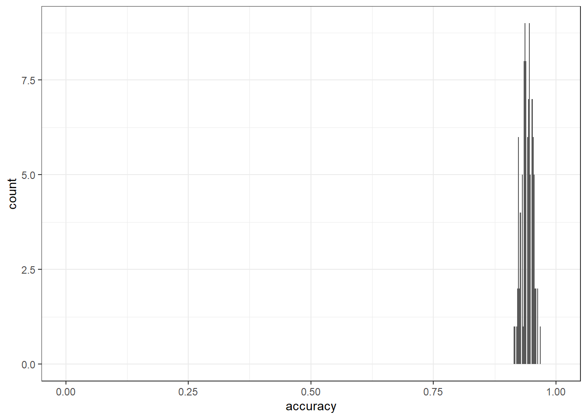

Classifying American Speeches
Gerold Schneider, Max Lauber
2022-11-15
1 Introduction
This tutorial shows how to perform document classification using R. The entire R markdown document for the tutorial can be downloaded here.
The tutorial requires you to install and load several packages to analyze linguistic data. To help you, we directly include the commands to do so in the script and walk you through it step by step. Let’s get on it!
2 Motivation
Document classification is a useful method of computational linguistics since it provides an effective way of handling large quantities of text. Think for a moment about spam mails. According to an analysis – or self-promotion, if you will – by the anti-virus company Kaspersky, more than half of the global email traffic is spam mail (Vergelis et al. 2019) (see here) . How do email providers manage to sift these quantities of data? They use document classification to separate the important email traffic from spam mail.
Emails are obviously a rather specific category of text, with one distinguishing feature: either you want them in your inbox, or you don’t. Of course, one person’s spam may be the other person’s key to retrieving a lost fortune, but for all intents and purposes, the global mail traffic is binary:
you don’t want it = spam
you want it = mails
For binary classes of text such as this, document classification comes in really handy. We will point to sources that address how document classification can be used in contexts with more than two categories, but in this tutorial we eschew such complexity.. To further preserve our collective wellbeing, we now turn our backs on spam mail.
3 American Speeches
Instead, we dive into another category of text that is notoriously binary: American presidential speeches. Although all candidates claim to peddle policies, what they are giving us instead are words (at least during the campaign trails). And by throwing these words into the meat grinder of document classification, we can identify which linguistic features are typical of which party, and, in a slightly more extensive analysis, we could tell the party hard-liners from the mavericks - but for now, we’ll stick with the binary categories and with linguistic features.
To use the jargon of computational linguistics: we are using supervised document classification for political profiling. Political profiling should not require further explanation, but the document classification we are getting to in a minute is considered supervised because the corpus has been constructed to include only two categories on the basis of pre-existing knowledge.
We extend our thanks to Marco Guerini and his co-authors for the construction of the CORPS II corpus, which contains 8 million words from 3618 speeches by American presidential candidates (Guerini et al. 2010). This CORPS II serves as our input. On the other end, our output will contain both a model that can predict a speaker’s party affiliation with a pleasingly high degree of accuracy and a list of keywords containing the linguistic features most typical for Republican candidates - and by extension, also those words least typical for Republicans, which in this beautifully binary political system means the words most typical of Democratic candidates.
3.1 Preparation and Session Setup
As mentioned at the outset, this is an introduction to document classification based on R. A rudimentary familiarity with R and RStudio are helpful for getting the most out of this. If you have yet to install R or are new to it, we can recommend this tutorial to R, which walks you through the installation and shows a range of its functionalities. In the following, we assume that you have downloaded and installed both R and RStudio and take it from there.
Although R in its basic version already contains a lot of
functionalities, we do need to install some packages for the code below
to run without exploding into a bouquet of error messages. If you
already have the packages quanteda,
quanteda.textmodels, stopwords and
ggplot2 installed, just skip to the next heading. If you
don’t have them yet, the first thing you want to do is run these first
lines of code:
#install.packages("quanteda")
#install.packages("quanteda.textmodels")
#install.packages("stopwords")
#install.packages("ggplot2")This may take a minute or three. In most cases, this will work without any hiccups. If you should get an error message, we recommend taking a moment to read what it says, and, if it does not make any sense to you, to google it. If an issue comes up for you, chances are that this has already happened to someone else - and, fortunately, the R community has a pretty good track record of responding to questions about technical issues. Generally, it is also a good idea to use a relatively new version of R. If you have last used R two years ago, do update it.
Once you have installed the packages, you’ll need to load them in the current session. This is done with the following lines of code:
library(quanteda)
library(quanteda.textmodels)
library(stopwords)
library(ggplot2)With the packages loaded, the stage is set. Now we need to dress up the actors.
3.2 From Data to Useable Objects
Before we can do anything further, we need to load the data into R.
As mentioned earlier, we are working with the CORPS II corpus compiled
by Guerini et al. (2010). There are many ways to get the
corpus into R, but we are going to download the data from the data
directory of the LADAL GitHub repository. By executing the following
line of code, you tell R to download the file containing the corpus from
github and storing it in the session under the variable name
rt:
rt <- base::readRDS(url("https://slcladal.github.io/data/SEL_perparty_v2.rda", "rb"))In the meantime, we want to draw your attention to the second parameter of the readtext command, namely the specification defining the text field. These specifications are called flags. These are often useful and sometimes necessary. In this case, the flag does exactly what it says: it tells R in which column the text is stored.
Let’s take a look at rt, the variable in which we stored
the corpus. We can do this simply by str which returns the
structure of the object:
str(rt)## Classes 'readtext' and 'data.frame': 3247 obs. of 5 variables:
## $ doc_id: chr "SEL_perparty_v2.csv.1" "SEL_perparty_v2.csv.2" "SEL_perparty_v2.csv.3" "SEL_perparty_v2.csv.4" ...
## $ text : chr "We who are Christians usually think about Christ in terms of obligations of charity , and faith in God , and so"| __truncated__ "It is a very great honor and pleasure for me to be here and participate in a dinner this evening that aims at s"| __truncated__ "Thank you . Praise God . Thank you very much . Tonight , I would like you first of all to join me in rememberin"| __truncated__ "Thank you . Thank you . Praise God . Thank you very much . I want to tell you I 'm very happy to have a few mom"| __truncated__ ...
## $ party : chr "rep" "rep" "rep" "rep" ...
## $ fileid: chr "akeyes-95" "akeyes-98" "akeyes1-2-00" "akeyes1-6-96" ...
## $ name : chr "Alan_Keyes" "Alan_Keyes" "Alan_Keyes" "Alan_Keyes" ...The output tells us what we are dealing with: a object consisting of 3247 documents and 3 document variables. We also see the first six rows of the object, which shows that we are dealing with a two dimensional matrix or a table, which in the R context is also called a data frame. What may be surprising is that, although the object is described as having three document variables, the data frame has five columns.
If we look at the structure of the corpus, we can see that the file
contains four columns, labeled party, fileid,
name and text, respectively. The object
rt to which we assigned the data created an additional
column, labeled doc_id. In this variable, the row number of
each row in the file is stored. If we were to load in a second document
and append it to the rt object, it would be clear which row
of data comes from which corpus. So, while it’s great to have this
doc_id, the output also makes it clear that it is not
meaningful information relevant to the text we are interested in.
The text source files come from the textual component of the files, and the document-level metadata (“docvars”) come from either the file contents or filenames.
So the three document variables are the document-level metadata, which pertain to the texts we are interested in. Depending on the type of analysis or operation you are interested in performing on the data, this is not essential information. For document classification, however, as well as many other analyses, this metadata is essential.
4 From Text to Corpus
Before we can proceed to the document classification, we need to
process the data some more. As a first step, we turn the data frame
rt into a corpus object. We can do this with one intuitive
command:
fulltext = corpus(rt)Thereby, we create a new corpus object called fulltext.
Let’s take a look at it:
fulltext## Corpus consisting of 3,247 documents and 3 docvars.
## SEL_perparty_v2.csv.1 :
## "We who are Christians usually think about Christ in terms of..."
##
## SEL_perparty_v2.csv.2 :
## "It is a very great honor and pleasure for me to be here and ..."
##
## SEL_perparty_v2.csv.3 :
## "Thank you . Praise God . Thank you very much . Tonight , I w..."
##
## SEL_perparty_v2.csv.4 :
## "Thank you . Thank you . Praise God . Thank you very much . I..."
##
## SEL_perparty_v2.csv.5 :
## "Thank you very much , God bless you . Unaccustomed as I am t..."
##
## SEL_perparty_v2.csv.6 :
## "Thank you very much . You all make me feel so good with that..."
##
## [ reached max_ndoc ... 3,241 more documents ]The output here contains the first six entries of the corpus, which are now only the text fields, the actual speeches. The metadata is not lost, however, as the first line of the output shows - telling us that the corpus consost of 3,247 documents and 3 document variables. This is precisely as it should be.
If you’re somewhat familiar with R, you may have noticed something slightly off-putting. Usually, when you enter a variable name, the output shows the whole variable. In this case, we only got the first six entries. This is one of the benefits of the corpus object: since corpora are often voluminous and take a surprising amount of computational power to be displayed in the console, there is a safety mechanism built into the corpus object. To prevent an accidental system overload, only the head of the object is displayed.
With this, we have entered the domain of object-oriented programming.
We are not going to discuss this at length, but want to briefly
introduce the term and the idea behind it. Object-oriented programming
is based on the concept of objects, which have considerable
internal complexity, and can contain both data and code. As far as the
data goes, this is not surprising: we have something like a data frame
or a vector that contains variables. This exists in most programming
paradigms. What is different in object-oriented programming is the code,
which is often called method or behavior. The behavior we encountered
just now is that of only displaying the first six entries of the object,
and only showing the text fields, which contain the data of interest in
corpus objects. This is also where we turn our attention next.
4.1 Pre-Processing
Let’s look again at the output that we got looking at the corpus
object fulltext. We see several features there which pose a
hindrance to solid document classification. For instance, there is
punctuation which will have to go. Similarly, the capital letters, both
in the beginning of sentences and in words like Christians will
have to be - for lack of a better word - exorcized. The point of
removing these and other features is to reduce the variation in the
language to such a degree that we can process the texts well
statistically, while leaving as much of the semantic content as possible
intact. With this in mind, there are several steps which are necessary
in terms of pre-processing, and we will take these one at a time.
5 Tokenization
The first step here is to transform the text in the corpus object
into individual tokens. Right now, each text cell in the
fulltext object contains one whole presidential campaign
speech. By tokenizing the corpus, each text entry in fulltext is
transformed into a list of words. In order to do this, we define a new
variable, toks, and use the perfectly descriptive command
tokens() to tokenize the corpus and assign it to the new
variable toks:
toks <- tokens(fulltext, remove_punct = TRUE)Sneakily, we also use a flag here to remove punctuation. Let’s look
at how this step changed the content of the corpus. Having removed the
punctuation, it makes sense to pick a speech which contained punctuation
in the beginning, so we choose speech four. We can look at this specific
speech by entering the name of the object, toks, and adding
the row number of choice in square brackets, thus:
toks[4]## Tokens consisting of 1 document and 3 docvars.
## SEL_perparty_v2.csv.4 :
## [1] "Thank" "you" "Thank" "you" "Praise" "God" "Thank" "you"
## [9] "very" "much" "I" "want"
## [ ... and 2,530 more ]6 Lowercasing
This next step is fairly obvious: the heading says it, the command
says it, and it’s precisely what we are going to do. We’re going to
replace all capital letters by their lowercase equivalent in the corpus.
This is mainly to reduce the variation that arises from words that stand
at the beginning of a sentence. To do it, we use the command
tokens_tolower(), as demonstrated here:
toks = tokens_tolower(toks)The command is self explanatory, but we should add: we define the
object toks as input, replace capital letters with
lowercase ones and assign the outcome again to the object
toks, thus overwriting what was there before. If we now
look at row four again, we see the result of this transformation:
toks[4]## Tokens consisting of 1 document and 3 docvars.
## SEL_perparty_v2.csv.4 :
## [1] "thank" "you" "thank" "you" "praise" "god" "thank" "you"
## [9] "very" "much" "i" "want"
## [ ... and 2,530 more ]Where before there was Thank and I, we now have thank and i. Not much more to see here, so let’s keep moving.
7 Stemming
This time round, the transformation is a bit more drastic: we are going to reduce each word in the corpus to its word stem. Take a quick look at the first item of the toks object:
toks[1]## Tokens consisting of 1 document and 3 docvars.
## SEL_perparty_v2.csv.1 :
## [1] "we" "who" "are" "christians" "usually"
## [6] "think" "about" "christ" "in" "terms"
## [11] "of" "obligations"
## [ ... and 6,212 more ]We have here, among other words, christians, usually and obligations. Keep those in mind as you reduce the corpus to wordstems, again using a fairly intuitive command:
toks = tokens_wordstem(toks)Using the same procedure as with lowercasing, we overwrite the
contents of the toks object with its latest transformation.
We can see how this plays out by again looking at the first item.
toks[1]## Tokens consisting of 1 document and 3 docvars.
## SEL_perparty_v2.csv.1 :
## [1] "we" "who" "are" "christian" "usual" "think"
## [7] "about" "christ" "in" "term" "of" "oblig"
## [ ... and 6,212 more ]Everything is shortened compared to before: christian, usually, and oblig. Compared to the preceding steps, a bit more informational value is lost, but this is often a trade-off worth taking, seeing as it typically enhances the performance of the document classification quite substantially.
8 Remove Stopwords
The final intrusion into the linguistic source material is the removal of stopwords. These are words which are very common, to a degree that one can assume that they will, on average, be equally distributed between the two classes. They are typically also words that have no meaning on their own, for example the, in, etc. As they rather regulate the relations between words, they are also called function words (as opposed to content words, which we want to keep). There is no universal list of stopwords - and some methods make do without removing stopwords - but for our purposes, it makes sense to just work with a list that is readily available, which is the one specified in the flag. The command is as follows:
toks = tokens_remove(toks, pattern = stopwords::stopwords(language = "en", source = "snowball"))Again, the command is very explicit in its function, the input is the tokenized, punctuation-less, lowercased and stemmed version of the toks object, which we overwrite to create a version that is all of the above and additionally does not contain stopwords. We see in row one how that looks:
toks[1]## Tokens consisting of 1 document and 3 docvars.
## SEL_perparty_v2.csv.1 :
## [1] "christian" "usual" "think" "christ" "term" "oblig"
## [7] "chariti" "faith" "god" "forth" "don" "t"
## [ ... and 2,751 more ]This looks quite a bit different: a lot of words are gone, such as we, who and are. For the most part, what remains are the stems of nouns and verbs, words which carry semantic meaning.
9 Imperfections
Clearly, this approach to pre-processing is not without flaws. We still see, for instance, in the last two positions of the output, that don’t was split into two tokens, don and t. Don would probably also appear as the appropriate word for various garments a lot in a Victorian fashion weekly, which is probably not what Alan Keyes was referring to in his presidential campaign speech, while not should probably be part of the stopword list. Or, to return to the purged stopwards mentioned above, who could have been accidentally removed: once the World Health Organization’s abbreviation is lowercased, it is indistinguishable from the pronoun. So you can see that there are some pitfalls to pre-processing, which are usually quite harmless compared to the benefits (and improved model). However, it can lead to problematic omissions in certain contexts. Ultimately, you need to be aware of the linguistic context you’re working in and make the trade-off on whether finer-grained pre-processing is worth the effort.
9.1 Signal and Noise
10 Document-Feature Matrix
With the linguistic pre-processing done, we continue to the next
step: creating a document-feature matrix – simply a table which says how
often which word occurs in each document. This is the format we need to
run the document classification. We’ll get into its structure in a
second. But first, we turn the pre-processed corpus into a
document-feature matrix. Once more, the command, dfm, is
fairly self-explanatory:
dtm <- dfm(toks)This time round, we create a new object with the name
dtm, and the input to this operation is the latest version
of the toks object. In case you are not familiar with this
particular type of matrix, you might get a better sense for what we are
dealing with is by looking at the object directly:
dtm## Document-feature matrix of: 3,247 documents, 32,073 features (98.42% sparse) and 3 docvars.
## features
## docs christian usual think christ term oblig chariti faith
## SEL_perparty_v2.csv.1 17 3 28 12 4 1 1 22
## SEL_perparty_v2.csv.2 1 1 14 3 0 1 0 4
## SEL_perparty_v2.csv.3 0 0 12 0 0 0 0 7
## SEL_perparty_v2.csv.4 1 0 15 0 0 0 0 0
## SEL_perparty_v2.csv.5 6 1 16 11 1 0 0 3
## SEL_perparty_v2.csv.6 3 0 26 10 4 3 0 7
## features
## docs god forth
## SEL_perparty_v2.csv.1 82 1
## SEL_perparty_v2.csv.2 21 2
## SEL_perparty_v2.csv.3 8 0
## SEL_perparty_v2.csv.4 4 1
## SEL_perparty_v2.csv.5 48 5
## SEL_perparty_v2.csv.6 6 5
## [ reached max_ndoc ... 3,241 more documents, reached max_nfeat ... 32,063 more features ]At first glance, you can see that our variable dtm is an
object similar to the earlier fulltext, in that only the
first six rows of the matrix are pasted in the output, and that there is
a summary of the object. And now we can also see the structure of this
document-feature matrix. Turns out, the name is quite the give-away: the
document feature matrix allows us to see how often each feature appears
in each document.
In this matrix, we can access both the columns and the rows, the way we usually do with data frames in R. To do this, we append a square bracket to the object. We can access rows thusly:
dtm[3,]## Document-feature matrix of: 1 document, 32,073 features (98.61% sparse) and 3 docvars.
## features
## docs christian usual think christ term oblig chariti faith
## SEL_perparty_v2.csv.3 0 0 12 0 0 0 0 7
## features
## docs god forth
## SEL_perparty_v2.csv.3 8 0
## [ reached max_nfeat ... 32,063 more features ]Here, we see that think features twelve times in the third speech in the corpus. Or, accounting for what the pre-processing did to the text, we can say that some version of think appears in this speech.
Accessing the columns works analogously: we simply place the number after the comma:
dtm[,3]## Document-feature matrix of: 3,247 documents, 1 feature (19.00% sparse) and 3 docvars.
## features
## docs think
## SEL_perparty_v2.csv.1 28
## SEL_perparty_v2.csv.2 14
## SEL_perparty_v2.csv.3 12
## SEL_perparty_v2.csv.4 15
## SEL_perparty_v2.csv.5 16
## SEL_perparty_v2.csv.6 26
## [ reached max_ndoc ... 3,241 more documents ]We see here that think is a frequent feature, at least in the first six speeches in the corpus. By looking at the metadata, or, as we call them here, the document variables, we can see that the first six speeches were all given by the same speaker. To access the document variables and solve the riveting riddle of who this famous thinker is, we can use another one of these intuitively named commands:
head(docvars(dtm))## party fileid name
## 1 rep akeyes-95 Alan_Keyes
## 2 rep akeyes-98 Alan_Keyes
## 3 rep akeyes1-2-00 Alan_Keyes
## 4 rep akeyes1-6-96 Alan_Keyes
## 5 rep akeyes1-6-98 Alan_Keyes
## 6 rep akeyes10-96 Alan_KeyesWith the docvars command, we get a list of the document
variables for each document, that is each row, in the dtm
object. However, we nest this inside of the command head()
- which is useful for taking a first look at any variable, since it only
displays the first six rows of a variable. We do this here because the
docvars are not subject to the same behavior protocol that the corpus
object is. Your computer is unlikely to overload if you were to
accidentally view the whole docvars without taking this
head precaution. So let’s try it:
docvars(dtm)## party fileid name
## 1 rep akeyes-95 Alan_Keyes
## 2 rep akeyes-98 Alan_Keyes
## 3 rep akeyes1-2-00 Alan_Keyes
## 4 rep akeyes1-6-96 Alan_Keyes
## 5 rep akeyes1-6-98 Alan_Keyes
## 6 rep akeyes10-96 Alan_Keyes
## 7 rep akeyes11-5-00 Alan_Keyes
## 8 rep akeyes11-9-95 Alan_Keyes
## 9 rep akeyes12-10-96 Alan_Keyes
## 10 rep akeyes12-5-00 Alan_Keyes
## 11 rep akeyes12-6-98 Alan_Keyes
## 12 rep akeyes13-8-96 Alan_Keyes
## 13 rep akeyes13-9-04 Alan_Keyes
## 14 rep akeyes14-10-03 Alan_Keyes
## 15 rep akeyes14-8-99 Alan_Keyes
## 16 rep akeyes16-6-95 Alan_Keyes
## 17 rep akeyes16-8-03 Alan_Keyes
## 18 rep akeyes17-1-00 Alan_Keyes
## 19 rep akeyes18-5-96 Alan_Keyes
## 20 rep akeyes19-5-06 Alan_Keyes
## 21 rep akeyes2-12-06 Alan_Keyes
## 22 rep akeyes2-9-04 Alan_Keyes
## 23 rep akeyes20-5-95 Alan_Keyes
## 24 rep akeyes20-9-99 Alan_Keyes
## 25 rep akeyes21-6-06 Alan_Keyes
## 26 rep akeyes21-6-96 Alan_Keyes
## 27 rep akeyes22-9-00 Alan_Keyes
## 28 rep akeyes22-9-95 Alan_Keyes
## 29 rep akeyes23-2-96 Alan_Keyes
## 30 rep akeyes24-2-97 Alan_Keyes
## 31 rep akeyes24-9-02 Alan_Keyes
## 32 rep akeyes25-8-01 Alan_Keyes
## 33 rep akeyes25-9-02 Alan_Keyes
## 34 rep akeyes27-1-96 Alan_Keyes
## 35 rep akeyes28-2-98 Alan_Keyes
## 36 rep akeyes28-3-06 Alan_Keyes
## 37 rep akeyes29-1-00 Alan_Keyes
## 38 rep akeyes3-06 Alan_Keyes
## 39 rep akeyes3-3-95 Alan_Keyes
## 40 rep akeyes4-11-06 Alan_Keyes
## 41 rep akeyes4-11-95 Alan_Keyes
## 42 rep akeyes5-11-06 Alan_Keyes
## 43 rep akeyes7-1-96 Alan_Keyes
## 44 rep akeyes7-11-97 Alan_Keyes
## 45 rep akeyes7-2-04 Alan_Keyes
## 46 rep akeyes7-7-01 Alan_Keyes
## 47 rep akeyes8-3-00 Alan_Keyes
## 48 rep akeyes8-4-05 Alan_Keyes
## 49 rep akeyes8-8-04 Alan_Keyes
## 50 rep akeyes8-9-04 Alan_Keyes
## 51 rep akeyes9-7-96 Alan_Keyes
## 52 dem algore1-10-97a Al_Gore
## 53 dem algore1-10-97b Al_Gore
## 54 dem algore1-11-00-excerpt Al_Gore
## 55 dem algore1-11-97 Al_Gore
## 56 dem algore10-10-96a Al_Gore
## 57 dem algore10-10-96b Al_Gore
## 58 dem algore10-5-00 Al_Gore
## 59 dem algore11-8-00-excerpt Al_Gore
## 60 dem algore13-2-97 Al_Gore
## 61 dem algore13-3-97b Al_Gore
## 62 dem algore13-3-97c Al_Gore
## 63 dem algore14-6-95 Al_Gore
## 64 dem algore14-9-02 Al_Gore
## 65 dem algore14-9-94 Al_Gore
## 66 dem algore15-1-04 Al_Gore
## 67 dem algore15-7-00 Al_Gore
## 68 dem algore15-8-00 Al_Gore
## 69 dem algore16-1-06 Al_Gore
## 70 dem algore17-3-95 Al_Gore
## 71 dem algore17-8-00 Al_Gore
## 72 dem algore18-10-04 Al_Gore
## 73 dem algore18-3-98 Al_Gore
## 74 dem algore18-9-00-excerpt Al_Gore
## 75 dem algore19-1-98 Al_Gore
## 76 dem algore2-10-03 Al_Gore
## 77 dem algore2-2-02 Al_Gore
## 78 dem algore20-1-99a Al_Gore
## 79 dem algore20-1-99b Al_Gore
## 80 dem algore20-6-00-excerpt Al_Gore
## 81 dem algore20-9-93 Al_Gore
## 82 dem algore21-6-96 Al_Gore
## 83 dem algore23-9-02 Al_Gore
## 84 dem algore24-6-04 Al_Gore
## 85 dem algore26-7-04 Al_Gore
## 86 dem algore27-6-95 Al_Gore
## 87 dem algore28-1-98a Al_Gore
## 88 dem algore28-1-98b Al_Gore
## 89 dem algore28-9-00-excerpt Al_Gore
## 90 dem algore28-9-95 Al_Gore
## 91 dem algore29-9-01 Al_Gore
## 92 dem algore30-10-00-excerpt Al_Gore
## 93 dem algore30-11-93 Al_Gore
## 94 dem algore30-3-98 Al_Gore
## 95 dem algore30-4-98 Al_Gore
## 96 dem algore4-5-95 Al_Gore
## 97 dem algore6-9-00-excerpt Al_Gore
## 98 dem algore7-1-01 Al_Gore
## 99 dem algore7-9-93 Al_Gore
## 100 dem algore8-5-97 Al_Gore
## 101 dem algore9-12-03 Al_Gore
## 102 dem algore9-5-00 Al_Gore
## 103 dem algore9-9-05 Al_Gore
## 104 dem algore92 Al_Gore
## 105 dem bobama1-12-09 Barack_Obama
## 106 dem bobama1-3-10 Barack_Obama
## 107 dem bobama1-4-10a Barack_Obama
## 108 dem bobama1-4-10b Barack_Obama
## 109 dem bobama1-4-10c Barack_Obama
## 110 dem bobama1-5-09a Barack_Obama
## 111 dem bobama1-5-09b Barack_Obama
## 112 dem bobama1-5-10 Barack_Obama
## 113 dem bobama1-7-10a Barack_Obama
## 114 dem bobama1-7-10b Barack_Obama
## 115 dem bobama1-7-10c Barack_Obama
## 116 dem bobama1-9-09 Barack_Obama
## 117 dem bobama10-12-09a Barack_Obama
## 118 dem bobama10-12-09b Barack_Obama
## 119 dem bobama10-2-07 Barack_Obama
## 120 dem bobama10-3-09 Barack_Obama
## 121 dem bobama10-3-10a Barack_Obama
## 122 dem bobama10-3-10b Barack_Obama
## 123 dem bobama10-3-10c Barack_Obama
## 124 dem bobama10-3-10d Barack_Obama
## 125 dem bobama10-5-09 Barack_Obama
## 126 dem bobama10-5-10 Barack_Obama
## 127 dem bobama10-8-10 Barack_Obama
## 128 dem bobama10-9-09a Barack_Obama
## 129 dem bobama10-9-09b Barack_Obama
## 130 dem bobama11-10-09 Barack_Obama
## 131 dem bobama11-2-09 Barack_Obama
## 132 dem bobama11-3-09 Barack_Obama
## 133 dem bobama11-3-10 Barack_Obama
## 134 dem bobama11-5-09 Barack_Obama
## 135 dem bobama11-7-09a Barack_Obama
## 136 dem bobama11-7-09b Barack_Obama
## 137 dem bobama11-8-10 Barack_Obama
## 138 dem bobama12-11-09 Barack_Obama
## 139 dem bobama12-2-09a Barack_Obama
## 140 dem bobama12-2-09c Barack_Obama
## 141 dem bobama12-3-09a Barack_Obama
## 142 dem bobama12-3-09c Barack_Obama
## 143 dem bobama12-5-09 Barack_Obama
## 144 dem bobama12-8-09a Barack_Obama
## 145 dem bobama12-8-09b Barack_Obama
## 146 dem bobama12-9-09 Barack_Obama
## 147 dem bobama13-4-09 Barack_Obama
## 148 dem bobama13-5-09 Barack_Obama
## 149 dem bobama13-5-10 Barack_Obama
## 150 dem bobama13-7-09a Joe_Biden
## 151 dem bobama13-7-09b Barack_Obama
## 152 dem bobama13-7-10 Barack_Obama
## 153 dem bobama13-8-10 Barack_Obama
## 154 dem bobama13-9-10a Barack_Obama
## 155 dem bobama13-9-10b Barack_Obama
## 156 dem bobama13-9-10c Barack_Obama
## 157 dem bobama14-1-10a Barack_Obama
## 158 dem bobama14-1-10b Barack_Obama
## 159 dem bobama14-10-09 Barack_Obama
## 160 dem bobama14-11-09 Barack_Obama
## 161 dem bobama14-12-09 Barack_Obama
## 162 dem bobama14-4-09 Barack_Obama
## 163 dem bobama14-5-09a Barack_Obama
## 164 dem bobama14-5-09b Barack_Obama
## 165 dem bobama14-5-10 Barack_Obama
## 166 dem bobama14-6-06 Barack_Obama
## 167 dem bobama14-7-09 Barack_Obama
## 168 dem bobama14-9-09 Barack_Obama
## 169 dem bobama14-9-10 Barack_Obama
## 170 dem bobama15-10-09 Barack_Obama
## 171 dem bobama15-11-09 Barack_Obama
## 172 dem bobama15-12-09 Barack_Obama
## 173 dem bobama15-3-10 Barack_Obama
## 174 dem bobama15-4-10 Barack_Obama
## 175 dem bobama15-5-09 Barack_Obama
## 176 dem bobama15-6-09 Barack_Obama
## 177 dem bobama15-6-10 Barack_Obama
## 178 dem bobama15-7-10 Barack_Obama
## 179 dem bobama15-9-09a Barack_Obama
## 180 dem bobama15-9-09b Barack_Obama
## 181 dem bobama15-9-09c Barack_Obama
## 182 dem bobama15-9-10 Barack_Obama
## 183 dem bobama16-10-09 Barack_Obama
## 184 dem bobama16-2-10 Barack_Obama
## 185 dem bobama16-3-09a Barack_Obama
## 186 dem bobama16-3-09b Barack_Obama
## 187 dem bobama16-4-09a Barack_Obama
## 188 dem bobama16-4-09b Barack_Obama
## 189 dem bobama16-4-09c Barack_Obama
## 190 dem bobama16-4-10a Barack_Obama
## 191 dem bobama16-4-10b Barack_Obama
## 192 dem bobama16-6-10 Barack_Obama
## 193 dem bobama16-7-09 Barack_Obama
## 194 dem bobama16-8-10 Barack_Obama
## 195 dem bobama16-9-09 Barack_Obama
## 196 dem bobama16-9-10a Barack_Obama
## 197 dem bobama16-9-10b Barack_Obama
## 198 dem bobama16-9-10c Barack_Obama
## 199 dem bobama17-1-10a Barack_Obama
## 200 dem bobama17-1-10b Barack_Obama
## 201 dem bobama17-2-09 Barack_Obama
## 202 dem bobama17-2-10 Barack_Obama
## 203 dem bobama17-3-09a Barack_Obama
## 204 dem bobama17-3-09b Barack_Obama
## 205 dem bobama17-3-09c Barack_Obama
## 206 dem bobama17-3-10 Barack_Obama
## 207 dem bobama17-4-09 Barack_Obama
## 208 dem bobama17-5-09a Barack_Obama
## 209 dem bobama17-5-09b Barack_Obama
## 210 dem bobama17-5-10 Barack_Obama
## 211 dem bobama17-6-09a Barack_Obama
## 212 dem bobama17-8-09 Barack_Obama
## 213 dem bobama17-8-10a Barack_Obama
## 214 dem bobama17-8-10b Barack_Obama
## 215 dem bobama17-8-10c Barack_Obama
## 216 dem bobama17-8-10d Barack_Obama
## 217 dem bobama17-9-09a Barack_Obama
## 218 dem bobama17-9-09b Barack_Obama
## 219 dem bobama17-9-09c Barack_Obama
## 220 dem bobama18-12-09 Barack_Obama
## 221 dem bobama18-2-09 Barack_Obama
## 222 dem bobama18-2-10a Barack_Obama
## 223 dem bobama18-2-10b Barack_Obama
## 224 dem bobama18-3-10a Barack_Obama
## 225 dem bobama18-3-10b Barack_Obama
## 226 dem bobama18-5-10 Barack_Obama
## 227 dem bobama18-6-10 Barack_Obama
## 228 dem bobama18-8-10a Barack_Obama
## 229 dem bobama18-8-10b Barack_Obama
## 230 dem bobama19-1-10 Barack_Obama
## 231 dem bobama19-2-10 Barack_Obama
## 232 dem bobama19-3-10 Barack_Obama
## 233 dem bobama19-4-10 Barack_Obama
## 234 dem bobama19-5-09a Barack_Obama
## 235 dem bobama19-5-09b Barack_Obama
## 236 dem bobama19-5-10a Barack_Obama
## 237 dem bobama19-5-10b Barack_Obama
## 238 dem bobama19-6-09a Barack_Obama
## 239 dem bobama19-6-09b Barack_Obama
## 240 dem bobama19-7-10a Barack_Obama
## 241 dem bobama19-7-10b Barack_Obama
## 242 dem bobama19-8-09 Barack_Obama
## 243 dem bobama2-2-07 Barack_Obama
## 244 dem bobama2-3-09 Barack_Obama
## 245 dem bobama2-3-10 Barack_Obama
## 246 dem bobama2-5-10a Barack_Obama
## 247 dem bobama2-5-10b Barack_Obama
## 248 dem bobama2-6-10 Barack_Obama
## 249 dem bobama2-7-10 Barack_Obama
## 250 dem bobama2-8-10a Barack_Obama
## 251 dem bobama2-8-10b Barack_Obama
## 252 dem bobama20-1-09 Barack_Obama
## 253 dem bobama20-1-10 Barack_Obama
## 254 dem bobama20-10-09b Barack_Obama
## 255 dem bobama20-11-09 Barack_Obama
## 256 dem bobama20-2-09 Barack_Obama
## 257 dem bobama20-3-10 Barack_Obama
## 258 dem bobama20-4-09 Barack_Obama
## 259 dem bobama20-4-10a Barack_Obama
## 260 dem bobama20-4-10b Barack_Obama
## 261 dem bobama20-5-09 Barack_Obama
## 262 dem bobama20-6-09 Barack_Obama
## 263 dem bobama21-1-09 Barack_Obama
## 264 dem bobama21-1-10 Barack_Obama
## 265 dem bobama21-10-09a Barack_Obama
## 266 dem bobama21-10-09b Barack_Obama
## 267 dem bobama21-4-09 Barack_Obama
## 268 dem bobama21-5-09a Barack_Obama
## 269 dem bobama21-5-09b Barack_Obama
## 270 dem bobama21-5-10 Barack_Obama
## 271 dem bobama21-6-10 Barack_Obama
## 272 dem bobama21-7-09 Barack_Obama
## 273 dem bobama21-7-10 Barack_Obama
## 274 dem bobama21-9-09 Barack_Obama
## 275 dem bobama22-10-09 Barack_Obama
## 276 dem bobama22-2-10a Barack_Obama
## 277 dem bobama22-2-10b Barack_Obama
## 278 dem bobama22-4-09 Barack_Obama
## 279 dem bobama22-4-10a Barack_Obama
## 280 dem bobama22-4-10b Barack_Obama
## 281 dem bobama22-5-09a Barack_Obama
## 282 dem bobama22-5-09b Barack_Obama
## 283 dem bobama22-5-09c Barack_Obama
## 284 dem bobama22-5-10 Barack_Obama
## 285 dem bobama22-6-09a Barack_Obama
## 286 dem bobama22-6-09b Barack_Obama
## 287 dem bobama22-6-10a Barack_Obama
## 288 dem bobama22-6-10b Barack_Obama
## 289 dem bobama22-9-09a Barack_Obama
## 290 dem bobama23-10-09 Barack_Obama
## 291 dem bobama23-11-09a Barack_Obama
## 292 dem bobama23-11-09b Barack_Obama
## 293 dem bobama23-2-09b Barack_Obama
## 294 dem bobama23-3-09 Barack_Obama
## 295 dem bobama23-3-10a Barack_Obama
## 296 dem bobama23-3-10b Barack_Obama
## 297 dem bobama23-4-10 Barack_Obama
## 298 dem bobama23-9-09a Barack_Obama
## 299 dem bobama23-9-09b Barack_Obama
## 300 dem bobama24-11-09a Barack_Obama
## 301 dem bobama24-11-09b Barack_Obama
## 302 dem bobama24-2-10 Barack_Obama
## 303 dem bobama24-5-10 Barack_Obama
## 304 dem bobama24-7-09a Barack_Obama
## 305 dem bobama24-7-09b Barack_Obama
## 306 dem bobama24-7-09c Barack_Obama
## 307 dem bobama24-7-09d Barack_Obama
## 308 dem bobama25-1-10b Barack_Obama
## 309 dem bobama25-11-09 Barack_Obama
## 310 dem bobama25-2-10 Barack_Obama
## 311 dem bobama25-3-09 Barack_Obama
## 312 dem bobama25-3-10 Barack_Obama
## 313 dem bobama25-4-10 Barack_Obama
## 314 dem bobama25-5-09 Barack_Obama
## 315 dem bobama25-5-10 Barack_Obama
## 316 dem bobama25-6-09 Barack_Obama
## 317 dem bobama25-9-09 Barack_Obama
## 318 dem bobama26-10-09a Barack_Obama
## 319 dem bobama26-10-09b Barack_Obama
## 320 dem bobama26-2-10 Barack_Obama
## 321 dem bobama26-4-10a Barack_Obama
## 322 dem bobama26-4-10b Barack_Obama
## 323 dem bobama26-5-09 Barack_Obama
## 324 dem bobama26-5-10a Barack_Obama
## 325 dem bobama26-5-10b Barack_Obama
## 326 dem bobama26-5-10c Barack_Obama
## 327 dem bobama26-7-10 Barack_Obama
## 328 dem bobama27-1-10 Barack_Obama
## 329 dem bobama27-10-09 Barack_Obama
## 330 dem bobama27-3-09a Barack_Obama
## 331 dem bobama27-4-09a Barack_Obama
## 332 dem bobama27-4-09b Barack_Obama
## 333 dem bobama27-4-10 Barack_Obama
## 334 dem bobama27-5-09a Barack_Obama
## 335 dem bobama27-5-09b Barack_Obama
## 336 dem bobama27-5-10 Barack_Obama
## 337 dem bobama27-7-04 Barack_Obama
## 338 dem bobama27-7-09a Barack_Obama
## 339 dem bobama27-7-09b Barack_Obama
## 340 dem bobama27-9-09 Barack_Obama
## 341 dem bobama28-10-09a Barack_Obama
## 342 dem bobama28-10-09b Barack_Obama
## 343 dem bobama28-10-09c Barack_Obama
## 344 dem bobama28-3-10 Barack_Obama
## 345 dem bobama28-4-09a Barack_Obama
## 346 dem bobama28-4-09b Barack_Obama
## 347 dem bobama28-4-09c Barack_Obama
## 348 dem bobama28-4-10a Barack_Obama
## 349 dem bobama28-4-10b Barack_Obama
## 350 dem bobama28-5-10 Barack_Obama
## 351 dem bobama29-1-09 Barack_Obama
## 352 dem bobama29-1-10 Barack_Obama
## 353 dem bobama29-10-09 Barack_Obama
## 354 dem bobama29-4-09 Barack_Obama
## 355 dem bobama29-4-10 Barack_Obama
## 356 dem bobama29-5-09a Barack_Obama
## 357 dem bobama29-5-09b Barack_Obama
## 358 dem bobama29-6-09 Barack_Obama
## 359 dem bobama29-7-10a Barack_Obama
## 360 dem bobama29-7-10b Barack_Obama
## 361 dem bobama29-8-09 Barack_Obama
## 362 dem bobama29-8-10 Barack_Obama
## 363 dem bobama3-12-09a Barack_Obama
## 364 dem bobama3-12-09b Barack_Obama
## 365 dem bobama3-3-09 Barack_Obama
## 366 dem bobama3-3-10 Barack_Obama
## 367 dem bobama3-5-10 Barack_Obama
## 368 dem bobama3-6-10a Barack_Obama
## 369 dem bobama3-6-10b Barack_Obama
## 370 dem bobama3-8-09 Barack_Obama
## 371 dem bobama30-10-09 Barack_Obama
## 372 dem bobama30-3-09 Barack_Obama
## 373 dem bobama30-3-10 Barack_Obama
## 374 dem bobama30-4-09 Barack_Obama
## 375 dem bobama30-6-09a Barack_Obama
## 376 dem bobama30-6-09b Barack_Obama
## 377 dem bobama30-7-10 Barack_Obama
## 378 dem bobama30-9-09 Barack_Obama
## 379 dem bobama31-3-10 Barack_Obama
## 380 dem bobama31-8-10 Barack_Obama
## 381 dem bobama4-11-09a Barack_Obama
## 382 dem bobama4-11-09b Barack_Obama
## 383 dem bobama4-2-10a Barack_Obama
## 384 dem bobama4-2-10b Barack_Obama
## 385 dem bobama4-2-10c Barack_Obama
## 386 dem bobama4-5-09 Barack_Obama
## 387 dem bobama4-6-09 Barack_Obama
## 388 dem bobama4-6-10a Barack_Obama
## 389 dem bobama4-6-10b Barack_Obama
## 390 dem bobama4-7-09 Barack_Obama
## 391 dem bobama4-8-10a Barack_Obama
## 392 dem bobama4-8-10b Barack_Obama
## 393 dem bobama5-10-09 Barack_Obama
## 394 dem bobama5-2-09a Barack_Obama
## 395 dem bobama5-2-09b Barack_Obama
## 396 dem bobama5-3-09a Barack_Obama
## 397 dem bobama5-3-09b Barack_Obama
## 398 dem bobama5-3-10 Barack_Obama
## 399 dem bobama5-4-09 Barack_Obama
## 400 dem bobama5-5-10a Barack_Obama
## 401 dem bobama5-5-10b Barack_Obama
## 402 dem bobama5-6-09 Barack_Obama
## 403 dem bobama5-8-09 Barack_Obama
## 404 dem bobama5-8-10a Barack_Obama
## 405 dem bobama5-8-10b Barack_Obama
## 406 dem bobama5-8-10c Barack_Obama
## 407 dem bobama6-1-10 Barack_Obama
## 408 dem bobama6-10-09 Barack_Obama
## 409 dem bobama6-12-09 Barack_Obama
## 410 dem bobama6-3-09 Barack_Obama
## 411 dem bobama6-4-09 Barack_Obama
## 412 dem bobama6-4-10 Barack_Obama
## 413 dem bobama6-7-10 Barack_Obama
## 414 dem bobama6-8-10a Barack_Obama
## 415 dem bobama6-8-10b Barack_Obama
## 416 dem bobama6-9-10 Barack_Obama
## 417 dem bobama7-10-09a Barack_Obama
## 418 dem bobama7-10-09b Barack_Obama
## 419 dem bobama7-4-09 Barack_Obama
## 420 dem bobama7-6-10a Barack_Obama
## 421 dem bobama7-6-10b Barack_Obama
## 422 dem bobama7-6-10c Barack_Obama
## 423 dem bobama7-7-09a Barack_Obama
## 424 dem bobama7-7-09b Barack_Obama
## 425 dem bobama7-7-09c Barack_Obama
## 426 dem bobama7-7-10 Barack_Obama
## 427 dem bobama7-8-09 Barack_Obama
## 428 dem bobama7-9-09 Barack_Obama
## 429 dem bobama8-12-09 Barack_Obama
## 430 dem bobama8-3-10a Barack_Obama
## 431 dem bobama8-3-10b Barack_Obama
## 432 dem bobama8-3-10c Barack_Obama
## 433 dem bobama8-5-09 Barack_Obama
## 434 dem bobama8-6-10 Barack_Obama
## 435 dem bobama8-7-10a Barack_Obama
## 436 dem bobama8-7-10b Barack_Obama
## 437 dem bobama8-7-10c Barack_Obama
## 438 dem bobama8-9-09 Barack_Obama
## 439 dem bobama8-9-10 Barack_Obama
## 440 dem bobama9-10-09 Barack_Obama
## 441 dem bobama9-12-09 Barack_Obama
## 442 dem bobama9-2-10 Barack_Obama
## 443 dem bobama9-3-10 Barack_Obama
## 444 dem bobama9-4-09 Barack_Obama
## 445 dem bobama9-5-10 Barack_Obama
## 446 dem bobama9-6-09 Barack_Obama
## 447 dem bobama9-7-10 Barack_Obama
## 448 dem bobama9-8-10a Barack_Obama
## 449 dem bobama9-8-10b Barack_Obama
## 450 dem bobama9-8-10c Barack_Obama
## 451 dem bobama9-9-09a Barack_Obama
## 452 dem bobama9-9-09b Barack_Obama
## 453 rep crice1-4-05 Condoleezza_Rice
## 454 rep crice10-3-05 Condoleezza_Rice
## 455 rep crice10-5-06 Condoleezza_Rice
## 456 rep crice11-11-05 Condoleezza_Rice
## 457 rep crice12-9-06 Condoleezza_Rice
## 458 rep crice13-11-05 Condoleezza_Rice
## 459 rep crice14-6-06 Condoleezza_Rice
## 460 rep crice14-9-06 Condoleezza_Rice
## 461 rep crice15-3-06 Condoleezza_Rice
## 462 rep crice15-5-05 Condoleezza_Rice
## 463 rep crice16-3-06 Condoleezza_Rice
## 464 rep crice17-5-05 Condoleezza_Rice
## 465 rep crice17-6-04 Condoleezza_Rice
## 466 rep crice18-10-05 Condoleezza_Rice
## 467 rep crice18-11-06 Condoleezza_Rice
## 468 rep crice18-2-05 Condoleezza_Rice
## 469 rep crice18-4-05 Condoleezza_Rice
## 470 rep crice18-7-05 Condoleezza_Rice
## 471 rep crice19-3-05 Condoleezza_Rice
## 472 rep crice2-12-06 Condoleezza_Rice
## 473 rep crice20-5-05 Condoleezza_Rice
## 474 rep crice20-7-05 Condoleezza_Rice
## 475 rep crice23-5-05 Condoleezza_Rice
## 476 rep crice25-10-05 Condoleezza_Rice
## 477 rep crice27-5-05a Condoleezza_Rice
## 478 rep crice27-5-05b Condoleezza_Rice
## 479 rep crice28-9-05 Condoleezza_Rice
## 480 rep crice29-8-06 Condoleezza_Rice
## 481 rep crice3-5-05 Condoleezza_Rice
## 482 rep crice3-5-06 Condoleezza_Rice
## 483 rep crice3-6-06 Condoleezza_Rice
## 484 rep crice31-3-06 Condoleezza_Rice
## 485 rep crice5-1-06 Condoleezza_Rice
## 486 rep crice5-5-06 Condoleezza_Rice
## 487 rep crice6-11-06 Condoleezza_Rice
## 488 rep crice6-6-06 Condoleezza_Rice
## 489 rep dcheney1-11-04a Dick_Cheney
## 490 rep dcheney1-11-04b Dick_Cheney
## 491 rep dcheney1-11-04c Dick_Cheney
## 492 rep dcheney1-11-04d Dick_Cheney
## 493 rep dcheney1-11-04e Dick_Cheney
## 494 rep dcheney1-11-06 Dick_Cheney
## 495 rep dcheney1-12-04a Dick_Cheney
## 496 rep dcheney1-12-04b Dick_Cheney
## 497 rep dcheney1-3-07 Dick_Cheney
## 498 rep dcheney1-5-03 Dick_Cheney
## 499 rep dcheney1-5-04 Dick_Cheney
## 500 rep dcheney1-5-06 Dick_Cheney
## 501 rep dcheney1-6-04 Dick_Cheney
## 502 rep dcheney1-6-05 Dick_Cheney
## 503 rep dcheney1-7-03 Dick_Cheney
## 504 rep dcheney1-7-04 Dick_Cheney
## 505 rep dcheney1-7-06a Dick_Cheney
## 506 rep dcheney1-7-06b Dick_Cheney
## 507 rep dcheney1-9-04 Dick_Cheney
## 508 rep dcheney10-1-03 Dick_Cheney
## 509 rep dcheney10-1-07 Dick_Cheney
## 510 rep dcheney10-10-03-excerpt Dick_Cheney
## 511 rep dcheney10-10-03 Dick_Cheney
## 512 rep dcheney10-11-01 Dick_Cheney
## 513 rep dcheney10-5-04a Dick_Cheney
## 514 rep dcheney10-5-04b Dick_Cheney
## 515 rep dcheney10-5-06 Dick_Cheney
## 516 rep dcheney10-6-05 Dick_Cheney
## 517 rep dcheney10-7-06 Dick_Cheney
## 518 rep dcheney10-8-04a Dick_Cheney
## 519 rep dcheney10-8-04b Dick_Cheney
## 520 rep dcheney10-9-03 Dick_Cheney
## 521 rep dcheney10-9-04 Dick_Cheney
## 522 rep dcheney11-10-04a Dick_Cheney
## 523 rep dcheney11-10-04b Dick_Cheney
## 524 rep dcheney11-11-05 Dick_Cheney
## 525 rep dcheney11-12-03 Dick_Cheney
## 526 rep dcheney11-5-05 Dick_Cheney
## 527 rep dcheney11-8-04a Dick_Cheney
## 528 rep dcheney11-8-04b Dick_Cheney
## 529 rep dcheney11-9-04 Dick_Cheney
## 530 rep dcheney12-10-04a Dick_Cheney
## 531 rep dcheney12-10-04b Dick_Cheney
## 532 rep dcheney12-10-04c Dick_Cheney
## 533 rep dcheney12-10-06 Dick_Cheney
## 534 rep dcheney12-12-03a Dick_Cheney
## 535 rep dcheney12-12-03c Dick_Cheney
## 536 rep dcheney12-2-04 Dick_Cheney
## 537 rep dcheney12-3-07 Dick_Cheney
## 538 rep dcheney12-7-03 Dick_Cheney
## 539 rep dcheney12-8-03 Dick_Cheney
## 540 rep dcheney12-8-04a Dick_Cheney
## 541 rep dcheney12-8-04b Dick_Cheney
## 542 rep dcheney12-9-03 Dick_Cheney
## 543 rep dcheney12-9-05 Dick_Cheney
## 544 rep dcheney13-1-04 Dick_Cheney
## 545 rep dcheney13-1-05 Dick_Cheney
## 546 rep dcheney13-10-04a Dick_Cheney
## 547 rep dcheney13-10-04c Dick_Cheney
## 548 rep dcheney13-10-04d Dick_Cheney
## 549 rep dcheney13-10-04e Dick_Cheney
## 550 rep dcheney13-10-04f Dick_Cheney
## 551 rep dcheney13-10-04g Dick_Cheney
## 552 rep dcheney13-3-07 Dick_Cheney
## 553 rep dcheney13-5-03 Dick_Cheney
## 554 rep dcheney13-5-05 Dick_Cheney
## 555 rep dcheney13-6-01 Dick_Cheney
## 556 rep dcheney13-6-03 Dick_Cheney
## 557 rep dcheney14-1-04a Dick_Cheney
## 558 rep dcheney14-1-04b Dick_Cheney
## 559 rep dcheney14-10-04 Dick_Cheney
## 560 rep dcheney14-11-01 Dick_Cheney
## 561 rep dcheney14-2-03 Dick_Cheney
## 562 rep dcheney14-2-07 Dick_Cheney
## 563 rep dcheney14-5-04 Dick_Cheney
## 564 rep dcheney14-6-04a Dick_Cheney
## 565 rep dcheney14-6-04b Dick_Cheney
## 566 rep dcheney14-9-04a Dick_Cheney
## 567 rep dcheney14-9-04b Dick_Cheney
## 568 rep dcheney14-9-04c Dick_Cheney
## 569 rep dcheney15-1-04 Dick_Cheney
## 570 rep dcheney15-10-04 Dick_Cheney
## 571 rep dcheney15-11-01 Dick_Cheney
## 572 rep dcheney15-11-05 Dick_Cheney
## 573 rep dcheney15-12-04 Dick_Cheney
## 574 rep dcheney15-12-06 Dick_Cheney
## 575 rep dcheney15-2-02 Dick_Cheney
## 576 rep dcheney15-3-04a Dick_Cheney
## 577 rep dcheney15-3-04b Dick_Cheney
## 578 rep dcheney15-5-06 Dick_Cheney
## 579 rep dcheney15-7-03 Dick_Cheney
## 580 rep dcheney15-8-06 Dick_Cheney
## 581 rep dcheney15-9-03 Dick_Cheney
## 582 rep dcheney16-1-04 Dick_Cheney
## 583 rep dcheney16-10-06 Dick_Cheney
## 584 rep dcheney16-11-05 Dick_Cheney
## 585 rep dcheney16-6-03 Dick_Cheney
## 586 rep dcheney16-7-04a Dick_Cheney
## 587 rep dcheney16-7-04b Dick_Cheney
## 588 rep dcheney16-7-04c Dick_Cheney
## 589 rep dcheney16-9-04 Dick_Cheney
## 590 rep dcheney17-10-03 Dick_Cheney
## 591 rep dcheney17-11-03 Dick_Cheney
## 592 rep dcheney17-11-06 Dick_Cheney
## 593 rep dcheney17-2-06 Dick_Cheney
## 594 rep dcheney17-3-04 Dick_Cheney
## 595 rep dcheney17-3-06 Dick_Cheney
## 596 rep dcheney17-5-04 Dick_Cheney
## 597 rep dcheney17-6-04b Dick_Cheney
## 598 rep dcheney17-7-04 Dick_Cheney
## 599 rep dcheney17-7-06 Dick_Cheney
## 600 rep dcheney17-9-03 Dick_Cheney
## 601 rep dcheney17-9-04a Dick_Cheney
## 602 rep dcheney17-9-04b Dick_Cheney
## 603 rep dcheney18-10-01 Dick_Cheney
## 604 rep dcheney18-12-05 Dick_Cheney
## 605 rep dcheney18-2-02 Dick_Cheney
## 606 rep dcheney18-2-05 Dick_Cheney
## 607 rep dcheney18-4-06 Dick_Cheney
## 608 rep dcheney18-5-03 Dick_Cheney
## 609 rep dcheney18-6-03 Dick_Cheney
## 610 rep dcheney18-6-04 Dick_Cheney
## 611 rep dcheney18-8-05 Dick_Cheney
## 612 rep dcheney18-9-03 Dick_Cheney
## 613 rep dcheney18-9-04 Dick_Cheney
## 614 rep dcheney19-1-05 Dick_Cheney
## 615 rep dcheney19-1-06 Dick_Cheney
## 616 rep dcheney19-10-04a Dick_Cheney
## 617 rep dcheney19-10-04b Dick_Cheney
## 618 rep dcheney19-12-05 Dick_Cheney
## 619 rep dcheney19-4-04b Dick_Cheney
## 620 rep dcheney19-4-05 Dick_Cheney
## 621 rep dcheney19-4-06a Dick_Cheney
## 622 rep dcheney19-4-06b Dick_Cheney
## 623 rep dcheney19-5-04 Dick_Cheney
## 624 rep dcheney19-5-06 Dick_Cheney
## 625 rep dcheney19-6-06 Dick_Cheney
## 626 rep dcheney19-9-06a Dick_Cheney
## 627 rep dcheney19-9-06b Dick_Cheney
## 628 rep dcheney19-9-06c Dick_Cheney
## 629 rep dcheney2-10-02 Dick_Cheney
## 630 rep dcheney2-10-06 Dick_Cheney
## 631 rep dcheney2-11-04 Dick_Cheney
## 632 rep dcheney2-11-06a Dick_Cheney
## 633 rep dcheney2-12-02 Dick_Cheney
## 634 rep dcheney2-3-06 Dick_Cheney
## 635 rep dcheney2-4-07 Dick_Cheney
## 636 rep dcheney2-5-05a Dick_Cheney
## 637 rep dcheney2-5-05b Dick_Cheney
## 638 rep dcheney2-5-05c Dick_Cheney
## 639 rep dcheney2-8-04b Dick_Cheney
## 640 rep dcheney2-8-04c Dick_Cheney
## 641 rep dcheney2-8-04d Dick_Cheney
## 642 rep dcheney20-10-03 Dick_Cheney
## 643 rep dcheney20-10-04 Dick_Cheney
## 644 rep dcheney20-10-06 Dick_Cheney
## 645 rep dcheney20-6-06 Dick_Cheney
## 646 rep dcheney20-7-05 Dick_Cheney
## 647 rep dcheney20-9-04 Dick_Cheney
## 648 rep dcheney21-10-03 Dick_Cheney
## 649 rep dcheney21-10-04 Dick_Cheney
## 650 rep dcheney21-11-05 Dick_Cheney
## 651 rep dcheney21-2-02 Dick_Cheney
## 652 rep dcheney21-2-07a Dick_Cheney
## 653 rep dcheney21-2-07b Dick_Cheney
## 654 rep dcheney21-3-05 Dick_Cheney
## 655 rep dcheney21-3-06 Dick_Cheney
## 656 rep dcheney21-5-03 Dick_Cheney
## 657 rep dcheney21-5-04a Dick_Cheney
## 658 rep dcheney21-5-04b Dick_Cheney
## 659 rep dcheney21-5-04c Dick_Cheney
## 660 rep dcheney21-6-04a Dick_Cheney
## 661 rep dcheney21-6-04b Dick_Cheney
## 662 rep dcheney21-7-05 Dick_Cheney
## 663 rep dcheney21-7-06a Dick_Cheney
## 664 rep dcheney21-7-06b Dick_Cheney
## 665 rep dcheney21-9-04a Dick_Cheney
## 666 rep dcheney21-9-04b Dick_Cheney
## 667 rep dcheney21-9-04c Dick_Cheney
## 668 rep dcheney22-1-04 Dick_Cheney
## 669 rep dcheney22-12-03 Dick_Cheney
## 670 rep dcheney22-2-07 Dick_Cheney
## 671 rep dcheney22-3-05 Dick_Cheney
## 672 rep dcheney22-4-05 Dick_Cheney
## 673 rep dcheney22-5-01 Dick_Cheney
## 674 rep dcheney22-7-05a Dick_Cheney
## 675 rep dcheney22-9-06 Dick_Cheney
## 676 rep dcheney23-10-01 Dick_Cheney
## 677 rep dcheney23-10-04a Dick_Cheney
## 678 rep dcheney23-10-04b Dick_Cheney
## 679 rep dcheney23-10-04c Dick_Cheney
## 680 rep dcheney23-2-04 Dick_Cheney
## 681 rep dcheney23-2-07 Dick_Cheney
## 682 rep dcheney23-3-04 Dick_Cheney
## 683 rep dcheney23-4-04 Dick_Cheney
## 684 rep dcheney23-5-06a Dick_Cheney
## 685 rep dcheney23-5-06b Dick_Cheney
## 686 rep dcheney23-6-06a Dick_Cheney
## 687 rep dcheney23-6-06b Dick_Cheney
## 688 rep dcheney23-7-03 Dick_Cheney
## 689 rep dcheney23-9-04 Dick_Cheney
## 690 rep dcheney24-10-02 Dick_Cheney
## 691 rep dcheney24-10-03 Dick_Cheney
## 692 rep dcheney24-11-03a Dick_Cheney
## 693 rep dcheney24-11-03b Dick_Cheney
## 694 rep dcheney24-2-04 Dick_Cheney
## 695 rep dcheney24-3-07 Dick_Cheney
## 696 rep dcheney24-5-04a Dick_Cheney
## 697 rep dcheney24-5-04b Dick_Cheney
## 698 rep dcheney24-7-03 Dick_Cheney
## 699 rep dcheney24-8-04a Dick_Cheney
## 700 rep dcheney24-8-04b Dick_Cheney
## 701 rep dcheney24-9-04a Dick_Cheney
## 702 rep dcheney24-9-04c Dick_Cheney
## 703 rep dcheney25-10-01 Dick_Cheney
## 704 rep dcheney25-10-02 Dick_Cheney
## 705 rep dcheney25-10-04a Dick_Cheney
## 706 rep dcheney25-10-04b Dick_Cheney
## 707 rep dcheney25-10-06 Dick_Cheney
## 708 rep dcheney25-5-01 Dick_Cheney
## 709 rep dcheney25-6-04a Dick_Cheney
## 710 rep dcheney25-6-04b Dick_Cheney
## 711 rep dcheney25-6-04c Dick_Cheney
## 712 rep dcheney25-7-05a Dick_Cheney
## 713 rep dcheney25-7-05b Dick_Cheney
## 714 rep dcheney25-8-04a Dick_Cheney
## 715 rep dcheney25-8-04c Dick_Cheney
## 716 rep dcheney25-8-04d Dick_Cheney
## 717 rep dcheney25-9-04 Dick_Cheney
## 718 rep dcheney25-9-06 Dick_Cheney
## 719 rep dcheney26-1-04 Dick_Cheney
## 720 rep dcheney26-10-04a Dick_Cheney
## 721 rep dcheney26-10-04b Dick_Cheney
## 722 rep dcheney26-10-04c Dick_Cheney
## 723 rep dcheney26-10-05 Dick_Cheney
## 724 rep dcheney26-3-04 Dick_Cheney
## 725 rep dcheney26-4-04a Dick_Cheney
## 726 rep dcheney26-4-04b Dick_Cheney
## 727 rep dcheney26-5-01 Dick_Cheney
## 728 rep dcheney26-5-06 Dick_Cheney
## 729 rep dcheney26-7-04 Dick_Cheney
## 730 rep dcheney26-7-06 Dick_Cheney
## 731 rep dcheney26-8-02 Dick_Cheney
## 732 rep dcheney26-8-04 Dick_Cheney
## 733 rep dcheney27-1-04a Dick_Cheney
## 734 rep dcheney27-1-04c Dick_Cheney
## 735 rep dcheney27-10-04a Dick_Cheney
## 736 rep dcheney27-10-04b Dick_Cheney
## 737 rep dcheney27-10-06 Dick_Cheney
## 738 rep dcheney27-2-04a Dick_Cheney
## 739 rep dcheney27-2-04b Dick_Cheney
## 740 rep dcheney27-5-06 Dick_Cheney
## 741 rep dcheney27-6-06 Dick_Cheney
## 742 rep dcheney27-7-04a Dick_Cheney
## 743 rep dcheney27-7-04b Dick_Cheney
## 744 rep dcheney27-7-04c Dick_Cheney
## 745 rep dcheney27-7-04e Dick_Cheney
## 746 rep dcheney27-7-06 Dick_Cheney
## 747 rep dcheney28-10-03 Dick_Cheney
## 748 rep dcheney28-10-04a Dick_Cheney
## 749 rep dcheney28-10-04b Dick_Cheney
## 750 rep dcheney28-10-04c Dick_Cheney
## 751 rep dcheney28-10-04d Dick_Cheney
## 752 rep dcheney28-10-05 Dick_Cheney
## 753 rep dcheney28-2-01 Dick_Cheney
## 754 rep dcheney28-2-06 Dick_Cheney
## 755 rep dcheney28-7-04a Dick_Cheney
## 756 rep dcheney28-7-04b Dick_Cheney
## 757 rep dcheney28-8-06 Dick_Cheney
## 758 rep dcheney28-9-04a Dick_Cheney
## 759 rep dcheney28-9-04b Dick_Cheney
## 760 rep dcheney29-10-03 Dick_Cheney
## 761 rep dcheney29-10-04 Dick_Cheney
## 762 rep dcheney29-3-04 Dick_Cheney
## 763 rep dcheney29-8-02 Dick_Cheney
## 764 rep dcheney29-8-04b Dick_Cheney
## 765 rep dcheney29-8-06 Dick_Cheney
## 766 rep dcheney29-9-04a Dick_Cheney
## 767 rep dcheney29-9-04b Dick_Cheney
## 768 rep dcheney3-10-03 Dick_Cheney
## 769 rep dcheney3-10-05a Dick_Cheney
## 770 rep dcheney3-11-04 Dick_Cheney
## 771 rep dcheney3-11-06 Dick_Cheney
## 772 rep dcheney3-11-06a Dick_Cheney
## 773 rep dcheney3-11-06b Dick_Cheney
## 774 rep dcheney3-5-04b Dick_Cheney
## 775 rep dcheney3-8-04 Dick_Cheney
## 776 rep dcheney3-9-04 Dick_Cheney
## 777 rep dcheney30-1-03 Dick_Cheney
## 778 rep dcheney30-10-04a Dick_Cheney
## 779 rep dcheney30-10-04b Dick_Cheney
## 780 rep dcheney30-10-04c Dick_Cheney
## 781 rep dcheney30-4-04a Dick_Cheney
## 782 rep dcheney30-4-04b Dick_Cheney
## 783 rep dcheney30-5-01 Dick_Cheney
## 784 rep dcheney30-6-06 Dick_Cheney
## 785 rep dcheney30-7-04a Dick_Cheney
## 786 rep dcheney30-7-04b Dick_Cheney
## 787 rep dcheney30-7-04c Dick_Cheney
## 788 rep dcheney30-7-04d Dick_Cheney
## 789 rep dcheney30-9-03 Dick_Cheney
## 790 rep dcheney30-9-04a Dick_Cheney
## 791 rep dcheney30-9-04b Dick_Cheney
## 792 rep dcheney31-1-03 Dick_Cheney
## 793 rep dcheney31-10-03a Dick_Cheney
## 794 rep dcheney31-10-03b Dick_Cheney
## 795 rep dcheney31-10-04 Dick_Cheney
## 796 rep dcheney31-5-03 Dick_Cheney
## 797 rep dcheney31-7-03 Dick_Cheney
## 798 rep dcheney31-7-04a Dick_Cheney
## 799 rep dcheney31-7-04b Dick_Cheney
## 800 rep dcheney4-1-06 Dick_Cheney
## 801 rep dcheney4-10-06a Dick_Cheney
## 802 rep dcheney4-10-06b Dick_Cheney
## 803 rep dcheney4-11-06 Dick_Cheney
## 804 rep dcheney4-5-06b Dick_Cheney
## 805 rep dcheney4-6-04a Dick_Cheney
## 806 rep dcheney4-6-04b Dick_Cheney
## 807 rep dcheney4-8-03 Dick_Cheney
## 808 rep dcheney4-8-04a Dick_Cheney
## 809 rep dcheney4-8-04b Dick_Cheney
## 810 rep dcheney4-9-04 Dick_Cheney
## 811 rep dcheney5-10-04a Dick_Cheney
## 812 rep dcheney5-12-03a Dick_Cheney
## 813 rep dcheney5-12-03b Dick_Cheney
## 814 rep dcheney5-3-07 Dick_Cheney
## 815 rep dcheney5-5-04 Dick_Cheney
## 816 rep dcheney5-9-03 Dick_Cheney
## 817 rep dcheney6-1-06a Dick_Cheney
## 818 rep dcheney6-1-06b Dick_Cheney
## 819 rep dcheney6-10-04a Dick_Cheney
## 820 rep dcheney6-10-04b Dick_Cheney
## 821 rep dcheney6-10-06 Dick_Cheney
## 822 rep dcheney6-11-03 Dick_Cheney
## 823 rep dcheney6-12-02 Dick_Cheney
## 824 rep dcheney6-12-05 Dick_Cheney
## 825 rep dcheney6-4-04 Dick_Cheney
## 826 rep dcheney6-5-02 Dick_Cheney
## 827 rep dcheney6-9-04a Dick_Cheney
## 828 rep dcheney6-9-04b Dick_Cheney
## 829 rep dcheney7-10-04 Dick_Cheney
## 830 rep dcheney7-12-04 Dick_Cheney
## 831 rep dcheney7-2-04 Dick_Cheney
## 832 rep dcheney7-3-06 Dick_Cheney
## 833 rep dcheney7-7-06 Dick_Cheney
## 834 rep dcheney7-8-03 Dick_Cheney
## 835 rep dcheney7-9-04a Dick_Cheney
## 836 rep dcheney7-9-04b Dick_Cheney
## 837 rep dcheney8-2-04 Dick_Cheney
## 838 rep dcheney8-4-02 Dick_Cheney
## 839 rep dcheney9-12-02 Dick_Cheney
## 840 rep dcheney9-2-04 Dick_Cheney
## 841 rep dcheney9-2-06 Dick_Cheney
## 842 rep dcheney9-3-04 Dick_Cheney
## 843 rep dcheney9-4-03 Dick_Cheney
## 844 rep dcheney9-6-01 Dick_Cheney
## 845 rep gwbush1-11-00-excerpt George_W._Bush
## 846 rep gwbush1-11-03 George_W._Bush
## 847 rep gwbush1-11-03a George_W._Bush
## 848 rep gwbush1-11-03b George_W._Bush
## 849 rep gwbush1-11-03c George_W._Bush
## 850 rep gwbush1-11-04 George_W._Bush
## 851 rep gwbush1-12-03 George_W._Bush
## 852 rep gwbush1-12-05 George_W._Bush
## 853 rep gwbush1-2-01 George_W._Bush
## 854 rep gwbush1-3-01 George_W._Bush
## 855 rep gwbush1-3-06 George_W._Bush
## 856 rep gwbush1-4-04 George_W._Bush
## 857 rep gwbush1-5-03 George_W._Bush
## 858 rep gwbush1-6-01 George_W._Bush
## 859 rep gwbush1-7-02-excerpt George_W._Bush
## 860 rep gwbush1-7-04 George_W._Bush
## 861 rep gwbush1-8-01 George_W._Bush
## 862 rep gwbush10-10-03 George_W._Bush
## 863 rep gwbush10-11-03a George_W._Bush
## 864 rep gwbush10-11-03b George_W._Bush
## 865 rep gwbush10-2-03-excerpt George_W._Bush
## 866 rep gwbush10-2-05 George_W._Bush
## 867 rep gwbush10-2-06 George_W._Bush
## 868 rep gwbush10-4-02 George_W._Bush
## 869 rep gwbush10-5-01a George_W._Bush
## 870 rep gwbush10-5-01b George_W._Bush
## 871 rep gwbush10-5-05 George_W._Bush
## 872 rep gwbush10-8-05 George_W._Bush
## 873 rep gwbush10-9-04 George_W._Bush
## 874 rep gwbush11-1-02 George_W._Bush
## 875 rep gwbush11-10-01 George_W._Bush
## 876 rep gwbush11-11-01 George_W._Bush
## 877 rep gwbush11-11-02a George_W._Bush
## 878 rep gwbush11-11-02b George_W._Bush
## 879 rep gwbush11-11-03 George_W._Bush
## 880 rep gwbush11-11-04 George_W._Bush
## 881 rep gwbush11-12-03 George_W._Bush
## 882 rep gwbush11-2-02 George_W._Bush
## 883 rep gwbush11-3-04 George_W._Bush
## 884 rep gwbush11-4-01 George_W._Bush
## 885 rep gwbush11-5-06 George_W._Bush
## 886 rep gwbush11-6-02 George_W._Bush
## 887 rep gwbush11-6-03 George_W._Bush
## 888 rep gwbush11-7-03 George_W._Bush
## 889 rep gwbush11-9-02 George_W._Bush
## 890 rep gwbush12-10-01a George_W._Bush
## 891 rep gwbush12-10-01b George_W._Bush
## 892 rep gwbush12-12-01 George_W._Bush
## 893 rep gwbush12-12-02 George_W._Bush
## 894 rep gwbush12-2-01 George_W._Bush
## 895 rep gwbush12-2-07 George_W._Bush
## 896 rep gwbush12-3-01a George_W._Bush
## 897 rep gwbush12-3-01b George_W._Bush
## 898 rep gwbush12-4-01 George_W._Bush
## 899 rep gwbush12-5-06 George_W._Bush
## 900 rep gwbush12-6-04 George_W._Bush
## 901 rep gwbush12-7-03 George_W._Bush
## 902 rep gwbush12-7-05 George_W._Bush
## 903 rep gwbush12-9-03 George_W._Bush
## 904 rep gwbush13-10-03 George_W._Bush
## 905 rep gwbush13-12-00 George_W._Bush
## 906 rep gwbush13-12-01 George_W._Bush
## 907 rep gwbush13-2-03-excerpt George_W._Bush
## 908 rep gwbush13-2-03 George_W._Bush
## 909 rep gwbush13-5-02 George_W._Bush
## 910 rep gwbush13-6-06 George_W._Bush
## 911 rep gwbush13-7-06 George_W._Bush
## 912 rep gwbush13-8-04a George_W._Bush
## 913 rep gwbush13-8-04b George_W._Bush
## 914 rep gwbush14-1-02-excerpt George_W._Bush
## 915 rep gwbush14-1-02a George_W._Bush
## 916 rep gwbush14-1-02b George_W._Bush
## 917 rep gwbush14-12-01 George_W._Bush
## 918 rep gwbush14-2-01 George_W._Bush
## 919 rep gwbush14-2-06 George_W._Bush
## 920 rep gwbush14-3-01 George_W._Bush
## 921 rep gwbush14-5-04 George_W._Bush
## 922 rep gwbush14-6-02 George_W._Bush
## 923 rep gwbush14-6-04 George_W._Bush
## 924 rep gwbush14-6-05 George_W._Bush
## 925 rep gwbush14-8-01 George_W._Bush
## 926 rep gwbush14-8-02 George_W._Bush
## 927 rep gwbush14-8-03a George_W._Bush
## 928 rep gwbush14-8-03b George_W._Bush
## 929 rep gwbush14-9-05 George_W._Bush
## 930 rep gwbush15-1-04 George_W._Bush
## 931 rep gwbush15-10-01 George_W._Bush
## 932 rep gwbush15-2-07 George_W._Bush
## 933 rep gwbush15-3-02 George_W._Bush
## 934 rep gwbush15-3-05 George_W._Bush
## 935 rep gwbush15-4-03 George_W._Bush
## 936 rep gwbush15-5-03 George_W._Bush
## 937 rep gwbush15-6-04 George_W._Bush
## 938 rep gwbush15-8-01 George_W._Bush
## 939 rep gwbush15-8-03 George_W._Bush
## 940 rep gwbush15-9-03 George_W._Bush
## 941 rep gwbush16-1-06 George_W._Bush
## 942 rep gwbush16-1-07 George_W._Bush
## 943 rep gwbush16-10-03 George_W._Bush
## 944 rep gwbush16-12-03 George_W._Bush
## 945 rep gwbush16-2-06a George_W._Bush
## 946 rep gwbush16-2-06b George_W._Bush
## 947 rep gwbush16-4-02 George_W._Bush
## 948 rep gwbush16-4-03 George_W._Bush
## 949 rep gwbush16-5-02 George_W._Bush
## 950 rep gwbush16-6-04 George_W._Bush
## 951 rep gwbush16-6-05 George_W._Bush
## 952 rep gwbush16-7-04 George_W._Bush
## 953 rep gwbush17-1-05 George_W._Bush
## 954 rep gwbush17-10-01a George_W._Bush
## 955 rep gwbush17-10-01b George_W._Bush
## 956 rep gwbush17-12-03 George_W._Bush
## 957 rep gwbush17-2-04 George_W._Bush
## 958 rep gwbush17-4-02 George_W._Bush
## 959 rep gwbush17-5-04 George_W._Bush
## 960 rep gwbush17-5-06 George_W._Bush
## 961 rep gwbush17-6-03 George_W._Bush
## 962 rep gwbush17-7-02 George_W._Bush
## 963 rep gwbush18-1-05 George_W._Bush
## 964 rep gwbush18-10-03 George_W._Bush
## 965 rep gwbush18-10-04a George_W._Bush
## 966 rep gwbush18-10-04b George_W._Bush
## 967 rep gwbush18-11-04 George_W._Bush
## 968 rep gwbush18-12-03 George_W._Bush
## 969 rep gwbush18-12-06 George_W._Bush
## 970 rep gwbush18-2-02 George_W._Bush
## 971 rep gwbush18-3-04 George_W._Bush
## 972 rep gwbush18-3-05 George_W._Bush
## 973 rep gwbush18-4-02 George_W._Bush
## 974 rep gwbush18-5-01 George_W._Bush
## 975 rep gwbush18-5-04 George_W._Bush
## 976 rep gwbush18-6-02 George_W._Bush
## 977 rep gwbush18-7-02 George_W._Bush
## 978 rep gwbush18-7-03 George_W._Bush
## 979 rep gwbush18-9-00-excerpt George_W._Bush
## 980 rep gwbush19-1-05 George_W._Bush
## 981 rep gwbush19-1-06 George_W._Bush
## 982 rep gwbush19-3-01 George_W._Bush
## 983 rep gwbush19-3-07 George_W._Bush
## 984 rep gwbush19-5-03 George_W._Bush
## 985 rep gwbush19-5-04a George_W._Bush
## 986 rep gwbush19-5-04b George_W._Bush
## 987 rep gwbush19-5-05 George_W._Bush
## 988 rep gwbush19-7-02-excerpt George_W._Bush
## 989 rep gwbush19-7-02 George_W._Bush
## 990 rep gwbush19-7-03 George_W._Bush
## 991 rep gwbush19-7-06 George_W._Bush
## 992 rep gwbush2-10-01 George_W._Bush
## 993 rep gwbush2-10-03 George_W._Bush
## 994 rep gwbush2-11-04 George_W._Bush
## 995 rep gwbush2-12-03 George_W._Bush
## 996 rep gwbush2-2-01 George_W._Bush
## 997 rep gwbush2-2-05 George_W._Bush
## 998 rep gwbush2-3-01 George_W._Bush
## 999 rep gwbush2-3-05 George_W._Bush
## 1000 rep gwbush2-4-01 George_W._Bush
## 1001 rep gwbush2-5-03-excerpt George_W._Bush
## 1002 rep gwbush2-5-05 George_W._Bush
## 1003 rep gwbush2-6-05 George_W._Bush
## 1004 rep gwbush2-6-06 George_W._Bush
## 1005 rep gwbush20-1-03 George_W._Bush
## 1006 rep gwbush20-1-04 George_W._Bush
## 1007 rep gwbush20-10-06 George_W._Bush
## 1008 rep gwbush20-2-01 George_W._Bush
## 1009 rep gwbush20-2-03 George_W._Bush
## 1010 rep gwbush20-3-01 George_W._Bush
## 1011 rep gwbush20-3-02 George_W._Bush
## 1012 rep gwbush20-5-02 George_W._Bush
## 1013 rep gwbush20-5-05 George_W._Bush
## 1014 rep gwbush20-6-01 George_W._Bush
## 1015 rep gwbush20-6-02 George_W._Bush
## 1016 rep gwbush20-6-03 George_W._Bush
## 1017 rep gwbush20-7-06 George_W._Bush
## 1018 rep gwbush20-8-01 George_W._Bush
## 1019 rep gwbush21-1-02 George_W._Bush
## 1020 rep gwbush21-10-05 George_W._Bush
## 1021 rep gwbush21-11-01 George_W._Bush
## 1022 rep gwbush21-11-05 George_W._Bush
## 1023 rep gwbush21-2-01 George_W._Bush
## 1024 rep gwbush21-2-02 George_W._Bush
## 1025 rep gwbush21-3-01 George_W._Bush
## 1026 rep gwbush21-3-01a George_W._Bush
## 1027 rep gwbush21-3-01b George_W._Bush
## 1028 rep gwbush21-3-02 George_W._Bush
## 1029 rep gwbush21-3-05 George_W._Bush
## 1030 rep gwbush21-5-01 George_W._Bush
## 1031 rep gwbush21-5-03a George_W._Bush
## 1032 rep gwbush21-5-03b George_W._Bush
## 1033 rep gwbush21-5-04 George_W._Bush
## 1034 rep gwbush21-8-03 George_W._Bush
## 1035 rep gwbush21-9-05 George_W._Bush
## 1036 rep gwbush22-1-02-excerpt George_W._Bush
## 1037 rep gwbush22-1-04 George_W._Bush
## 1038 rep gwbush22-1-07 George_W._Bush
## 1039 rep gwbush22-10-04a George_W._Bush
## 1040 rep gwbush22-10-04b George_W._Bush
## 1041 rep gwbush22-2-07 George_W._Bush
## 1042 rep gwbush22-3-01 George_W._Bush
## 1043 rep gwbush22-4-01 George_W._Bush
## 1044 rep gwbush22-4-02 George_W._Bush
## 1045 rep gwbush22-4-06 George_W._Bush
## 1046 rep gwbush22-5-01 George_W._Bush
## 1047 rep gwbush22-6-01 George_W._Bush
## 1048 rep gwbush22-6-02 George_W._Bush
## 1049 rep gwbush22-6-04 George_W._Bush
## 1050 rep gwbush22-7-04 George_W._Bush
## 1051 rep gwbush22-9-04 George_W._Bush
## 1052 rep gwbush23-1-02 George_W._Bush
## 1053 rep gwbush23-1-06a George_W._Bush
## 1054 rep gwbush23-1-06b George_W._Bush
## 1055 rep gwbush23-1-07 George_W._Bush
## 1056 rep gwbush23-11-02 George_W._Bush
## 1057 rep gwbush23-2-05 George_W._Bush
## 1058 rep gwbush23-3-01 George_W._Bush
## 1059 rep gwbush23-3-04 George_W._Bush
## 1060 rep gwbush23-5-02 George_W._Bush
## 1061 rep gwbush23-5-05 George_W._Bush
## 1062 rep gwbush23-6-03a George_W._Bush
## 1063 rep gwbush23-6-03b George_W._Bush
## 1064 rep gwbush23-6-06 George_W._Bush
## 1065 rep gwbush23-9-04 George_W._Bush
## 1066 rep gwbush24-1-05 George_W._Bush
## 1067 rep gwbush24-10-03 George_W._Bush
## 1068 rep gwbush24-11-03a George_W._Bush
## 1069 rep gwbush24-11-03b George_W._Bush
## 1070 rep gwbush24-2-05 George_W._Bush
## 1071 rep gwbush24-4-02 George_W._Bush
## 1072 rep gwbush24-4-03 George_W._Bush
## 1073 rep gwbush24-5-05 George_W._Bush
## 1074 rep gwbush24-6-02 George_W._Bush
## 1075 rep gwbush24-6-03 George_W._Bush
## 1076 rep gwbush24-7-01 George_W._Bush
## 1077 rep gwbush24-7-03 George_W._Bush
## 1078 rep gwbush24-8-05 George_W._Bush
## 1079 rep gwbush24-9-02 George_W._Bush
## 1080 rep gwbush25-11-02 George_W._Bush
## 1081 rep gwbush25-4-01a George_W._Bush
## 1082 rep gwbush25-4-01b George_W._Bush
## 1083 rep gwbush25-5-05 George_W._Bush
## 1084 rep gwbush25-5-06 George_W._Bush
## 1085 rep gwbush25-6-02 George_W._Bush
## 1086 rep gwbush26-1-07 George_W._Bush
## 1087 rep gwbush26-2-01 George_W._Bush
## 1088 rep gwbush26-2-03 George_W._Bush
## 1089 rep gwbush26-3-01a George_W._Bush
## 1090 rep gwbush26-3-01b George_W._Bush
## 1091 rep gwbush26-3-03 George_W._Bush
## 1092 rep gwbush26-4-05 George_W._Bush
## 1093 rep gwbush26-5-01 George_W._Bush
## 1094 rep gwbush26-6-03 George_W._Bush
## 1095 rep gwbush26-6-06 George_W._Bush
## 1096 rep gwbush26-7-02 George_W._Bush
## 1097 rep gwbush26-8-01a George_W._Bush
## 1098 rep gwbush26-8-01b George_W._Bush
## 1099 rep gwbush26-8-03a George_W._Bush
## 1100 rep gwbush26-8-03b George_W._Bush
## 1101 rep gwbush26-8-03c George_W._Bush
## 1102 rep gwbush27-10-04 George_W._Bush
## 1103 rep gwbush27-11-03 George_W._Bush
## 1104 rep gwbush27-2-01 George_W._Bush
## 1105 rep gwbush27-2-02 George_W._Bush
## 1106 rep gwbush27-2-07 George_W._Bush
## 1107 rep gwbush27-3-01 George_W._Bush
## 1108 rep gwbush27-3-02 George_W._Bush
## 1109 rep gwbush27-4-01 George_W._Bush
## 1110 rep gwbush27-5-03 George_W._Bush
## 1111 rep gwbush27-6-03a George_W._Bush
## 1112 rep gwbush27-6-03b George_W._Bush
## 1113 rep gwbush27-7-06 George_W._Bush
## 1114 rep gwbush27-9-01 George_W._Bush
## 1115 rep gwbush28-1-03a George_W._Bush
## 1116 rep gwbush28-1-03b-excerpt George_W._Bush
## 1117 rep gwbush28-1-03c George_W._Bush
## 1118 rep gwbush28-1-03d George_W._Bush
## 1119 rep gwbush28-1-05 George_W._Bush
## 1120 rep gwbush28-10-06 George_W._Bush
## 1121 rep gwbush28-11-05 George_W._Bush
## 1122 rep gwbush28-2-01 George_W._Bush
## 1123 rep gwbush28-2-01a George_W._Bush
## 1124 rep gwbush28-2-01b George_W._Bush
## 1125 rep gwbush28-3-03 George_W._Bush
## 1126 rep gwbush28-4-01 George_W._Bush
## 1127 rep gwbush28-4-03 George_W._Bush
## 1128 rep gwbush28-5-01a George_W._Bush
## 1129 rep gwbush28-5-01b George_W._Bush
## 1130 rep gwbush28-6-01 George_W._Bush
## 1131 rep gwbush28-8-06 George_W._Bush
## 1132 rep gwbush28-9-00-excerpt George_W._Bush
## 1133 rep gwbush29-1-02 George_W._Bush
## 1134 rep gwbush29-10-01 George_W._Bush
## 1135 rep gwbush29-11-05 George_W._Bush
## 1136 rep gwbush29-3-01a George_W._Bush
## 1137 rep gwbush29-3-01b George_W._Bush
## 1138 rep gwbush29-3-04 George_W._Bush
## 1139 rep gwbush29-3-05 George_W._Bush
## 1140 rep gwbush29-4-02a George_W._Bush
## 1141 rep gwbush29-4-02b George_W._Bush
## 1142 rep gwbush29-4-05 George_W._Bush
## 1143 rep gwbush29-8-01 George_W._Bush
## 1144 rep gwbush3-1-03 George_W._Bush
## 1145 rep gwbush3-11-03 George_W._Bush
## 1146 rep gwbush3-11-04 George_W._Bush
## 1147 rep gwbush3-11-04a George_W._Bush
## 1148 rep gwbush3-12-03 George_W._Bush
## 1149 rep gwbush3-2-05a George_W._Bush
## 1150 rep gwbush3-2-05b George_W._Bush
## 1151 rep gwbush3-2-05c George_W._Bush
## 1152 rep gwbush3-2-07 George_W._Bush
## 1153 rep gwbush3-3-04 George_W._Bush
## 1154 rep gwbush3-4-03 George_W._Bush
## 1155 rep gwbush3-5-01 George_W._Bush
## 1156 rep gwbush3-5-02 George_W._Bush
## 1157 rep gwbush3-5-05 George_W._Bush
## 1158 rep gwbush3-8-05 George_W._Bush
## 1159 rep gwbush3-9-01 George_W._Bush
## 1160 rep gwbush3-9-01a George_W._Bush
## 1161 rep gwbush3-9-01b George_W._Bush
## 1162 rep gwbush30-1-01 George_W._Bush
## 1163 rep gwbush30-1-02 George_W._Bush
## 1164 rep gwbush30-10-01 George_W._Bush
## 1165 rep gwbush30-10-03 George_W._Bush
## 1166 rep gwbush30-11-04 George_W._Bush
## 1167 rep gwbush30-11-05 George_W._Bush
## 1168 rep gwbush30-4-02 George_W._Bush
## 1169 rep gwbush30-4-03 George_W._Bush
## 1170 rep gwbush30-4-04 George_W._Bush
## 1171 rep gwbush30-5-05 George_W._Bush
## 1172 rep gwbush30-6-03a George_W._Bush
## 1173 rep gwbush30-6-03b George_W._Bush
## 1174 rep gwbush30-7-04a George_W._Bush
## 1175 rep gwbush30-7-04b George_W._Bush
## 1176 rep gwbush30-7-06 George_W._Bush
## 1177 rep gwbush30-8-06 George_W._Bush
## 1178 rep gwbush30-9-03 George_W._Bush
## 1179 rep gwbush31-1-02 George_W._Bush
## 1180 rep gwbush31-1-04 George_W._Bush
## 1181 rep gwbush31-3-03 George_W._Bush
## 1182 rep gwbush31-3-04 George_W._Bush
## 1183 rep gwbush31-5-03 George_W._Bush
## 1184 rep gwbush31-5-04 George_W._Bush
## 1185 rep gwbush31-7-05 George_W._Bush
## 1186 rep gwbush31-8-04 George_W._Bush
## 1187 rep gwbush4-10-01 George_W._Bush
## 1188 rep gwbush4-10-04 George_W._Bush
## 1189 rep gwbush4-11-03 George_W._Bush
## 1190 rep gwbush4-2-02 George_W._Bush
## 1191 rep gwbush4-2-04 George_W._Bush
## 1192 rep gwbush4-5-05 George_W._Bush
## 1193 rep gwbush4-5-06 George_W._Bush
## 1194 rep gwbush4-6-01a George_W._Bush
## 1195 rep gwbush4-6-01b George_W._Bush
## 1196 rep gwbush4-7-01 George_W._Bush
## 1197 rep gwbush4-7-02 George_W._Bush
## 1198 rep gwbush4-7-03 George_W._Bush
## 1199 rep gwbush4-7-04 George_W._Bush
## 1200 rep gwbush4-7-05 George_W._Bush
## 1201 rep gwbush4-8-04 George_W._Bush
## 1202 rep gwbush5-1-04 George_W._Bush
## 1203 rep gwbush5-10-06 George_W._Bush
## 1204 rep gwbush5-11-03 George_W._Bush
## 1205 rep gwbush5-12-03 George_W._Bush
## 1206 rep gwbush5-2-04 George_W._Bush
## 1207 rep gwbush5-3-02 George_W._Bush
## 1208 rep gwbush5-4-01 George_W._Bush
## 1209 rep gwbush5-5-04a George_W._Bush
## 1210 rep gwbush5-5-04b George_W._Bush
## 1211 rep gwbush5-6-02 George_W._Bush
## 1212 rep gwbush5-6-03 George_W._Bush
## 1213 rep gwbush5-6-06 George_W._Bush
## 1214 rep gwbush5-8-04-excerpt George_W._Bush
## 1215 rep gwbush5-9-03 George_W._Bush
## 1216 rep gwbush6-10-03 George_W._Bush
## 1217 rep gwbush6-11-03a George_W._Bush
## 1218 rep gwbush6-11-03b George_W._Bush
## 1219 rep gwbush6-2-02 George_W._Bush
## 1220 rep gwbush6-3-01 George_W._Bush
## 1221 rep gwbush6-4-06 George_W._Bush
## 1222 rep gwbush6-5-06 George_W._Bush
## 1223 rep gwbush6-6-05 George_W._Bush
## 1224 rep gwbush6-8-02 George_W._Bush
## 1225 rep gwbush6-9-00-excerpt George_W._Bush
## 1226 rep gwbush6-9-01 George_W._Bush
## 1227 rep gwbush7-1-04 George_W._Bush
## 1228 rep gwbush7-11-05 George_W._Bush
## 1229 rep gwbush7-12-01 George_W._Bush
## 1230 rep gwbush7-12-04 George_W._Bush
## 1231 rep gwbush7-12-06 George_W._Bush
## 1232 rep gwbush7-2-02 George_W._Bush
## 1233 rep gwbush7-2-03 George_W._Bush
## 1234 rep gwbush7-3-02 George_W._Bush
## 1235 rep gwbush7-4-06 George_W._Bush
## 1236 rep gwbush7-5-04 George_W._Bush
## 1237 rep gwbush8-1-02a George_W._Bush
## 1238 rep gwbush8-1-02b George_W._Bush
## 1239 rep gwbush8-1-04 George_W._Bush
## 1240 rep gwbush8-10-01 George_W._Bush
## 1241 rep gwbush8-10-03 George_W._Bush
## 1242 rep gwbush8-10-04 George_W._Bush
## 1243 rep gwbush8-11-01 George_W._Bush
## 1244 rep gwbush8-12-01 George_W._Bush
## 1245 rep gwbush8-12-03 George_W._Bush
## 1246 rep gwbush8-2-05 George_W._Bush
## 1247 rep gwbush8-3-01 George_W._Bush
## 1248 rep gwbush8-3-02a George_W._Bush
## 1249 rep gwbush8-3-02b George_W._Bush
## 1250 rep gwbush8-6-01 George_W._Bush
## 1251 rep gwbush8-6-05 George_W._Bush
## 1252 rep gwbush8-6-06 George_W._Bush
## 1253 rep gwbush8-7-04 George_W._Bush
## 1254 rep gwbush8-9-03 George_W._Bush
## 1255 rep gwbush9-1-02a George_W._Bush
## 1256 rep gwbush9-1-02b George_W._Bush
## 1257 rep gwbush9-10-02 George_W._Bush
## 1258 rep gwbush9-10-03-excerpt George_W._Bush
## 1259 rep gwbush9-12-05 George_W._Bush
## 1260 rep gwbush9-3-01 George_W._Bush
## 1261 rep gwbush9-3-01a George_W._Bush
## 1262 rep gwbush9-3-01b George_W._Bush
## 1263 rep gwbush9-3-04 George_W._Bush
## 1264 rep gwbush9-5-02 George_W._Bush
## 1265 rep gwbush9-5-03a George_W._Bush
## 1266 rep gwbush9-5-03b George_W._Bush
## 1267 rep gwbush9-7-01 George_W._Bush
## 1268 rep gwbush9-9-02 George_W._Bush
## 1269 rep gwbush9-9-03a George_W._Bush
## 1270 rep gwbush9-9-03b George_W._Bush
## 1271 rep gwbush9-9-05 George_W._Bush
## 1272 dem hclinton1-7-99 Hillary_Rodham_Clinton
## 1273 dem hclinton12-10-99 Hillary_Rodham_Clinton
## 1274 dem hclinton14-2-97 Hillary_Rodham_Clinton
## 1275 dem hclinton18-11-04 Hillary_Rodham_Clinton
## 1276 dem hclinton19-7-96 Hillary_Rodham_Clinton
## 1277 dem hclinton2-5-00 Hillary_Rodham_Clinton
## 1278 dem hclinton20-4-93 Hillary_Rodham_Clinton
## 1279 dem hclinton20-9-93 Hillary_Rodham_Clinton
## 1280 dem hclinton20-9-97 Hillary_Rodham_Clinton
## 1281 dem hclinton21-6-96 Hillary_Rodham_Clinton
## 1282 dem hclinton25-3-98 Hillary_Rodham_Clinton
## 1283 dem hclinton27-4-99 Hillary_Rodham_Clinton
## 1284 dem hclinton28-11-00 Hillary_Rodham_Clinton
## 1285 dem hclinton30-11-95 Hillary_Rodham_Clinton
## 1286 dem hclinton5-12-99 Hillary_Rodham_Clinton
## 1287 dem hclinton5-2-99 Hillary_Rodham_Clinton
## 1288 dem hclinton7-1-01 Hillary_Rodham_Clinton
## 1289 dem hclinton7-2-97 Hillary_Rodham_Clinton
## 1290 dem hdean11-4-02 Howard_Dean
## 1291 dem hdean18-2-04 Howard_Dean
## 1292 dem hdean19-1-04 Howard_Dean
## 1293 dem hdean21-1-03 Howard_Dean
## 1294 dem hdean21-2-03 Howard_Dean
## 1295 dem hdean27-7-04 Howard_Dean
## 1296 dem hdean3-10-03 Howard_Dean
## 1297 dem hdean3-2-04 Howard_Dean
## 1298 dem hdean3-5-03 Howard_Dean
## 1299 dem hdean4-4-03 Howard_Dean
## 1300 dem hdean8-1-03 Howard_Dean
## 1301 dem hdean9-12-03 Howard_Dean
## 1302 dem hdean9-4-03 Howard_Dean
## 1303 dem jedwards11-8-2006 John_Edwards
## 1304 dem jedwards16-9-03-excerpt John_Edwards
## 1305 dem jedwards19-1-04-excerpt John_Edwards
## 1306 dem jedwards21-1-03 John_Edwards
## 1307 dem jedwards22-2-03 John_Edwards
## 1308 dem jedwards27-1-04-excerpt John_Edwards
## 1309 dem jedwards28-7-04 John_Edwards
## 1310 dem jedwards3-2-04-excerpt John_Edwards
## 1311 dem jedwards3-3-04 John_Edwards
## 1312 dem jedwards3-5-03 John_Edwards
## 1313 dem jfk1-10-60 John_F._Kennedy
## 1314 dem jfk1-10-60a John_F._Kennedy
## 1315 dem jfk1-10-60b John_F._Kennedy
## 1316 dem jfk1-10-60c John_F._Kennedy
## 1317 dem jfk1-11-60a John_F._Kennedy
## 1318 dem jfk1-11-60b John_F._Kennedy
## 1319 dem jfk1-11-60c-excerpt John_F._Kennedy
## 1320 dem jfk1-11-60d John_F._Kennedy
## 1321 dem jfk1-11-60e John_F._Kennedy
## 1322 dem jfk1-11-60f John_F._Kennedy
## 1323 dem jfk10-10-60a John_F._Kennedy
## 1324 dem jfk10-10-60b John_F._Kennedy
## 1325 dem jfk10-10-60c John_F._Kennedy
## 1326 dem jfk10-10-60d John_F._Kennedy
## 1327 dem jfk10-10-60e John_F._Kennedy
## 1328 dem jfk11-9-60a John_F._Kennedy
## 1329 dem jfk11-9-60b John_F._Kennedy
## 1330 dem jfk12-10-60 John_F._Kennedy
## 1331 dem jfk12-10-60a John_F._Kennedy
## 1332 dem jfk12-10-60b-excerpt John_F._Kennedy
## 1333 dem jfk12-9-60a John_F._Kennedy
## 1334 dem jfk12-9-60b John_F._Kennedy
## 1335 dem jfk12-9-60c John_F._Kennedy
## 1336 dem jfk12-9-60d John_F._Kennedy
## 1337 dem jfk12-9-60e John_F._Kennedy
## 1338 dem jfk13-9-60 John_F._Kennedy
## 1339 dem jfk13-9-60a John_F._Kennedy
## 1340 dem jfk13-9-60b John_F._Kennedy
## 1341 dem jfk13-9-60c John_F._Kennedy
## 1342 dem jfk14-10-60 John_F._Kennedy
## 1343 dem jfk14-10-60a John_F._Kennedy
## 1344 dem jfk14-10-60b John_F._Kennedy
## 1345 dem jfk14-10-60c John_F._Kennedy
## 1346 dem jfk14-10-60d John_F._Kennedy
## 1347 dem jfk14-10-60e John_F._Kennedy
## 1348 dem jfk14-10-60f John_F._Kennedy
## 1349 dem jfk14-10-60g John_F._Kennedy
## 1350 dem jfk14-10-60h John_F._Kennedy
## 1351 dem jfk14-10-60i John_F._Kennedy
## 1352 dem jfk14-10-60n John_F._Kennedy
## 1353 dem jfk14-10-60o John_F._Kennedy
## 1354 dem jfk14-9-60a John_F._Kennedy
## 1355 dem jfk14-9-60b John_F._Kennedy
## 1356 dem jfk14-9-60c John_F._Kennedy
## 1357 dem jfk14-9-60d John_F._Kennedy
## 1358 dem jfk14-9-60e John_F._Kennedy
## 1359 dem jfk15-10-60a John_F._Kennedy
## 1360 dem jfk15-10-60b John_F._Kennedy
## 1361 dem jfk15-10-60c John_F._Kennedy
## 1362 dem jfk15-10-60d John_F._Kennedy
## 1363 dem jfk15-10-60e John_F._Kennedy
## 1364 dem jfk15-10-60f John_F._Kennedy
## 1365 dem jfk15-9-60 John_F._Kennedy
## 1366 dem jfk15-9-60a John_F._Kennedy
## 1367 dem jfk15-9-60b John_F._Kennedy
## 1368 dem jfk15-9-60c John_F._Kennedy
## 1369 dem jfk15-9-60d John_F._Kennedy
## 1370 dem jfk15-9-60e John_F._Kennedy
## 1371 dem jfk15-9-60f John_F._Kennedy
## 1372 dem jfk15-9-60g John_F._Kennedy
## 1373 dem jfk16-10-60a John_F._Kennedy
## 1374 dem jfk16-10-60b John_F._Kennedy
## 1375 dem jfk16-10-60c John_F._Kennedy
## 1376 dem jfk16-10-60d John_F._Kennedy
## 1377 dem jfk16-9-60 John_F._Kennedy
## 1378 dem jfk16-9-60a John_F._Kennedy
## 1379 dem jfk16-9-60b John_F._Kennedy
## 1380 dem jfk16-9-60c John_F._Kennedy
## 1381 dem jfk16-9-60d John_F._Kennedy
## 1382 dem jfk16-9-60e John_F._Kennedy
## 1383 dem jfk17-10-60 John_F._Kennedy
## 1384 dem jfk17-10-60a John_F._Kennedy
## 1385 dem jfk17-10-60b John_F._Kennedy
## 1386 dem jfk17-10-60c John_F._Kennedy
## 1387 dem jfk17-10-60d John_F._Kennedy
## 1388 dem jfk17-10-60e John_F._Kennedy
## 1389 dem jfk17-10-60f John_F._Kennedy
## 1390 dem jfk17-5-61 John_F._Kennedy
## 1391 dem jfk17-9-60 John_F._Kennedy
## 1392 dem jfk17-9-60a John_F._Kennedy
## 1393 dem jfk17-9-60b John_F._Kennedy
## 1394 dem jfk17-9-60c John_F._Kennedy
## 1395 dem jfk18-10-60a John_F._Kennedy
## 1396 dem jfk18-10-60b John_F._Kennedy
## 1397 dem jfk18-10-60c John_F._Kennedy
## 1398 dem jfk18-10-60d John_F._Kennedy
## 1399 dem jfk18-10-60e John_F._Kennedy
## 1400 dem jfk19-10-60a John_F._Kennedy
## 1401 dem jfk19-10-60b John_F._Kennedy
## 1402 dem jfk19-10-60d John_F._Kennedy
## 1403 dem jfk19-10-60e John_F._Kennedy
## 1404 dem jfk19-9-60a John_F._Kennedy
## 1405 dem jfk19-9-60b John_F._Kennedy
## 1406 dem jfk19-9-60c John_F._Kennedy
## 1407 dem jfk19-9-60d John_F._Kennedy
## 1408 dem jfk2-10-60 John_F._Kennedy
## 1409 dem jfk2-10-60a John_F._Kennedy
## 1410 dem jfk2-10-60b John_F._Kennedy
## 1411 dem jfk2-10-60c John_F._Kennedy
## 1412 dem jfk2-10-60d John_F._Kennedy
## 1413 dem jfk2-11-60 John_F._Kennedy
## 1414 dem jfk2-11-60a John_F._Kennedy
## 1415 dem jfk2-11-60b John_F._Kennedy
## 1416 dem jfk2-11-60c John_F._Kennedy
## 1417 dem jfk2-11-60d John_F._Kennedy
## 1418 dem jfk2-9-60 John_F._Kennedy
## 1419 dem jfk20-10-60a John_F._Kennedy
## 1420 dem jfk20-10-60b John_F._Kennedy
## 1421 dem jfk20-10-60c John_F._Kennedy
## 1422 dem jfk20-10-60d John_F._Kennedy
## 1423 dem jfk20-10-60e John_F._Kennedy
## 1424 dem jfk20-10-60f John_F._Kennedy
## 1425 dem jfk20-9-60 John_F._Kennedy
## 1426 dem jfk21-10-60 John_F._Kennedy
## 1427 dem jfk21-8-60 John_F._Kennedy
## 1428 dem jfk21-9-60 John_F._Kennedy
## 1429 dem jfk21-9-60a John_F._Kennedy
## 1430 dem jfk21-9-60b John_F._Kennedy
## 1431 dem jfk21-9-60c John_F._Kennedy
## 1432 dem jfk21-9-60d John_F._Kennedy
## 1433 dem jfk21-9-60e John_F._Kennedy
## 1434 dem jfk22-10-60 John_F._Kennedy
## 1435 dem jfk22-10-60b John_F._Kennedy
## 1436 dem jfk22-10-60c John_F._Kennedy
## 1437 dem jfk22-10-60d John_F._Kennedy
## 1438 dem jfk22-10-60e John_F._Kennedy
## 1439 dem jfk22-10-60f John_F._Kennedy
## 1440 dem jfk22-10-60g John_F._Kennedy
## 1441 dem jfk22-5-62 John_F._Kennedy
## 1442 dem jfk22-9-60 John_F._Kennedy
## 1443 dem jfk22-9-60a John_F._Kennedy
## 1444 dem jfk22-9-60b John_F._Kennedy
## 1445 dem jfk22-9-60c John_F._Kennedy
## 1446 dem jfk22-9-60d John_F._Kennedy
## 1447 dem jfk22-9-60e John_F._Kennedy
## 1448 dem jfk23-10-60 John_F._Kennedy
## 1449 dem jfk23-10-60a John_F._Kennedy
## 1450 dem jfk23-10-60b John_F._Kennedy
## 1451 dem jfk23-10-60c John_F._Kennedy
## 1452 dem jfk23-9-60 John_F._Kennedy
## 1453 dem jfk23-9-60a John_F._Kennedy
## 1454 dem jfk23-9-60b John_F._Kennedy
## 1455 dem jfk23-9-60c John_F._Kennedy
## 1456 dem jfk24-10-60a John_F._Kennedy
## 1457 dem jfk24-10-60b John_F._Kennedy
## 1458 dem jfk24-10-60c John_F._Kennedy
## 1459 dem jfk24-10-60d John_F._Kennedy
## 1460 dem jfk24-10-60e John_F._Kennedy
## 1461 dem jfk24-8-60 John_F._Kennedy
## 1462 dem jfk25-10-60a John_F._Kennedy
## 1463 dem jfk25-10-60b John_F._Kennedy
## 1464 dem jfk25-10-60c John_F._Kennedy
## 1465 dem jfk25-10-60d John_F._Kennedy
## 1466 dem jfk25-10-60e John_F._Kennedy
## 1467 dem jfk25-10-60f John_F._Kennedy
## 1468 dem jfk25-10-60g John_F._Kennedy
## 1469 dem jfk25-10-60h John_F._Kennedy
## 1470 dem jfk25-10-60i John_F._Kennedy
## 1471 dem jfk25-9-60a John_F._Kennedy
## 1472 dem jfk25-9-60b John_F._Kennedy
## 1473 dem jfk26-10-60a John_F._Kennedy
## 1474 dem jfk26-10-60b John_F._Kennedy
## 1475 dem jfk26-10-60c John_F._Kennedy
## 1476 dem jfk26-10-60d John_F._Kennedy
## 1477 dem jfk26-10-60e John_F._Kennedy
## 1478 dem jfk26-9-60 John_F._Kennedy
## 1479 dem jfk27-10-60a John_F._Kennedy
## 1480 dem jfk27-10-60b John_F._Kennedy
## 1481 dem jfk27-10-60c John_F._Kennedy
## 1482 dem jfk27-10-60d John_F._Kennedy
## 1483 dem jfk27-10-60e John_F._Kennedy
## 1484 dem jfk27-10-60g John_F._Kennedy
## 1485 dem jfk27-10-60h John_F._Kennedy
## 1486 dem jfk27-10-60i John_F._Kennedy
## 1487 dem jfk27-4-62 John_F._Kennedy
## 1488 dem jfk27-9-60 John_F._Kennedy
## 1489 dem jfk27-9-60a John_F._Kennedy
## 1490 dem jfk27-9-60b John_F._Kennedy
## 1491 dem jfk27-9-60c John_F._Kennedy
## 1492 dem jfk27-9-60d John_F._Kennedy
## 1493 dem jfk27-9-60f John_F._Kennedy
## 1494 dem jfk28-10-60a John_F._Kennedy
## 1495 dem jfk28-10-60b John_F._Kennedy
## 1496 dem jfk28-10-60c John_F._Kennedy
## 1497 dem jfk28-10-60d John_F._Kennedy
## 1498 dem jfk28-10-60e John_F._Kennedy
## 1499 dem jfk28-10-60f John_F._Kennedy
## 1500 dem jfk28-9-60a John_F._Kennedy
## 1501 dem jfk28-9-60b John_F._Kennedy
## 1502 dem jfk28-9-60c John_F._Kennedy
## 1503 dem jfk28-9-60d John_F._Kennedy
## 1504 dem jfk28-9-60e John_F._Kennedy
## 1505 dem jfk28-9-60g John_F._Kennedy
## 1506 dem jfk28-9-60h John_F._Kennedy
## 1507 dem jfk29-10-60 John_F._Kennedy
## 1508 dem jfk29-10-60a John_F._Kennedy
## 1509 dem jfk29-10-60b John_F._Kennedy
## 1510 dem jfk29-10-60c John_F._Kennedy
## 1511 dem jfk29-10-60d John_F._Kennedy
## 1512 dem jfk29-10-60e John_F._Kennedy
## 1513 dem jfk29-10-60f John_F._Kennedy
## 1514 dem jfk29-10-60g John_F._Kennedy
## 1515 dem jfk29-9-60a John_F._Kennedy
## 1516 dem jfk29-9-60b John_F._Kennedy
## 1517 dem jfk29-9-60c John_F._Kennedy
## 1518 dem jfk29-9-60d John_F._Kennedy
## 1519 dem jfk3-10-60 John_F._Kennedy
## 1520 dem jfk3-10-60a John_F._Kennedy
## 1521 dem jfk3-10-60b John_F._Kennedy
## 1522 dem jfk3-10-60c John_F._Kennedy
## 1523 dem jfk3-10-60d John_F._Kennedy
## 1524 dem jfk3-10-60f John_F._Kennedy
## 1525 dem jfk3-10-60g John_F._Kennedy
## 1526 dem jfk3-10-60h John_F._Kennedy
## 1527 dem jfk3-10-60i John_F._Kennedy
## 1528 dem jfk3-10-60l John_F._Kennedy
## 1529 dem jfk3-10-60n John_F._Kennedy
## 1530 dem jfk3-10-60o John_F._Kennedy
## 1531 dem jfk3-11-60a John_F._Kennedy
## 1532 dem jfk3-11-60b John_F._Kennedy
## 1533 dem jfk3-11-60c John_F._Kennedy
## 1534 dem jfk3-11-60d John_F._Kennedy
## 1535 dem jfk3-11-60e John_F._Kennedy
## 1536 dem jfk3-11-60f John_F._Kennedy
## 1537 dem jfk3-11-60g John_F._Kennedy
## 1538 dem jfk3-9-60 John_F._Kennedy
## 1539 dem jfk3-9-60a John_F._Kennedy
## 1540 dem jfk3-9-60b John_F._Kennedy
## 1541 dem jfk30-10-60 John_F._Kennedy
## 1542 dem jfk31-10-60a John_F._Kennedy
## 1543 dem jfk31-10-60b John_F._Kennedy
## 1544 dem jfk31-10-60c John_F._Kennedy
## 1545 dem jfk31-10-60d John_F._Kennedy
## 1546 dem jfk31-10-60e John_F._Kennedy
## 1547 dem jfk31-10-60f John_F._Kennedy
## 1548 dem jfk4-10-60a John_F._Kennedy
## 1549 dem jfk4-10-60b John_F._Kennedy
## 1550 dem jfk4-11-60 John_F._Kennedy
## 1551 dem jfk4-11-60a John_F._Kennedy
## 1552 dem jfk4-11-60b John_F._Kennedy
## 1553 dem jfk4-9-60 John_F._Kennedy
## 1554 dem jfk5-10-60a John_F._Kennedy
## 1555 dem jfk5-10-60b John_F._Kennedy
## 1556 dem jfk5-10-60c John_F._Kennedy
## 1557 dem jfk5-10-60d John_F._Kennedy
## 1558 dem jfk5-10-60e John_F._Kennedy
## 1559 dem jfk5-10-60f John_F._Kennedy
## 1560 dem jfk5-11-60a John_F._Kennedy
## 1561 dem jfk5-11-60b John_F._Kennedy
## 1562 dem jfk5-11-60c John_F._Kennedy
## 1563 dem jfk5-11-60d John_F._Kennedy
## 1564 dem jfk5-11-60e John_F._Kennedy
## 1565 dem jfk5-11-60f John_F._Kennedy
## 1566 dem jfk5-11-60g John_F._Kennedy
## 1567 dem jfk5-11-60h John_F._Kennedy
## 1568 dem jfk5-11-60i John_F._Kennedy
## 1569 dem jfk5-9-60 John_F._Kennedy
## 1570 dem jfk5-9-60a John_F._Kennedy
## 1571 dem jfk5-9-60b John_F._Kennedy
## 1572 dem jfk5-9-60c John_F._Kennedy
## 1573 dem jfk5-9-60d John_F._Kennedy
## 1574 dem jfk5-9-60e John_F._Kennedy
## 1575 dem jfk6-10-60 John_F._Kennedy
## 1576 dem jfk6-11-60 John_F._Kennedy
## 1577 dem jfk6-11-60a John_F._Kennedy
## 1578 dem jfk6-11-60b John_F._Kennedy
## 1579 dem jfk6-11-60c John_F._Kennedy
## 1580 dem jfk6-11-60d John_F._Kennedy
## 1581 dem jfk6-11-60e John_F._Kennedy
## 1582 dem jfk6-11-60f John_F._Kennedy
## 1583 dem jfk6-11-60g John_F._Kennedy
## 1584 dem jfk6-9-60a John_F._Kennedy
## 1585 dem jfk6-9-60b John_F._Kennedy
## 1586 dem jfk6-9-60c John_F._Kennedy
## 1587 dem jfk7-10-60 John_F._Kennedy
## 1588 dem jfk7-11-60a John_F._Kennedy
## 1589 dem jfk7-11-60b John_F._Kennedy
## 1590 dem jfk7-11-60c John_F._Kennedy
## 1591 dem jfk7-11-60d John_F._Kennedy
## 1592 dem jfk7-11-60e John_F._Kennedy
## 1593 dem jfk7-11-60f John_F._Kennedy
## 1594 dem jfk7-9-60a John_F._Kennedy
## 1595 dem jfk7-9-60b John_F._Kennedy
## 1596 dem jfk7-9-60c John_F._Kennedy
## 1597 dem jfk7-9-60d John_F._Kennedy
## 1598 dem jfk8-10-60 John_F._Kennedy
## 1599 dem jfk8-10-60a John_F._Kennedy
## 1600 dem jfk8-10-60b John_F._Kennedy
## 1601 dem jfk8-5-61 John_F._Kennedy
## 1602 dem jfk8-9-60a John_F._Kennedy
## 1603 dem jfk8-9-60b John_F._Kennedy
## 1604 dem jfk8-9-60c John_F._Kennedy
## 1605 dem jfk8-9-60d John_F._Kennedy
## 1606 dem jfk8-9-60e John_F._Kennedy
## 1607 dem jfk8-9-60f John_F._Kennedy
## 1608 dem jfk8-9-60g John_F._Kennedy
## 1609 dem jfk8-9-60h John_F._Kennedy
## 1610 dem jfk8-9-60i John_F._Kennedy
## 1611 dem jfk8-9-60l John_F._Kennedy
## 1612 dem jfk9-10-60 John_F._Kennedy
## 1613 dem jfk9-10-60a John_F._Kennedy
## 1614 dem jfk9-10-60b John_F._Kennedy
## 1615 dem jfk9-10-60c John_F._Kennedy
## 1616 dem jfk9-10-60d John_F._Kennedy
## 1617 dem jfk9-9-60 John_F._Kennedy
## 1618 dem jfk9-9-60a John_F._Kennedy
## 1619 dem jfk9-9-60b John_F._Kennedy
## 1620 dem jfk9-9-60c John_F._Kennedy
## 1621 dem jfk9-9-60d John_F._Kennedy
## 1622 dem jfk9-9-60e John_F._Kennedy
## 1623 dem jfk9-9-60f John_F._Kennedy
## 1624 dem jfk9-9-60g John_F._Kennedy
## 1625 dem jfk9-9-60h John_F._Kennedy
## 1626 dem jfk9-9-60i John_F._Kennedy
## 1627 dem jfkberliner John_F._Kennedy
## 1628 dem jfkinaugural John_F._Kennedy
## 1629 dem jkerry1-6-04 John_Kerry
## 1630 dem jkerry13-6-06 John_Kerry
## 1631 dem jkerry17-5-04-excerpt John_Kerry
## 1632 dem jkerry19-1-04-excerpt John_Kerry
## 1633 dem jkerry2-3-04 John_Kerry
## 1634 dem jkerry20-9-04 John_Kerry
## 1635 dem jkerry21-1-03 John_Kerry
## 1636 dem jkerry22-7-04-excerpt John_Kerry
## 1637 dem jkerry24-12-03 John_Kerry
## 1638 dem jkerry26-3-04-excerpt John_Kerry
## 1639 dem jkerry26-6-04-excerpt John_Kerry
## 1640 dem jkerry27-1-04 John_Kerry
## 1641 dem jkerry27-5-04-excerpt John_Kerry
## 1642 dem jkerry28-7-04-excerpt John_Kerry
## 1643 dem jkerry29-6-04-excerpt John_Kerry
## 1644 dem jkerry29-7-04 John_Kerry
## 1645 dem jkerry3-11-04 John_Kerry
## 1646 dem jkerry3-5-03 John_Kerry
## 1647 dem jkerry3-9-04-excerpt John_Kerry
## 1648 dem jkerry30-3-04 John_Kerry
## 1649 dem jkerry30-4-04-excerpt John_Kerry
## 1650 dem jkerry4-2-04 John_Kerry
## 1651 dem jkerry4-4-03 John_Kerry
## 1652 dem jkerry6-5-04-excerpt John_Kerry
## 1653 dem jkerry6-7-04 John_Kerry
## 1654 dem jkerry8-9-04 John_Kerry
## 1655 dem joebiden1-4-09 Joe_Biden
## 1656 dem joebiden1-9-10 Joe_Biden
## 1657 dem joebiden11-3-09 Joe_Biden
## 1658 dem joebiden11-3-10 Joe_Biden
## 1659 dem joebiden11-5-09 Joe_Biden
## 1660 dem joebiden12-5-09 Joe_Biden
## 1661 dem joebiden13-4-09 Joe_Biden
## 1662 dem joebiden14-5-09 Joe_Biden
## 1663 dem joebiden16-4-09a Joe_Biden
## 1664 dem joebiden16-4-09b Joe_Biden
## 1665 dem joebiden17-2-09 Joe_Biden
## 1666 dem joebiden17-3-09 Joe_Biden
## 1667 dem joebiden18-3-10 Joe_Biden
## 1668 dem joebiden18-5-09 Joe_Biden
## 1669 dem joebiden19-2-09a Joe_Biden
## 1670 dem joebiden19-2-09b Joe_Biden
## 1671 dem joebiden2-6-09 Joe_Biden
## 1672 dem joebiden2-7-10 Joe_Biden
## 1673 dem joebiden20-4-10 Joe_Biden
## 1674 dem joebiden21-1-10 Joe_Biden
## 1675 dem joebiden21-4-10 Joe_Biden
## 1676 dem joebiden21-5-09a Joe_Biden
## 1677 dem joebiden21-5-09b Joe_Biden
## 1678 dem joebiden22-10-09 Joe_Biden
## 1679 dem joebiden22-2-10 Joe_Biden
## 1680 dem joebiden22-7-09 Joe_Biden
## 1681 dem joebiden23-3-10a Joe_Biden
## 1682 dem joebiden23-3-10b Joe_Biden
## 1683 dem joebiden23-7-09 Joe_Biden
## 1684 dem joebiden25-3-09 Joe_Biden
## 1685 dem joebiden25-4-10 Joe_Biden
## 1686 dem joebiden26-5-09 Joe_Biden
## 1687 dem joebiden28-3-09 Joe_Biden
## 1688 dem joebiden3-12-09 Joe_Biden
## 1689 dem joebiden3-9-09 Joe_Biden
## 1690 dem joebiden4-5-09a Joe_Biden
## 1691 dem joebiden4-5-09b Joe_Biden
## 1692 dem joebiden4-7-10 Joe_Biden
## 1693 dem joebiden5-5-09 Joe_Biden
## 1694 dem joebiden6-5-10 Joe_Biden
## 1695 dem joebiden7-2-09 Joe_Biden
## 1696 dem joebiden9-6-10 Joe_Biden
## 1697 rep lavcheney1-9-04 Lynne_Anne_Vincent_Cheney
## 1698 rep lavcheney10-9-04 Lynne_Anne_Vincent_Cheney
## 1699 rep lavcheney11-9-04 Lynne_Anne_Vincent_Cheney
## 1700 rep lavcheney13-10-04 Lynne_Anne_Vincent_Cheney
## 1701 rep lavcheney16-7-01 Lynne_Anne_Vincent_Cheney
## 1702 rep lavcheney19-10-04 Lynne_Anne_Vincent_Cheney
## 1703 rep lavcheney23-10-04 Lynne_Anne_Vincent_Cheney
## 1704 rep lavcheney25-10-04 Lynne_Anne_Vincent_Cheney
## 1705 rep lavcheney28-10-04 Lynne_Anne_Vincent_Cheney
## 1706 rep lavcheney28-9-04 Lynne_Anne_Vincent_Cheney
## 1707 rep lavcheney6-10-04 Lynne_Anne_Vincent_Cheney
## 1708 rep lavcheney7-9-04a Lynne_Anne_Vincent_Cheney
## 1709 rep lavcheney7-9-04b Lynne_Anne_Vincent_Cheney
## 1710 rep lbush1-11-04a Laura_Bush
## 1711 rep lbush1-11-04b Laura_Bush
## 1712 rep lbush1-11-06a Laura_Bush
## 1713 rep lbush1-11-06b Laura_Bush
## 1714 rep lbush10-8-04a Laura_Bush
## 1715 rep lbush10-8-04b Laura_Bush
## 1716 rep lbush10-8-04c Laura_Bush
## 1717 rep lbush10-9-04a Laura_Bush
## 1718 rep lbush10-9-04b Laura_Bush
## 1719 rep lbush11-10-06 Laura_Bush
## 1720 rep lbush12-10-06 Laura_Bush
## 1721 rep lbush13-10-04 Laura_Bush
## 1722 rep lbush13-6-06a Laura_Bush
## 1723 rep lbush13-6-06b Laura_Bush
## 1724 rep lbush13-7-05 Laura_Bush
## 1725 rep lbush14-9-04a Laura_Bush
## 1726 rep lbush14-9-04b Laura_Bush
## 1727 rep lbush14-9-04c Laura_Bush
## 1728 rep lbush15-7-04 Laura_Bush
## 1729 rep lbush16-8-06 Laura_Bush
## 1730 rep lbush16-9-04 Laura_Bush
## 1731 rep lbush17-1-06 Laura_Bush
## 1732 rep lbush17-6-04a Laura_Bush
## 1733 rep lbush17-6-04b Laura_Bush
## 1734 rep lbush17-8-04 Laura_Bush
## 1735 rep lbush17-9-04 Laura_Bush
## 1736 rep lbush18-10-04 Laura_Bush
## 1737 rep lbush18-5-04 Laura_Bush
## 1738 rep lbush18-6-04a Laura_Bush
## 1739 rep lbush18-6-04b Laura_Bush
## 1740 rep lbush18-8-04 Laura_Bush
## 1741 rep lbush18-9-04 Laura_Bush
## 1742 rep lbush19-10-04 Laura_Bush
## 1743 rep lbush2-11-06a Laura_Bush
## 1744 rep lbush2-11-06b Laura_Bush
## 1745 rep lbush2-11-06c Laura_Bush
## 1746 rep lbush2-11-06d Laura_Bush
## 1747 rep lbush2-5-04 Laura_Bush
## 1748 rep lbush21-10-04a Laura_Bush
## 1749 rep lbush21-10-04b Laura_Bush
## 1750 rep lbush22-10-04a Laura_Bush
## 1751 rep lbush22-10-04b Laura_Bush
## 1752 rep lbush22-2-05 Laura_Bush
## 1753 rep lbush23-4-04 Laura_Bush
## 1754 rep lbush23-9-04 Laura_Bush
## 1755 rep lbush24-10-06a Laura_Bush
## 1756 rep lbush24-10-06b Laura_Bush
## 1757 rep lbush24-4-06 Laura_Bush
## 1758 rep lbush24-9-04 Laura_Bush
## 1759 rep lbush25-10-06a Laura_Bush
## 1760 rep lbush25-10-06b Laura_Bush
## 1761 rep lbush25-10-06c Laura_Bush
## 1762 rep lbush26-9-06a Laura_Bush
## 1763 rep lbush26-9-06b Laura_Bush
## 1764 rep lbush27-10-06 Laura_Bush
## 1765 rep lbush28-10-04a Laura_Bush
## 1766 rep lbush28-10-04b Laura_Bush
## 1767 rep lbush28-10-04c Laura_Bush
## 1768 rep lbush28-10-06a Laura_Bush
## 1769 rep lbush28-10-06b Laura_Bush
## 1770 rep lbush28-10-06c Laura_Bush
## 1771 rep lbush28-9-04 Laura_Bush
## 1772 rep lbush28-9-06 Laura_Bush
## 1773 rep lbush29-7-05 Laura_Bush
## 1774 rep lbush29-9-04 Laura_Bush
## 1775 rep lbush3-11-06a Laura_Bush
## 1776 rep lbush3-11-06b Laura_Bush
## 1777 rep lbush3-4-06 Laura_Bush
## 1778 rep lbush30-10-06a Laura_Bush
## 1779 rep lbush30-10-06b Laura_Bush
## 1780 rep lbush30-6-06 Laura_Bush
## 1781 rep lbush30-8-06a Laura_Bush
## 1782 rep lbush30-8-06b Laura_Bush
## 1783 rep lbush30-9-04a Laura_Bush
## 1784 rep lbush30-9-04b Laura_Bush
## 1785 rep lbush30-9-04c Laura_Bush
## 1786 rep lbush31-10-06a Laura_Bush
## 1787 rep lbush31-10-06b Laura_Bush
## 1788 rep lbush31-10-06c Laura_Bush
## 1789 rep lbush31-8-04a Laura_Bush
## 1790 rep lbush31-8-04b Laura_Bush
## 1791 rep lbush4-10-06a Laura_Bush
## 1792 rep lbush4-10-06b Laura_Bush
## 1793 rep lbush4-10-06c Laura_Bush
## 1794 rep lbush6-10-04 Laura_Bush
## 1795 rep lbush7-10-04a Laura_Bush
## 1796 rep lbush7-10-04b Laura_Bush
## 1797 rep lbush7-9-06 Laura_Bush
## 1798 rep lbush9-3-06 Laura_Bush
## 1799 rep lbush9-8-04a Laura_Bush
## 1800 rep lbush9-8-04b Laura_Bush
## 1801 rep lbush9-9-04a Laura_Bush
## 1802 rep lbush9-9-04b Laura_Bush
## 1803 dem mobama1-3-10 Michelle_Obama
## 1804 dem mobama1-6-10a Michelle_Obama
## 1805 dem mobama1-6-10b Michelle_Obama
## 1806 dem mobama10-3-10a Michelle_Obama
## 1807 dem mobama10-3-10b Michelle_Obama
## 1808 dem mobama11-11-09 Michelle_Obama
## 1809 dem mobama11-2-09 Michelle_Obama
## 1810 dem mobama11-3-09 Michelle_Obama
## 1811 dem mobama11-5-10 Michelle_Obama
## 1812 dem mobama11-6-10a Michelle_Obama
## 1813 dem mobama11-6-10b Michelle_Obama
## 1814 dem mobama11-9-10 Michelle_Obama
## 1815 dem mobama12-3-09 Michelle_Obama
## 1816 dem mobama12-5-09 Michelle_Obama
## 1817 dem mobama12-5-10 Michelle_Obama
## 1818 dem mobama12-7-10a Michelle_Obama
## 1819 dem mobama12-7-10b Michelle_Obama
## 1820 dem mobama13-10-09 Michelle_Obama
## 1821 dem mobama13-11-09 Michelle_Obama
## 1822 dem mobama13-4-10 Michelle_Obama
## 1823 dem mobama13-5-09 Michelle_Obama
## 1824 dem mobama13-9-10 Michelle_Obama
## 1825 dem mobama14-1-10 Michelle_Obama
## 1826 dem mobama14-4-10 Michelle_Obama
## 1827 dem mobama14-9-10 Michelle_Obama
## 1828 dem mobama15-10-09a Michelle_Obama
## 1829 dem mobama15-10-09b Michelle_Obama
## 1830 dem mobama15-4-10 Michelle_Obama
## 1831 dem mobama15-6-09 Michelle_Obama
## 1832 dem mobama15-9-10 Michelle_Obama
## 1833 dem mobama16-3-10 Michelle_Obama
## 1834 dem mobama16-5-09 Michelle_Obama
## 1835 dem mobama16-5-10 Michelle_Obama
## 1836 dem mobama16-6-09a Michelle_Obama
## 1837 dem mobama16-6-09b Michelle_Obama
## 1838 dem mobama16-9-09 Michelle_Obama
## 1839 dem mobama17-3-09 Michelle_Obama
## 1840 dem mobama17-9-09 Michelle_Obama
## 1841 dem mobama18-11-09 Michelle_Obama
## 1842 dem mobama18-2-09 Michelle_Obama
## 1843 dem mobama18-5-09a Michelle_Obama
## 1844 dem mobama18-5-09b Michelle_Obama
## 1845 dem mobama18-9-09 Michelle_Obama
## 1846 dem mobama19-2-09 Michelle_Obama
## 1847 dem mobama19-2-10 Michelle_Obama
## 1848 dem mobama19-3-09a Michelle_Obama
## 1849 dem mobama19-3-09b Michelle_Obama
## 1850 dem mobama19-7-10 Michelle_Obama
## 1851 dem mobama2-2-09 Michelle_Obama
## 1852 dem mobama2-4-10 Michelle_Obama
## 1853 dem mobama20-1-10 Michelle_Obama
## 1854 dem mobama20-10-09 Michelle_Obama
## 1855 dem mobama20-2-09 Michelle_Obama
## 1856 dem mobama20-2-10 Michelle_Obama
## 1857 dem mobama20-7-10 Michelle_Obama
## 1858 dem mobama21-1-10 Michelle_Obama
## 1859 dem mobama21-10-09 Michelle_Obama
## 1860 dem mobama21-7-10 Michelle_Obama
## 1861 dem mobama23-10-09 Michelle_Obama
## 1862 dem mobama23-6-10a Michelle_Obama
## 1863 dem mobama23-6-10b Michelle_Obama
## 1864 dem mobama23-7-10 Michelle_Obama
## 1865 dem mobama24-6-10 Michelle_Obama
## 1866 dem mobama24-7-09 Michelle_Obama
## 1867 dem mobama25-5-10 Michelle_Obama
## 1868 dem mobama25-6-09 Michelle_Obama
## 1869 dem mobama25-9-09 Michelle_Obama
## 1870 dem mobama26-1-10 Michelle_Obama
## 1871 dem mobama26-10-09 Michelle_Obama
## 1872 dem mobama26-2-09 Michelle_Obama
## 1873 dem mobama26-5-10a Michelle_Obama
## 1874 dem mobama26-5-10b Michelle_Obama
## 1875 dem mobama27-7-09 Michelle_Obama
## 1876 dem mobama28-1-10 Michelle_Obama
## 1877 dem mobama28-10-09 Michelle_Obama
## 1878 dem mobama28-4-09 Michelle_Obama
## 1879 dem mobama29-10-09 Michelle_Obama
## 1880 dem mobama29-4-09 Michelle_Obama
## 1881 dem mobama29-4-10 Michelle_Obama
## 1882 dem mobama29-5-09 Michelle_Obama
## 1883 dem mobama29-6-09 Michelle_Obama
## 1884 dem mobama3-3-09 Michelle_Obama
## 1885 dem mobama3-3-10 Michelle_Obama
## 1886 dem mobama3-5-10 Michelle_Obama
## 1887 dem mobama3-6-09 Michelle_Obama
## 1888 dem mobama30-4-09 Michelle_Obama
## 1889 dem mobama30-9-09 Michelle_Obama
## 1890 dem mobama31-3-10 Michelle_Obama
## 1891 dem mobama31-7-09 Michelle_Obama
## 1892 dem mobama4-11-09 Michelle_Obama
## 1893 dem mobama4-6-10 Michelle_Obama
## 1894 dem mobama5-11-09 Michelle_Obama
## 1895 dem mobama5-4-10 Michelle_Obama
## 1896 dem mobama5-5-09 Michelle_Obama
## 1897 dem mobama5-5-10 Michelle_Obama
## 1898 dem mobama7-5-09 Michelle_Obama
## 1899 dem mobama7-5-10a Michelle_Obama
## 1900 dem mobama7-5-10b Michelle_Obama
## 1901 dem mobama7-7-10 Michelle_Obama
## 1902 dem mobama7-9-10 Michelle_Obama
## 1903 dem mobama8-3-10 Michelle_Obama
## 1904 dem mobama8-6-10 Michelle_Obama
## 1905 dem mobama8-9-10a Michelle_Obama
## 1906 dem mobama8-9-10b Michelle_Obama
## 1907 dem mobama9-3-10 Michelle_Obama
## 1908 dem mobama9-4-10a Michelle_Obama
## 1909 dem mobama9-4-10b Michelle_Obama
## 1910 rep rnixon1-10-60a Richard_M._Nixon
## 1911 rep rnixon1-10-60b Richard_M._Nixon
## 1912 rep rnixon1-11-60 Richard_M._Nixon
## 1913 rep rnixon11-10-60 Richard_M._Nixon
## 1914 rep rnixon12-9-60 Richard_M._Nixon
## 1915 rep rnixon13-9-60a Richard_M._Nixon
## 1916 rep rnixon13-9-60b Richard_M._Nixon
## 1917 rep rnixon14-9-60 Richard_M._Nixon
## 1918 rep rnixon16-9-60a Richard_M._Nixon
## 1919 rep rnixon16-9-60b Richard_M._Nixon
## 1920 rep rnixon16-9-60c Richard_M._Nixon
## 1921 rep rnixon16-9-60d Richard_M._Nixon
## 1922 rep rnixon16-9-60e Richard_M._Nixon
## 1923 rep rnixon17-10-60a Richard_M._Nixon
## 1924 rep rnixon17-10-60b Richard_M._Nixon
## 1925 rep rnixon17-10-60c Richard_M._Nixon
## 1926 rep rnixon17-10-60d Richard_M._Nixon
## 1927 rep rnixon17-9-60 Richard_M._Nixon
## 1928 rep rnixon19-10-60 Richard_M._Nixon
## 1929 rep rnixon2-11-60a Richard_M._Nixon
## 1930 rep rnixon2-11-60b Richard_M._Nixon
## 1931 rep rnixon2-11-60c Richard_M._Nixon
## 1932 rep rnixon2-11-60d Richard_M._Nixon
## 1933 rep rnixon2-11-60e Richard_M._Nixon
## 1934 rep rnixon2-11-60f Richard_M._Nixon
## 1935 rep rnixon2-8-60a Richard_M._Nixon
## 1936 rep rnixon2-8-60b Richard_M._Nixon
## 1937 rep rnixon2-8-60c Richard_M._Nixon
## 1938 rep rnixon20-9-60 Richard_M._Nixon
## 1939 rep rnixon21-9-60 Richard_M._Nixon
## 1940 rep rnixon22-9-60 Richard_M._Nixon
## 1941 rep rnixon23-9-60a Richard_M._Nixon
## 1942 rep rnixon23-9-60b Richard_M._Nixon
## 1943 rep rnixon23-9-60c Richard_M._Nixon
## 1944 rep rnixon24-10-60 Richard_M._Nixon
## 1945 rep rnixon24-8-60 Richard_M._Nixon
## 1946 rep rnixon24-9-60 Richard_M._Nixon
## 1947 rep rnixon26-8-60 Richard_M._Nixon
## 1948 rep rnixon28-10-60a Richard_M._Nixon
## 1949 rep rnixon28-10-60b Richard_M._Nixon
## 1950 rep rnixon28-9-60a Richard_M._Nixon
## 1951 rep rnixon28-9-60b Richard_M._Nixon
## 1952 rep rnixon29-10-60a Richard_M._Nixon
## 1953 rep rnixon29-10-60b Richard_M._Nixon
## 1954 rep rnixon29-10-60c Richard_M._Nixon
## 1955 rep rnixon3-11-60 Richard_M._Nixon
## 1956 rep rnixon3-8-60a Richard_M._Nixon
## 1957 rep rnixon3-8-60b Richard_M._Nixon
## 1958 rep rnixon3-8-60c Richard_M._Nixon
## 1959 rep rnixon30-9-60 Richard_M._Nixon
## 1960 rep rnixon31-10-60 Richard_M._Nixon
## 1961 rep rnixon4-10-60 Richard_M._Nixon
## 1962 rep rnixon4-11-60 Richard_M._Nixon
## 1963 rep rnixon4-8-60a Richard_M._Nixon
## 1964 rep rnixon4-8-60b Richard_M._Nixon
## 1965 rep rnixon5-10-60a Richard_M._Nixon
## 1966 rep rnixon5-10-60b Richard_M._Nixon
## 1967 rep rnixon5-11-60a Richard_M._Nixon
## 1968 rep rnixon5-11-60b Richard_M._Nixon
## 1969 rep rnixon5-11-60c Richard_M._Nixon
## 1970 rep rnixon6-11-60 Richard_M._Nixon
## 1971 rep rreagan1-10-84a Ronald_Reagan
## 1972 rep rreagan1-10-84b Ronald_Reagan
## 1973 rep rreagan1-11-84 Ronald_Reagan
## 1974 rep rreagan1-11-88a Ronald_Reagan
## 1975 rep rreagan1-11-88b Ronald_Reagan
## 1976 rep rreagan1-12-85 Ronald_Reagan
## 1977 rep rreagan1-12-87 Ronald_Reagan
## 1978 rep rreagan1-2-88 Ronald_Reagan
## 1979 rep rreagan1-3-82 Ronald_Reagan
## 1980 rep rreagan1-3-85 Ronald_Reagan
## 1981 rep rreagan1-6-84 Ronald_Reagan
## 1982 rep rreagan10-10-84 Ronald_Reagan
## 1983 rep rreagan10-2-87 Ronald_Reagan
## 1984 rep rreagan10-3-81 Ronald_Reagan
## 1985 rep rreagan10-3-83 Ronald_Reagan
## 1986 rep rreagan10-3-86 Ronald_Reagan
## 1987 rep rreagan10-4-87 Ronald_Reagan
## 1988 rep rreagan10-4-88 Ronald_Reagan
## 1989 rep rreagan10-5-82 Ronald_Reagan
## 1990 rep rreagan10-5-84 Ronald_Reagan
## 1991 rep rreagan10-5-87 Ronald_Reagan
## 1992 rep rreagan10-6-83 Ronald_Reagan
## 1993 rep rreagan10-6-85 Ronald_Reagan
## 1994 rep rreagan10-7-86 Ronald_Reagan
## 1995 rep rreagan10-9-81 Ronald_Reagan
## 1996 rep rreagan10-9-85 Ronald_Reagan
## 1997 rep rreagan11-1-67 Ronald_Reagan
## 1998 rep rreagan11-11-82 Ronald_Reagan
## 1999 rep rreagan11-2-87 Ronald_Reagan
## 2000 rep rreagan11-2-88 Ronald_Reagan
## 2001 rep rreagan11-3-81a Ronald_Reagan
## 2002 rep rreagan11-4-88 Ronald_Reagan
## 2003 rep rreagan11-5-83 Ronald_Reagan
## 2004 rep rreagan11-5-84 Ronald_Reagan
## 2005 rep rreagan11-5-88 Ronald_Reagan
## 2006 rep rreagan11-6-81 Ronald_Reagan
## 2007 rep rreagan11-6-87 Ronald_Reagan
## 2008 rep rreagan11-7-88 Ronald_Reagan
## 2009 rep rreagan11-8-82 Ronald_Reagan
## 2010 rep rreagan11-9-87 Ronald_Reagan
## 2011 rep rreagan12-10-84a Ronald_Reagan
## 2012 rep rreagan12-10-84b Ronald_Reagan
## 2013 rep rreagan12-10-84c Ronald_Reagan
## 2014 rep rreagan12-10-84d Ronald_Reagan
## 2015 rep rreagan12-10-84e Ronald_Reagan
## 2016 rep rreagan12-10-84f Ronald_Reagan
## 2017 rep rreagan12-10-84g Ronald_Reagan
## 2018 rep rreagan12-10-86 Ronald_Reagan
## 2019 rep rreagan12-10-88a Ronald_Reagan
## 2020 rep rreagan12-10-88b Ronald_Reagan
## 2021 rep rreagan12-11-81 Ronald_Reagan
## 2022 rep rreagan12-12-83 Ronald_Reagan
## 2023 rep rreagan12-12-86 Ronald_Reagan
## 2024 rep rreagan12-2-86 Ronald_Reagan
## 2025 rep rreagan12-3-84 Ronald_Reagan
## 2026 rep rreagan12-5-82 Ronald_Reagan
## 2027 rep rreagan12-6-81 Ronald_Reagan
## 2028 rep rreagan12-8-83 Ronald_Reagan
## 2029 rep rreagan12-8-86a Ronald_Reagan
## 2030 rep rreagan12-8-86b Ronald_Reagan
## 2031 rep rreagan12-8-88 Ronald_Reagan
## 2032 rep rreagan12-9-83 Ronald_Reagan
## 2033 rep rreagan12-9-85 Ronald_Reagan
## 2034 rep rreagan12-9-86 Ronald_Reagan
## 2035 rep rreagan13-1-89 Ronald_Reagan
## 2036 rep rreagan13-10-83 Ronald_Reagan
## 2037 rep rreagan13-12-88 Ronald_Reagan
## 2038 rep rreagan13-3-87 Ronald_Reagan
## 2039 rep rreagan13-4-84 Ronald_Reagan
## 2040 rep rreagan13-4-88 Ronald_Reagan
## 2041 rep rreagan13-6-83 Ronald_Reagan
## 2042 rep rreagan13-7-82 Ronald_Reagan
## 2043 rep rreagan13-7-83 Ronald_Reagan
## 2044 rep rreagan13-7-87 Ronald_Reagan
## 2045 rep rreagan13-8-87a Ronald_Reagan
## 2046 rep rreagan13-8-87b Ronald_Reagan
## 2047 rep rreagan13-9-84 Ronald_Reagan
## 2048 rep rreagan14-10-81a Ronald_Reagan
## 2049 rep rreagan14-10-81b Ronald_Reagan
## 2050 rep rreagan14-4-86 Ronald_Reagan
## 2051 rep rreagan14-9-83 Ronald_Reagan
## 2052 rep rreagan14-9-88a Ronald_Reagan
## 2053 rep rreagan14-9-88b Ronald_Reagan
## 2054 rep rreagan15-10-81 Ronald_Reagan
## 2055 rep rreagan15-10-84a Ronald_Reagan
## 2056 rep rreagan15-10-84b Ronald_Reagan
## 2057 rep rreagan15-10-85 Ronald_Reagan
## 2058 rep rreagan15-10-87 Ronald_Reagan
## 2059 rep rreagan15-3-82 Ronald_Reagan
## 2060 rep rreagan15-4-82 Ronald_Reagan
## 2061 rep rreagan15-4-85a Ronald_Reagan
## 2062 rep rreagan15-4-85b Ronald_Reagan
## 2063 rep rreagan15-4-88 Ronald_Reagan
## 2064 rep rreagan15-6-83 Ronald_Reagan
## 2065 rep rreagan15-7-87 Ronald_Reagan
## 2066 rep rreagan15-8-83 Ronald_Reagan
## 2067 rep rreagan15-9-82 Ronald_Reagan
## 2068 rep rreagan16-10-84a Ronald_Reagan
## 2069 rep rreagan16-10-84b Ronald_Reagan
## 2070 rep rreagan16-11-82 Ronald_Reagan
## 2071 rep rreagan16-6-88 Ronald_Reagan
## 2072 rep rreagan16-9-81 Ronald_Reagan
## 2073 rep rreagan17-10-85 Ronald_Reagan
## 2074 rep rreagan17-12-87 Ronald_Reagan
## 2075 rep rreagan17-3-88 Ronald_Reagan
## 2076 rep rreagan17-6-82 Ronald_Reagan
## 2077 rep rreagan17-8-81 Ronald_Reagan
## 2078 rep rreagan17-9-82 Ronald_Reagan
## 2079 rep rreagan17-9-87 Ronald_Reagan
## 2080 rep rreagan18-2-81 Ronald_Reagan
## 2081 rep rreagan18-2-83 Ronald_Reagan
## 2082 rep rreagan18-3-82 Ronald_Reagan
## 2083 rep rreagan18-3-83 Ronald_Reagan
## 2084 rep rreagan18-4-86 Ronald_Reagan
## 2085 rep rreagan18-5-88 Ronald_Reagan
## 2086 rep rreagan18-9-81 Ronald_Reagan
## 2087 rep rreagan18-9-86a Ronald_Reagan
## 2088 rep rreagan18-9-86b Ronald_Reagan
## 2089 rep rreagan18-9-86c Ronald_Reagan
## 2090 rep rreagan19-1-88 Ronald_Reagan
## 2091 rep rreagan19-10-88a Ronald_Reagan
## 2092 rep rreagan19-10-88b Ronald_Reagan
## 2093 rep rreagan19-11-87 Ronald_Reagan
## 2094 rep rreagan19-2-81 Ronald_Reagan
## 2095 rep rreagan19-2-87 Ronald_Reagan
## 2096 rep rreagan19-4-88 Ronald_Reagan
## 2097 rep rreagan19-5-87a Ronald_Reagan
## 2098 rep rreagan19-5-87b Ronald_Reagan
## 2099 rep rreagan19-6-85 Ronald_Reagan
## 2100 rep rreagan19-6-86a Ronald_Reagan
## 2101 rep rreagan19-6-86b Ronald_Reagan
## 2102 rep rreagan19-7-82 Ronald_Reagan
## 2103 rep rreagan19-8-84 Ronald_Reagan
## 2104 rep rreagan19-9-84 Ronald_Reagan
## 2105 rep rreagan2-10-84 Ronald_Reagan
## 2106 rep rreagan2-11-84a Ronald_Reagan
## 2107 rep rreagan2-11-84b Ronald_Reagan
## 2108 rep rreagan2-11-88 Ronald_Reagan
## 2109 rep rreagan2-12-85 Ronald_Reagan
## 2110 rep rreagan2-2-84 Ronald_Reagan
## 2111 rep rreagan2-3-81 Ronald_Reagan
## 2112 rep rreagan2-4-87 Ronald_Reagan
## 2113 rep rreagan2-8-82 Ronald_Reagan
## 2114 rep rreagan2-9-85 Ronald_Reagan
## 2115 rep rreagan20-1-81a Ronald_Reagan
## 2116 rep rreagan20-1-81b Ronald_Reagan
## 2117 rep rreagan20-1-81c Ronald_Reagan
## 2118 rep rreagan20-1-81d Ronald_Reagan
## 2119 rep rreagan20-1-81e Ronald_Reagan
## 2120 rep rreagan20-1-81f Ronald_Reagan
## 2121 rep rreagan20-1-81g Ronald_Reagan
## 2122 rep rreagan20-10-82 Ronald_Reagan
## 2123 rep rreagan20-2-84 Ronald_Reagan
## 2124 rep rreagan20-2-85 Ronald_Reagan
## 2125 rep rreagan20-2-87 Ronald_Reagan
## 2126 rep rreagan20-5-83 Ronald_Reagan
## 2127 rep rreagan20-5-87 Ronald_Reagan
## 2128 rep rreagan20-6-83 Ronald_Reagan
## 2129 rep rreagan20-6-84 Ronald_Reagan
## 2130 rep rreagan20-7-82 Ronald_Reagan
## 2131 rep rreagan20-9-84a Ronald_Reagan
## 2132 rep rreagan20-9-84b Ronald_Reagan
## 2133 rep rreagan20-9-84c Ronald_Reagan
## 2134 rep rreagan21-10-82 Ronald_Reagan
## 2135 rep rreagan21-10-84 Ronald_Reagan
## 2136 rep rreagan21-10-88 Ronald_Reagan
## 2137 rep rreagan21-11-86 Ronald_Reagan
## 2138 rep rreagan21-4-88 Ronald_Reagan
## 2139 rep rreagan21-5-83 Ronald_Reagan
## 2140 rep rreagan21-5-88 Ronald_Reagan
## 2141 rep rreagan21-6-84 Ronald_Reagan
## 2142 rep rreagan21-7-86 Ronald_Reagan
## 2143 rep rreagan21-7-87 Ronald_Reagan
## 2144 rep rreagan22-10-84a Ronald_Reagan
## 2145 rep rreagan22-10-84b Ronald_Reagan
## 2146 rep rreagan22-2-83 Ronald_Reagan
## 2147 rep rreagan22-2-88 Ronald_Reagan
## 2148 rep rreagan22-4-85 Ronald_Reagan
## 2149 rep rreagan22-5-86 Ronald_Reagan
## 2150 rep rreagan22-6-84 Ronald_Reagan
## 2151 rep rreagan22-6-87a Ronald_Reagan
## 2152 rep rreagan22-6-87b Ronald_Reagan
## 2153 rep rreagan22-7-82 Ronald_Reagan
## 2154 rep rreagan22-7-87 Ronald_Reagan
## 2155 rep rreagan22-8-85 Ronald_Reagan
## 2156 rep rreagan22-9-82 Ronald_Reagan
## 2157 rep rreagan23-10-84a Ronald_Reagan
## 2158 rep rreagan23-10-84b Ronald_Reagan
## 2159 rep rreagan23-10-86a Ronald_Reagan
## 2160 rep rreagan23-10-86b Ronald_Reagan
## 2161 rep rreagan23-11-87 Ronald_Reagan
## 2162 rep rreagan23-4-85 Ronald_Reagan
## 2163 rep rreagan23-5-83 Ronald_Reagan
## 2164 rep rreagan23-6-81 Ronald_Reagan
## 2165 rep rreagan23-6-87 Ronald_Reagan
## 2166 rep rreagan23-7-86a Ronald_Reagan
## 2167 rep rreagan23-7-86b Ronald_Reagan
## 2168 rep rreagan23-8-84a Ronald_Reagan
## 2169 rep rreagan23-8-84b Ronald_Reagan
## 2170 rep rreagan23-9-81 Ronald_Reagan
## 2171 rep rreagan23-9-86 Ronald_Reagan
## 2172 rep rreagan23-9-87 Ronald_Reagan
## 2173 rep rreagan23-9-88 Ronald_Reagan
## 2174 rep rreagan24-10-84 Ronald_Reagan
## 2175 rep rreagan24-10-86a Ronald_Reagan
## 2176 rep rreagan24-10-86b Ronald_Reagan
## 2177 rep rreagan24-2-88 Ronald_Reagan
## 2178 rep rreagan24-3-88a Ronald_Reagan
## 2179 rep rreagan24-3-88b Ronald_Reagan
## 2180 rep rreagan24-5-85 Ronald_Reagan
## 2181 rep rreagan24-7-86 Ronald_Reagan
## 2182 rep rreagan24-7-87 Ronald_Reagan
## 2183 rep rreagan24-8-88 Ronald_Reagan
## 2184 rep rreagan24-9-83 Ronald_Reagan
## 2185 rep rreagan24-9-84 Ronald_Reagan
## 2186 rep rreagan24-9-85 Ronald_Reagan
## 2187 rep rreagan24-9-86a Ronald_Reagan
## 2188 rep rreagan24-9-86b Ronald_Reagan
## 2189 rep rreagan24-9-87 Ronald_Reagan
## 2190 rep rreagan25-1-83 Ronald_Reagan
## 2191 rep rreagan25-1-88 Ronald_Reagan
## 2192 rep rreagan25-5-82 Ronald_Reagan
## 2193 rep rreagan25-6-84 Ronald_Reagan
## 2194 rep rreagan25-6-86 Ronald_Reagan
## 2195 rep rreagan25-7-84 Ronald_Reagan
## 2196 rep rreagan25-7-88 Ronald_Reagan
## 2197 rep rreagan25-8-83 Ronald_Reagan
## 2198 rep rreagan25-9-86 Ronald_Reagan
## 2199 rep rreagan25-9-87 Ronald_Reagan
## 2200 rep rreagan26-1-84 Ronald_Reagan
## 2201 rep rreagan26-10-82 Ronald_Reagan
## 2202 rep rreagan26-10-84a Ronald_Reagan
## 2203 rep rreagan26-10-84b Ronald_Reagan
## 2204 rep rreagan26-10-84c Ronald_Reagan
## 2205 rep rreagan26-10-88a Ronald_Reagan
## 2206 rep rreagan26-10-88b Ronald_Reagan
## 2207 rep rreagan26-3-81 Ronald_Reagan
## 2208 rep rreagan26-3-87 Ronald_Reagan
## 2209 rep rreagan26-4-82 Ronald_Reagan
## 2210 rep rreagan26-4-86 Ronald_Reagan
## 2211 rep rreagan26-9-84 Ronald_Reagan
## 2212 rep rreagan26-9-84a Ronald_Reagan
## 2213 rep rreagan26-9-84b Ronald_Reagan
## 2214 rep rreagan27-1-83 Ronald_Reagan
## 2215 rep rreagan27-10-81 Ronald_Reagan
## 2216 rep rreagan27-10-88 Ronald_Reagan
## 2217 rep rreagan27-2-81 Ronald_Reagan
## 2218 rep rreagan27-3-86 Ronald_Reagan
## 2219 rep rreagan27-4-82 Ronald_Reagan
## 2220 rep rreagan27-4-83 Ronald_Reagan
## 2221 rep rreagan27-4-87 Ronald_Reagan
## 2222 rep rreagan27-5-81 Ronald_Reagan
## 2223 rep rreagan27-5-85 Ronald_Reagan
## 2224 rep rreagan27-7-87a Ronald_Reagan
## 2225 rep rreagan27-7-87b Ronald_Reagan
## 2226 rep rreagan27-8-88 Ronald_Reagan
## 2227 rep rreagan27-9-87 Ronald_Reagan
## 2228 rep rreagan28-10-82 Ronald_Reagan
## 2229 rep rreagan28-10-86a Ronald_Reagan
## 2230 rep rreagan28-10-86b Ronald_Reagan
## 2231 rep rreagan28-10-86c Ronald_Reagan
## 2232 rep rreagan28-3-85 Ronald_Reagan
## 2233 rep rreagan28-4-81 Ronald_Reagan
## 2234 rep rreagan28-5-82 Ronald_Reagan
## 2235 rep rreagan28-7-87 Ronald_Reagan
## 2236 rep rreagan28-7-88 Ronald_Reagan
## 2237 rep rreagan28-8-84 Ronald_Reagan
## 2238 rep rreagan28-9-81 Ronald_Reagan
## 2239 rep rreagan29-10-82 Ronald_Reagan
## 2240 rep rreagan29-10-84a Ronald_Reagan
## 2241 rep rreagan29-10-84b Ronald_Reagan
## 2242 rep rreagan29-10-84c Ronald_Reagan
## 2243 rep rreagan29-10-86 Ronald_Reagan
## 2244 rep rreagan29-10-87 Ronald_Reagan
## 2245 rep rreagan29-12-86 Ronald_Reagan
## 2246 rep rreagan29-2-84 Ronald_Reagan
## 2247 rep rreagan29-2-88 Ronald_Reagan
## 2248 rep rreagan29-3-85 Ronald_Reagan
## 2249 rep rreagan29-4-85 Ronald_Reagan
## 2250 rep rreagan29-4-87 Ronald_Reagan
## 2251 rep rreagan29-5-85 Ronald_Reagan
## 2252 rep rreagan29-6-83 Ronald_Reagan
## 2253 rep rreagan29-6-88 Ronald_Reagan
## 2254 rep rreagan29-9-82 Ronald_Reagan
## 2255 rep rreagan29-9-86 Ronald_Reagan
## 2256 rep rreagan3-10-88 Ronald_Reagan
## 2257 rep rreagan3-11-84 Ronald_Reagan
## 2258 rep rreagan3-11-84a Ronald_Reagan
## 2259 rep rreagan3-11-84b Ronald_Reagan
## 2260 rep rreagan3-11-86a Ronald_Reagan
## 2261 rep rreagan3-11-86b Ronald_Reagan
## 2262 rep rreagan3-12-86 Ronald_Reagan
## 2263 rep rreagan3-2-88 Ronald_Reagan
## 2264 rep rreagan3-3-83 Ronald_Reagan
## 2265 rep rreagan3-6-84 Ronald_Reagan
## 2266 rep rreagan3-9-84 Ronald_Reagan
## 2267 rep rreagan30-1-87 Ronald_Reagan
## 2268 rep rreagan30-10-84a Ronald_Reagan
## 2269 rep rreagan30-10-84b Ronald_Reagan
## 2270 rep rreagan30-10-86a Ronald_Reagan
## 2271 rep rreagan30-10-86b Ronald_Reagan
## 2272 rep rreagan30-3-87 Ronald_Reagan
## 2273 rep rreagan30-5-85 Ronald_Reagan
## 2274 rep rreagan30-6-83 Ronald_Reagan
## 2275 rep rreagan30-6-87 Ronald_Reagan
## 2276 rep rreagan30-7-87 Ronald_Reagan
## 2277 rep rreagan30-9-87 Ronald_Reagan
## 2278 rep rreagan31-1-83 Ronald_Reagan
## 2279 rep rreagan31-1-84 Ronald_Reagan
## 2280 rep rreagan31-10-84 Ronald_Reagan
## 2281 rep rreagan31-10-86a Ronald_Reagan
## 2282 rep rreagan31-10-86b Ronald_Reagan
## 2283 rep rreagan31-5-87 Ronald_Reagan
## 2284 rep rreagan4-10-82 Ronald_Reagan
## 2285 rep rreagan4-10-85 Ronald_Reagan
## 2286 rep rreagan4-11-84a Ronald_Reagan
## 2287 rep rreagan4-11-84b Ronald_Reagan
## 2288 rep rreagan4-11-88a Ronald_Reagan
## 2289 rep rreagan4-11-88b Ronald_Reagan
## 2290 rep rreagan4-11-88c Ronald_Reagan
## 2291 rep rreagan4-12-82 Ronald_Reagan
## 2292 rep rreagan4-12-87 Ronald_Reagan
## 2293 rep rreagan4-2-86 Ronald_Reagan
## 2294 rep rreagan4-3-83 Ronald_Reagan
## 2295 rep rreagan4-6-84 Ronald_Reagan
## 2296 rep rreagan4-6-86 Ronald_Reagan
## 2297 rep rreagan4-9-84 Ronald_Reagan
## 2298 rep rreagan5-10-87 Ronald_Reagan
## 2299 rep rreagan5-11-84 Ronald_Reagan
## 2300 rep rreagan5-11-88a Ronald_Reagan
## 2301 rep rreagan5-11-88b Ronald_Reagan
## 2302 rep rreagan5-12-83 Ronald_Reagan
## 2303 rep rreagan5-2-88 Ronald_Reagan
## 2304 rep rreagan5-3-84 Ronald_Reagan
## 2305 rep rreagan5-4-82 Ronald_Reagan
## 2306 rep rreagan5-5-83 Ronald_Reagan
## 2307 rep rreagan5-6-85 Ronald_Reagan
## 2308 rep rreagan5-8-86 Ronald_Reagan
## 2309 rep rreagan5-9-84 Ronald_Reagan
## 2310 rep rreagan5-9-85 Ronald_Reagan
## 2311 rep rreagan6-10-82 Ronald_Reagan
## 2312 rep rreagan6-11-85 Ronald_Reagan
## 2313 rep rreagan6-11-87 Ronald_Reagan
## 2314 rep rreagan6-2-86 Ronald_Reagan
## 2315 rep rreagan6-3-84 Ronald_Reagan
## 2316 rep rreagan6-4-87 Ronald_Reagan
## 2317 rep rreagan6-5-83 Ronald_Reagan
## 2318 rep rreagan6-6-86 Ronald_Reagan
## 2319 rep rreagan6-7-84 Ronald_Reagan
## 2320 rep rreagan6-7-87 Ronald_Reagan
## 2321 rep rreagan7-10-81 Ronald_Reagan
## 2322 rep rreagan7-10-83 Ronald_Reagan
## 2323 rep rreagan7-10-84 Ronald_Reagan
## 2324 rep rreagan7-10-85 Ronald_Reagan
## 2325 rep rreagan7-10-87 Ronald_Reagan
## 2326 rep rreagan7-10-88a Ronald_Reagan
## 2327 rep rreagan7-10-88b Ronald_Reagan
## 2328 rep rreagan7-11-88a Ronald_Reagan
## 2329 rep rreagan7-11-88b Ronald_Reagan
## 2330 rep rreagan7-12-86 Ronald_Reagan
## 2331 rep rreagan7-2-84 Ronald_Reagan
## 2332 rep rreagan7-2-86 Ronald_Reagan
## 2333 rep rreagan7-5-84 Ronald_Reagan
## 2334 rep rreagan7-6-82 Ronald_Reagan
## 2335 rep rreagan8-10-84 Ronald_Reagan
## 2336 rep rreagan8-10-84a Ronald_Reagan
## 2337 rep rreagan8-10-84b Ronald_Reagan
## 2338 rep rreagan8-10-86a Ronald_Reagan
## 2339 rep rreagan8-10-86b Ronald_Reagan
## 2340 rep rreagan8-11-83 Ronald_Reagan
## 2341 rep rreagan8-12-83 Ronald_Reagan
## 2342 rep rreagan8-12-86 Ronald_Reagan
## 2343 rep rreagan8-2-82 Ronald_Reagan
## 2344 rep rreagan8-2-88a Ronald_Reagan
## 2345 rep rreagan8-2-88b Ronald_Reagan
## 2346 rep rreagan8-5-84 Ronald_Reagan
## 2347 rep rreagan8-6-82 Ronald_Reagan
## 2348 rep rreagan8-6-86 Ronald_Reagan
## 2349 rep rreagan8-7-81 Ronald_Reagan
## 2350 rep rreagan8-7-85 Ronald_Reagan
## 2351 rep rreagan8-9-86 Ronald_Reagan
## 2352 rep rreagan8-9-87 Ronald_Reagan
## 2353 rep rreagan9-10-81a Ronald_Reagan
## 2354 rep rreagan9-10-85 Ronald_Reagan
## 2355 rep rreagan9-4-87 Ronald_Reagan
## 2356 rep rreagan9-6-82 Ronald_Reagan
## 2357 rep rreagan9-9-84 Ronald_Reagan
## 2358 rep rreagan9-9-87 Ronald_Reagan
## 2359 dem wjclinton1-11-97a Bill_Clinton
## 2360 dem wjclinton1-11-97b Bill_Clinton
## 2361 dem wjclinton1-11-98 Bill_Clinton
## 2362 dem wjclinton1-12-00 Bill_Clinton
## 2363 dem wjclinton1-12-97 Bill_Clinton
## 2364 dem wjclinton1-12-98a Bill_Clinton
## 2365 dem wjclinton1-12-98b Bill_Clinton
## 2366 dem wjclinton1-12-99a Bill_Clinton
## 2367 dem wjclinton1-12-99b Bill_Clinton
## 2368 dem wjclinton1-3-95 Bill_Clinton
## 2369 dem wjclinton1-4-00 Bill_Clinton
## 2370 dem wjclinton1-4-98 Bill_Clinton
## 2371 dem wjclinton1-5-95 Bill_Clinton
## 2372 dem wjclinton1-6-93 Bill_Clinton
## 2373 dem wjclinton1-6-95 Bill_Clinton
## 2374 dem wjclinton1-7-93a Bill_Clinton
## 2375 dem wjclinton1-7-94 Bill_Clinton
## 2376 dem wjclinton1-7-97 Bill_Clinton
## 2377 dem wjclinton1-7-99 Bill_Clinton
## 2378 dem wjclinton1-8-98 Bill_Clinton
## 2379 dem wjclinton1-9-96 Bill_Clinton
## 2380 dem wjclinton10-1-01a Bill_Clinton
## 2381 dem wjclinton10-1-01b Bill_Clinton
## 2382 dem wjclinton10-1-01c Bill_Clinton
## 2383 dem wjclinton10-1-95 Bill_Clinton
## 2384 dem wjclinton10-10-00 Bill_Clinton
## 2385 dem wjclinton10-10-96 Bill_Clinton
## 2386 dem wjclinton10-11-04 Bill_Clinton
## 2387 dem wjclinton10-11-97a Bill_Clinton
## 2388 dem wjclinton10-11-97b Bill_Clinton
## 2389 dem wjclinton10-11-99a Bill_Clinton
## 2390 dem wjclinton10-11-99b Bill_Clinton
## 2391 dem wjclinton10-12-95 Bill_Clinton
## 2392 dem wjclinton10-12-96 Bill_Clinton
## 2393 dem wjclinton10-12-97 Bill_Clinton
## 2394 dem wjclinton10-2-00 Bill_Clinton
## 2395 dem wjclinton10-3-00 Bill_Clinton
## 2396 dem wjclinton10-3-94 Bill_Clinton
## 2397 dem wjclinton10-5-02 Bill_Clinton
## 2398 dem wjclinton10-5-94a Bill_Clinton
## 2399 dem wjclinton10-5-94b Bill_Clinton
## 2400 dem wjclinton10-5-96a Bill_Clinton
## 2401 dem wjclinton10-5-96b Bill_Clinton
## 2402 dem wjclinton10-5-97 Bill_Clinton
## 2403 dem wjclinton10-6-00a Bill_Clinton
## 2404 dem wjclinton10-6-00b Bill_Clinton
## 2405 dem wjclinton10-6-93 Bill_Clinton
## 2406 dem wjclinton10-6-98 Bill_Clinton
## 2407 dem wjclinton10-7-00 Bill_Clinton
## 2408 dem wjclinton10-7-96a Bill_Clinton
## 2409 dem wjclinton10-7-96b Bill_Clinton
## 2410 dem wjclinton10-7-97 Bill_Clinton
## 2411 dem wjclinton10-8-00 Bill_Clinton
## 2412 dem wjclinton10-8-98a Bill_Clinton
## 2413 dem wjclinton10-8-98b Bill_Clinton
## 2414 dem wjclinton10-8-99 Bill_Clinton
## 2415 dem wjclinton10-9-96 Bill_Clinton
## 2416 dem wjclinton10-9-96a Bill_Clinton
## 2417 dem wjclinton10-9-96b Bill_Clinton
## 2418 dem wjclinton10-9-98 Bill_Clinton
## 2419 dem wjclinton11-1-00a Bill_Clinton
## 2420 dem wjclinton11-1-00b Bill_Clinton
## 2421 dem wjclinton11-1-00c Bill_Clinton
## 2422 dem wjclinton11-1-01a Bill_Clinton
## 2423 dem wjclinton11-1-01b Bill_Clinton
## 2424 dem wjclinton11-1-94 Bill_Clinton
## 2425 dem wjclinton11-10-95 Bill_Clinton
## 2426 dem wjclinton11-11-95 Bill_Clinton
## 2427 dem wjclinton11-11-98 Bill_Clinton
## 2428 dem wjclinton11-11-99 Bill_Clinton
## 2429 dem wjclinton11-12-00a Bill_Clinton
## 2430 dem wjclinton11-12-00b Bill_Clinton
## 2431 dem wjclinton11-12-94b Bill_Clinton
## 2432 dem wjclinton11-12-99a Bill_Clinton
## 2433 dem wjclinton11-12-99b Bill_Clinton
## 2434 dem wjclinton11-2-97 Bill_Clinton
## 2435 dem wjclinton11-3-94 Bill_Clinton
## 2436 dem wjclinton11-3-97a Bill_Clinton
## 2437 dem wjclinton11-3-97b Bill_Clinton
## 2438 dem wjclinton11-5-00 Bill_Clinton
## 2439 dem wjclinton11-6-02 Bill_Clinton
## 2440 dem wjclinton11-6-93 Bill_Clinton
## 2441 dem wjclinton11-6-96a Bill_Clinton
## 2442 dem wjclinton11-6-96b Bill_Clinton
## 2443 dem wjclinton11-6-97a Bill_Clinton
## 2444 dem wjclinton11-6-97b Bill_Clinton
## 2445 dem wjclinton11-6-99 Bill_Clinton
## 2446 dem wjclinton11-7-93 Bill_Clinton
## 2447 dem wjclinton11-7-94 Bill_Clinton
## 2448 dem wjclinton11-7-95 Bill_Clinton
## 2449 dem wjclinton11-9-00a Bill_Clinton
## 2450 dem wjclinton11-9-00b Bill_Clinton
## 2451 dem wjclinton11-9-96 Bill_Clinton
## 2452 dem wjclinton11-9-98a Bill_Clinton
## 2453 dem wjclinton11-9-98b Bill_Clinton
## 2454 dem wjclinton12-1-96a Bill_Clinton
## 2455 dem wjclinton12-1-96b Bill_Clinton
## 2456 dem wjclinton12-10-93 Bill_Clinton
## 2457 dem wjclinton12-10-96 Bill_Clinton
## 2458 dem wjclinton12-10-99 Bill_Clinton
## 2459 dem wjclinton12-11-97 Bill_Clinton
## 2460 dem wjclinton12-12-02 Bill_Clinton
## 2461 dem wjclinton12-12-95 Bill_Clinton
## 2462 dem wjclinton12-2-98 Bill_Clinton
## 2463 dem wjclinton12-3-97 Bill_Clinton
## 2464 dem wjclinton12-3-99 Bill_Clinton
## 2465 dem wjclinton12-4-00 Bill_Clinton
## 2466 dem wjclinton12-4-94 Bill_Clinton
## 2467 dem wjclinton12-5-99a Bill_Clinton
## 2468 dem wjclinton12-5-99b Bill_Clinton
## 2469 dem wjclinton12-6-00 Bill_Clinton
## 2470 dem wjclinton12-6-98a Bill_Clinton
## 2471 dem wjclinton12-6-98b Bill_Clinton
## 2472 dem wjclinton12-6-98c Bill_Clinton
## 2473 dem wjclinton12-6-99 Bill_Clinton
## 2474 dem wjclinton12-7-95 Bill_Clinton
## 2475 dem wjclinton12-9-96 Bill_Clinton
## 2476 dem wjclinton13-1-99 Bill_Clinton
## 2477 dem wjclinton13-10-06b Bill_Clinton
## 2478 dem wjclinton13-10-06c Bill_Clinton
## 2479 dem wjclinton13-10-99a Bill_Clinton
## 2480 dem wjclinton13-10-99b Bill_Clinton
## 2481 dem wjclinton13-11-98 Bill_Clinton
## 2482 dem wjclinton13-12-00 Bill_Clinton
## 2483 dem wjclinton13-12-93 Bill_Clinton
## 2484 dem wjclinton13-12-96 Bill_Clinton
## 2485 dem wjclinton13-12-97 Bill_Clinton
## 2486 dem wjclinton13-12-98 Bill_Clinton
## 2487 dem wjclinton13-3-00a Bill_Clinton
## 2488 dem wjclinton13-3-00b Bill_Clinton
## 2489 dem wjclinton13-3-00c Bill_Clinton
## 2490 dem wjclinton13-4-05 Bill_Clinton
## 2491 dem wjclinton13-4-93 Bill_Clinton
## 2492 dem wjclinton13-5-94 Bill_Clinton
## 2493 dem wjclinton13-5-98 Bill_Clinton
## 2494 dem wjclinton13-6-00a Bill_Clinton
## 2495 dem wjclinton13-6-00b Bill_Clinton
## 2496 dem wjclinton13-6-05 Bill_Clinton
## 2497 dem wjclinton13-7-00 Bill_Clinton
## 2498 dem wjclinton13-7-05 Bill_Clinton
## 2499 dem wjclinton13-7-98 Bill_Clinton
## 2500 dem wjclinton13-8-00 Bill_Clinton
## 2501 dem wjclinton13-9-00 Bill_Clinton
## 2502 dem wjclinton13-9-93a Bill_Clinton
## 2503 dem wjclinton13-9-95 Bill_Clinton
## 2504 dem wjclinton13-9-97 Bill_Clinton
## 2505 dem wjclinton14-1-03 Bill_Clinton
## 2506 dem wjclinton14-10-00 Bill_Clinton
## 2507 dem wjclinton14-10-94 Bill_Clinton
## 2508 dem wjclinton14-12-00a Bill_Clinton
## 2509 dem wjclinton14-12-00b Bill_Clinton
## 2510 dem wjclinton14-2-95 Bill_Clinton
## 2511 dem wjclinton14-2-96 Bill_Clinton
## 2512 dem wjclinton14-2-96a Bill_Clinton
## 2513 dem wjclinton14-2-96b Bill_Clinton
## 2514 dem wjclinton14-3-94a Bill_Clinton
## 2515 dem wjclinton14-3-94b Bill_Clinton
## 2516 dem wjclinton14-4-00 Bill_Clinton
## 2517 dem wjclinton14-4-03 Bill_Clinton
## 2518 dem wjclinton14-5-94 Bill_Clinton
## 2519 dem wjclinton14-5-98a Bill_Clinton
## 2520 dem wjclinton14-5-98b Bill_Clinton
## 2521 dem wjclinton14-7-05 Bill_Clinton
## 2522 dem wjclinton14-7-95 Bill_Clinton
## 2523 dem wjclinton14-7-97 Bill_Clinton
## 2524 dem wjclinton14-7-98 Bill_Clinton
## 2525 dem wjclinton14-8-00a Bill_Clinton
## 2526 dem wjclinton14-8-00b Bill_Clinton
## 2527 dem wjclinton14-8-94 Bill_Clinton
## 2528 dem wjclinton14-9-00a Bill_Clinton
## 2529 dem wjclinton14-9-00c Bill_Clinton
## 2530 dem wjclinton14-9-00d Bill_Clinton
## 2531 dem wjclinton14-9-94 Bill_Clinton
## 2532 dem wjclinton14-9-96 Bill_Clinton
## 2533 dem wjclinton14-9-98a Bill_Clinton
## 2534 dem wjclinton14-9-98b Bill_Clinton
## 2535 dem wjclinton15-1-01 Bill_Clinton
## 2536 dem wjclinton15-1-96 Bill_Clinton
## 2537 dem wjclinton15-1-99 Bill_Clinton
## 2538 dem wjclinton15-10-94 Bill_Clinton
## 2539 dem wjclinton15-10-95a Bill_Clinton
## 2540 dem wjclinton15-10-95b Bill_Clinton
## 2541 dem wjclinton15-12-95 Bill_Clinton
## 2542 dem wjclinton15-2-96a Bill_Clinton
## 2543 dem wjclinton15-2-96b Bill_Clinton
## 2544 dem wjclinton15-3-94 Bill_Clinton
## 2545 dem wjclinton15-3-95a Bill_Clinton
## 2546 dem wjclinton15-3-95b Bill_Clinton
## 2547 dem wjclinton15-4-97 Bill_Clinton
## 2548 dem wjclinton15-5-00 Bill_Clinton
## 2549 dem wjclinton15-5-97 Bill_Clinton
## 2550 dem wjclinton15-6-99 Bill_Clinton
## 2551 dem wjclinton15-7-93 Bill_Clinton
## 2552 dem wjclinton15-8-00 Bill_Clinton
## 2553 dem wjclinton15-8-94 Bill_Clinton
## 2554 dem wjclinton15-9-93 Bill_Clinton
## 2555 dem wjclinton15-9-96 Bill_Clinton
## 2556 dem wjclinton16-1-01a Bill_Clinton
## 2557 dem wjclinton16-1-01b Bill_Clinton
## 2558 dem wjclinton16-1-95 Bill_Clinton
## 2559 dem wjclinton16-10-94 Bill_Clinton
## 2560 dem wjclinton16-10-96 Bill_Clinton
## 2561 dem wjclinton16-10-99 Bill_Clinton
## 2562 dem wjclinton16-11-93 Bill_Clinton
## 2563 dem wjclinton16-11-94 Bill_Clinton
## 2564 dem wjclinton16-12-97 Bill_Clinton
## 2565 dem wjclinton16-2-05 Bill_Clinton
## 2566 dem wjclinton16-3-00 Bill_Clinton
## 2567 dem wjclinton16-3-98a Bill_Clinton
## 2568 dem wjclinton16-3-98b Bill_Clinton
## 2569 dem wjclinton16-4-98b Bill_Clinton
## 2570 dem wjclinton16-4-99 Bill_Clinton
## 2571 dem wjclinton16-5-00 Bill_Clinton
## 2572 dem wjclinton16-5-97 Bill_Clinton
## 2573 dem wjclinton16-5-99 Bill_Clinton
## 2574 dem wjclinton16-6-00a Bill_Clinton
## 2575 dem wjclinton16-6-00b Bill_Clinton
## 2576 dem wjclinton16-6-98 Bill_Clinton
## 2577 dem wjclinton16-7-96 Bill_Clinton
## 2578 dem wjclinton16-7-99 Bill_Clinton
## 2579 dem wjclinton16-9-00 Bill_Clinton
## 2580 dem wjclinton16-9-93 Bill_Clinton
## 2581 dem wjclinton16-9-94 Bill_Clinton
## 2582 dem wjclinton16-9-96 Bill_Clinton
## 2583 dem wjclinton16-9-98 Bill_Clinton
## 2584 dem wjclinton17-1-00 Bill_Clinton
## 2585 dem wjclinton17-1-01 Bill_Clinton
## 2586 dem wjclinton17-1-01a Bill_Clinton
## 2587 dem wjclinton17-1-01b Bill_Clinton
## 2588 dem wjclinton17-1-01c Bill_Clinton
## 2589 dem wjclinton17-1-94 Bill_Clinton
## 2590 dem wjclinton17-10-95 Bill_Clinton
## 2591 dem wjclinton17-11-97 Bill_Clinton
## 2592 dem wjclinton17-12-93 Bill_Clinton
## 2593 dem wjclinton17-2-96a Bill_Clinton
## 2594 dem wjclinton17-2-96b Bill_Clinton
## 2595 dem wjclinton17-2-98 Bill_Clinton
## 2596 dem wjclinton17-3-94 Bill_Clinton
## 2597 dem wjclinton17-3-96 Bill_Clinton
## 2598 dem wjclinton17-4-93 Bill_Clinton
## 2599 dem wjclinton17-5-93 Bill_Clinton
## 2600 dem wjclinton17-5-96 Bill_Clinton
## 2601 dem wjclinton17-6-02 Bill_Clinton
## 2602 dem wjclinton17-6-98 Bill_Clinton
## 2603 dem wjclinton17-7-95 Bill_Clinton
## 2604 dem wjclinton17-7-96 Bill_Clinton
## 2605 dem wjclinton17-7-97 Bill_Clinton
## 2606 dem wjclinton17-8-96 Bill_Clinton
## 2607 dem wjclinton17-8-99 Bill_Clinton
## 2608 dem wjclinton17-9-00 Bill_Clinton
## 2609 dem wjclinton17-9-05b Bill_Clinton
## 2610 dem wjclinton17-9-05c Bill_Clinton
## 2611 dem wjclinton17-9-05d Bill_Clinton
## 2612 dem wjclinton17-9-05e Bill_Clinton
## 2613 dem wjclinton17-9-94 Bill_Clinton
## 2614 dem wjclinton17-9-96 Bill_Clinton
## 2615 dem wjclinton18-1-00a Bill_Clinton
## 2616 dem wjclinton18-1-00b Bill_Clinton
## 2617 dem wjclinton18-1-99 Bill_Clinton
## 2618 dem wjclinton18-10-93 Bill_Clinton
## 2619 dem wjclinton18-11-04 Bill_Clinton
## 2620 dem wjclinton18-11-93a Bill_Clinton
## 2621 dem wjclinton18-11-93b Bill_Clinton
## 2622 dem wjclinton18-11-97 Bill_Clinton
## 2623 dem wjclinton18-2-98 Bill_Clinton
## 2624 dem wjclinton18-2-99 Bill_Clinton
## 2625 dem wjclinton18-3-93 Bill_Clinton
## 2626 dem wjclinton18-3-96 Bill_Clinton
## 2627 dem wjclinton18-3-96a Bill_Clinton
## 2628 dem wjclinton18-3-96b Bill_Clinton
## 2629 dem wjclinton18-4-00 Bill_Clinton
## 2630 dem wjclinton18-4-96 Bill_Clinton
## 2631 dem wjclinton18-4-97 Bill_Clinton
## 2632 dem wjclinton18-5-93 Bill_Clinton
## 2633 dem wjclinton18-6-96 Bill_Clinton
## 2634 dem wjclinton18-6-97 Bill_Clinton
## 2635 dem wjclinton18-6-98 Bill_Clinton
## 2636 dem wjclinton18-7-94 Bill_Clinton
## 2637 dem wjclinton18-7-96 Bill_Clinton
## 2638 dem wjclinton18-7-98 Bill_Clinton
## 2639 dem wjclinton18-8-00 Bill_Clinton
## 2640 dem wjclinton18-8-96a Bill_Clinton
## 2641 dem wjclinton18-8-96b Bill_Clinton
## 2642 dem wjclinton18-9-95 Bill_Clinton
## 2643 dem wjclinton18-9-98 Bill_Clinton
## 2644 dem wjclinton18-9-99 Bill_Clinton
## 2645 dem wjclinton19-1-95 Bill_Clinton
## 2646 dem wjclinton19-1-98 Bill_Clinton
## 2647 dem wjclinton19-10-94 Bill_Clinton
## 2648 dem wjclinton19-11-01 Bill_Clinton
## 2649 dem wjclinton19-11-98 Bill_Clinton
## 2650 dem wjclinton19-11-99 Bill_Clinton
## 2651 dem wjclinton19-2-97 Bill_Clinton
## 2652 dem wjclinton19-2-98a Bill_Clinton
## 2653 dem wjclinton19-2-98b Bill_Clinton
## 2654 dem wjclinton19-2-99 Bill_Clinton
## 2655 dem wjclinton19-3-98 Bill_Clinton
## 2656 dem wjclinton19-4-93 Bill_Clinton
## 2657 dem wjclinton19-4-99 Bill_Clinton
## 2658 dem wjclinton19-5-00 Bill_Clinton
## 2659 dem wjclinton19-5-95 Bill_Clinton
## 2660 dem wjclinton19-5-97 Bill_Clinton
## 2661 dem wjclinton19-6-00 Bill_Clinton
## 2662 dem wjclinton19-6-98 Bill_Clinton
## 2663 dem wjclinton19-7-96 Bill_Clinton
## 2664 dem wjclinton19-7-99 Bill_Clinton
## 2665 dem wjclinton19-9-00a Bill_Clinton
## 2666 dem wjclinton19-9-00b Bill_Clinton
## 2667 dem wjclinton19-9-00c Bill_Clinton
## 2668 dem wjclinton19-9-94 Bill_Clinton
## 2669 dem wjclinton19-9-96a Bill_Clinton
## 2670 dem wjclinton19-9-96b Bill_Clinton
## 2671 dem wjclinton2-10-02 Bill_Clinton
## 2672 dem wjclinton2-11-00a Bill_Clinton
## 2673 dem wjclinton2-11-00b Bill_Clinton
## 2674 dem wjclinton2-11-05 Bill_Clinton
## 2675 dem wjclinton2-11-94a Bill_Clinton
## 2676 dem wjclinton2-11-94b Bill_Clinton
## 2677 dem wjclinton2-11-95 Bill_Clinton
## 2678 dem wjclinton2-11-96 Bill_Clinton
## 2679 dem wjclinton2-11-97 Bill_Clinton
## 2680 dem wjclinton2-12-94 Bill_Clinton
## 2681 dem wjclinton2-2-93 Bill_Clinton
## 2682 dem wjclinton2-2-94 Bill_Clinton
## 2683 dem wjclinton2-2-98 Bill_Clinton
## 2684 dem wjclinton2-2-99 Bill_Clinton
## 2685 dem wjclinton2-3-05 Bill_Clinton
## 2686 dem wjclinton2-3-98 Bill_Clinton
## 2687 dem wjclinton2-5-00 Bill_Clinton
## 2688 dem wjclinton2-5-94 Bill_Clinton
## 2689 dem wjclinton2-5-96 Bill_Clinton
## 2690 dem wjclinton2-5-97a Bill_Clinton
## 2691 dem wjclinton2-5-97b Bill_Clinton
## 2692 dem wjclinton2-6-00 Bill_Clinton
## 2693 dem wjclinton2-6-94 Bill_Clinton
## 2694 dem wjclinton2-6-98a Bill_Clinton
## 2695 dem wjclinton2-6-98b Bill_Clinton
## 2696 dem wjclinton2-7-96a Bill_Clinton
## 2697 dem wjclinton2-7-96b Bill_Clinton
## 2698 dem wjclinton2-7-97 Bill_Clinton
## 2699 dem wjclinton2-7-98 Bill_Clinton
## 2700 dem wjclinton2-8-96 Bill_Clinton
## 2701 dem wjclinton2-8-99 Bill_Clinton
## 2702 dem wjclinton2-9-96 Bill_Clinton
## 2703 dem wjclinton20-1-00 Bill_Clinton
## 2704 dem wjclinton20-1-96 Bill_Clinton
## 2705 dem wjclinton20-1-97a Bill_Clinton
## 2706 dem wjclinton20-1-97b Bill_Clinton
## 2707 dem wjclinton20-1-99a Bill_Clinton
## 2708 dem wjclinton20-1-99c Bill_Clinton
## 2709 dem wjclinton20-10-00 Bill_Clinton
## 2710 dem wjclinton20-10-94a Bill_Clinton
## 2711 dem wjclinton20-10-94b Bill_Clinton
## 2712 dem wjclinton20-10-96a Bill_Clinton
## 2713 dem wjclinton20-10-96b Bill_Clinton
## 2714 dem wjclinton20-11-98 Bill_Clinton
## 2715 dem wjclinton20-11-99 Bill_Clinton
## 2716 dem wjclinton20-12-00a Bill_Clinton
## 2717 dem wjclinton20-12-00b Bill_Clinton
## 2718 dem wjclinton20-12-93 Bill_Clinton
## 2719 dem wjclinton20-12-96 Bill_Clinton
## 2720 dem wjclinton20-3-00 Bill_Clinton
## 2721 dem wjclinton20-3-96 Bill_Clinton
## 2722 dem wjclinton20-4-95 Bill_Clinton
## 2723 dem wjclinton20-5-94a Bill_Clinton
## 2724 dem wjclinton20-5-94b Bill_Clinton
## 2725 dem wjclinton20-5-94c Bill_Clinton
## 2726 dem wjclinton20-5-95 Bill_Clinton
## 2727 dem wjclinton20-5-97 Bill_Clinton
## 2728 dem wjclinton20-5-98 Bill_Clinton
## 2729 dem wjclinton20-6-96 Bill_Clinton
## 2730 dem wjclinton20-7-95 Bill_Clinton
## 2731 dem wjclinton20-7-98a Bill_Clinton
## 2732 dem wjclinton20-7-98b Bill_Clinton
## 2733 dem wjclinton20-7-99 Bill_Clinton
## 2734 dem wjclinton20-9-93 Bill_Clinton
## 2735 dem wjclinton20-9-94 Bill_Clinton
## 2736 dem wjclinton20-9-95 Bill_Clinton
## 2737 dem wjclinton20-9-96 Bill_Clinton
## 2738 dem wjclinton20-9-97a Bill_Clinton
## 2739 dem wjclinton20-9-97b Bill_Clinton
## 2740 dem wjclinton20-9-97c Bill_Clinton
## 2741 dem wjclinton21-1-95 Bill_Clinton
## 2742 dem wjclinton21-1-97 Bill_Clinton
## 2743 dem wjclinton21-10-00a Bill_Clinton
## 2744 dem wjclinton21-10-00b Bill_Clinton
## 2745 dem wjclinton21-10-93a Bill_Clinton
## 2746 dem wjclinton21-10-93b Bill_Clinton
## 2747 dem wjclinton21-10-95a Bill_Clinton
## 2748 dem wjclinton21-10-95b Bill_Clinton
## 2749 dem wjclinton21-10-99a Bill_Clinton
## 2750 dem wjclinton21-10-99b Bill_Clinton
## 2751 dem wjclinton21-11-96 Bill_Clinton
## 2752 dem wjclinton21-11-97 Bill_Clinton
## 2753 dem wjclinton21-12-98 Bill_Clinton
## 2754 dem wjclinton21-12-99 Bill_Clinton
## 2755 dem wjclinton21-2-95 Bill_Clinton
## 2756 dem wjclinton21-2-99 Bill_Clinton
## 2757 dem wjclinton21-3-94 Bill_Clinton
## 2758 dem wjclinton21-3-96 Bill_Clinton
## 2759 dem wjclinton21-4-93 Bill_Clinton
## 2760 dem wjclinton21-5-00 Bill_Clinton
## 2761 dem wjclinton21-5-04 Bill_Clinton
## 2762 dem wjclinton21-5-97 Bill_Clinton
## 2763 dem wjclinton21-6-00 Bill_Clinton
## 2764 dem wjclinton21-6-94 Bill_Clinton
## 2765 dem wjclinton21-6-96 Bill_Clinton
## 2766 dem wjclinton21-9-00 Bill_Clinton
## 2767 dem wjclinton21-9-95a Bill_Clinton
## 2768 dem wjclinton21-9-95b Bill_Clinton
## 2769 dem wjclinton21-9-99b Bill_Clinton
## 2770 dem wjclinton22-1-00 Bill_Clinton
## 2771 dem wjclinton22-1-93 Bill_Clinton
## 2772 dem wjclinton22-10-94 Bill_Clinton
## 2773 dem wjclinton22-10-96a Bill_Clinton
## 2774 dem wjclinton22-10-96b Bill_Clinton
## 2775 dem wjclinton22-10-96c Bill_Clinton
## 2776 dem wjclinton22-11-95b Bill_Clinton
## 2777 dem wjclinton22-2-00 Bill_Clinton
## 2778 dem wjclinton22-2-93 Bill_Clinton
## 2779 dem wjclinton22-2-94 Bill_Clinton
## 2780 dem wjclinton22-2-96 Bill_Clinton
## 2781 dem wjclinton22-2-99 Bill_Clinton
## 2782 dem wjclinton22-4-93 Bill_Clinton
## 2783 dem wjclinton22-4-97 Bill_Clinton
## 2784 dem wjclinton22-5-93 Bill_Clinton
## 2785 dem wjclinton22-5-95 Bill_Clinton
## 2786 dem wjclinton22-5-97 Bill_Clinton
## 2787 dem wjclinton22-6-00 Bill_Clinton
## 2788 dem wjclinton22-6-00a Bill_Clinton
## 2789 dem wjclinton22-6-00b Bill_Clinton
## 2790 dem wjclinton22-6-94 Bill_Clinton
## 2791 dem wjclinton22-6-96 Bill_Clinton
## 2792 dem wjclinton22-6-98 Bill_Clinton
## 2793 dem wjclinton22-7-00 Bill_Clinton
## 2794 dem wjclinton22-7-93 Bill_Clinton
## 2795 dem wjclinton22-8-00 Bill_Clinton
## 2796 dem wjclinton22-8-96 Bill_Clinton
## 2797 dem wjclinton22-9-06a Bill_Clinton
## 2798 dem wjclinton22-9-06b Bill_Clinton
## 2799 dem wjclinton22-9-06c Bill_Clinton
## 2800 dem wjclinton22-9-06d Bill_Clinton
## 2801 dem wjclinton22-9-06e Bill_Clinton
## 2802 dem wjclinton22-9-94 Bill_Clinton
## 2803 dem wjclinton22-9-99 Bill_Clinton
## 2804 dem wjclinton23-1-03 Bill_Clinton
## 2805 dem wjclinton23-1-96 Bill_Clinton
## 2806 dem wjclinton23-10-96 Bill_Clinton
## 2807 dem wjclinton23-11-99a Bill_Clinton
## 2808 dem wjclinton23-11-99b Bill_Clinton
## 2809 dem wjclinton23-2-94 Bill_Clinton
## 2810 dem wjclinton23-2-95a Bill_Clinton
## 2811 dem wjclinton23-2-95b Bill_Clinton
## 2812 dem wjclinton23-3-96 Bill_Clinton
## 2813 dem wjclinton23-3-98 Bill_Clinton
## 2814 dem wjclinton23-5-02 Bill_Clinton
## 2815 dem wjclinton23-5-03 Bill_Clinton
## 2816 dem wjclinton23-5-94 Bill_Clinton
## 2817 dem wjclinton23-5-96 Bill_Clinton
## 2818 dem wjclinton23-5-99 Bill_Clinton
## 2819 dem wjclinton23-6-00a Bill_Clinton
## 2820 dem wjclinton23-6-00b Bill_Clinton
## 2821 dem wjclinton23-6-97a Bill_Clinton
## 2822 dem wjclinton23-6-97b Bill_Clinton
## 2823 dem wjclinton23-6-98a Bill_Clinton
## 2824 dem wjclinton23-6-98b Bill_Clinton
## 2825 dem wjclinton23-8-00a Bill_Clinton
## 2826 dem wjclinton23-8-00b Bill_Clinton
## 2827 dem wjclinton23-9-99 Bill_Clinton
## 2828 dem wjclinton24-1-99 Bill_Clinton
## 2829 dem wjclinton24-10-94a Bill_Clinton
## 2830 dem wjclinton24-10-94b Bill_Clinton
## 2831 dem wjclinton24-10-96 Bill_Clinton
## 2832 dem wjclinton24-10-96a Bill_Clinton
## 2833 dem wjclinton24-10-96b Bill_Clinton
## 2834 dem wjclinton24-11-98 Bill_Clinton
## 2835 dem wjclinton24-2-00a Bill_Clinton
## 2836 dem wjclinton24-2-94a Bill_Clinton
## 2837 dem wjclinton24-2-94b Bill_Clinton
## 2838 dem wjclinton24-2-96 Bill_Clinton
## 2839 dem wjclinton24-2-97 Bill_Clinton
## 2840 dem wjclinton24-2-99 Bill_Clinton
## 2841 dem wjclinton24-3-00a Bill_Clinton
## 2842 dem wjclinton24-3-00b Bill_Clinton
## 2843 dem wjclinton24-3-98 Bill_Clinton
## 2844 dem wjclinton24-4-00 Bill_Clinton
## 2845 dem wjclinton24-4-95 Bill_Clinton
## 2846 dem wjclinton24-5-02 Bill_Clinton
## 2847 dem wjclinton24-6-00 Bill_Clinton
## 2848 dem wjclinton24-6-93 Bill_Clinton
## 2849 dem wjclinton24-7-95 Bill_Clinton
## 2850 dem wjclinton24-7-99 Bill_Clinton
## 2851 dem wjclinton24-9-93 Bill_Clinton
## 2852 dem wjclinton24-9-96 Bill_Clinton
## 2853 dem wjclinton24-9-98 Bill_Clinton
## 2854 dem wjclinton24-9-99a Bill_Clinton
## 2855 dem wjclinton24-9-99b Bill_Clinton
## 2856 dem wjclinton25-1-94 Bill_Clinton
## 2857 dem wjclinton25-1-96 Bill_Clinton
## 2858 dem wjclinton25-10-96 Bill_Clinton
## 2859 dem wjclinton25-3-98 Bill_Clinton
## 2860 dem wjclinton25-4-95 Bill_Clinton
## 2861 dem wjclinton25-4-99a Bill_Clinton
## 2862 dem wjclinton25-4-99b Bill_Clinton
## 2863 dem wjclinton25-5-94 Bill_Clinton
## 2864 dem wjclinton25-6-96 Bill_Clinton
## 2865 dem wjclinton25-6-97 Bill_Clinton
## 2866 dem wjclinton25-7-00 Bill_Clinton
## 2867 dem wjclinton25-7-97 Bill_Clinton
## 2868 dem wjclinton25-8-96 Bill_Clinton
## 2869 dem wjclinton25-9-00 Bill_Clinton
## 2870 dem wjclinton25-9-94 Bill_Clinton
## 2871 dem wjclinton25-9-96 Bill_Clinton
## 2872 dem wjclinton25-9-97 Bill_Clinton
## 2873 dem wjclinton25-9-98 Bill_Clinton
## 2874 dem wjclinton26-1-95c Bill_Clinton
## 2875 dem wjclinton26-1-99 Bill_Clinton
## 2876 dem wjclinton26-11-97 Bill_Clinton
## 2877 dem wjclinton26-2-93 Bill_Clinton
## 2878 dem wjclinton26-2-96 Bill_Clinton
## 2879 dem wjclinton26-2-99a Bill_Clinton
## 2880 dem wjclinton26-2-99b Bill_Clinton
## 2881 dem wjclinton26-4-96 Bill_Clinton
## 2882 dem wjclinton26-4-98 Bill_Clinton
## 2883 dem wjclinton26-7-00 Bill_Clinton
## 2884 dem wjclinton26-7-93 Bill_Clinton
## 2885 dem wjclinton26-8-00 Bill_Clinton
## 2886 dem wjclinton26-8-96a Bill_Clinton
## 2887 dem wjclinton26-8-96b Bill_Clinton
## 2888 dem wjclinton26-9-96 Bill_Clinton
## 2889 dem wjclinton26-9-97 Bill_Clinton
## 2890 dem wjclinton26-9-98a Bill_Clinton
## 2891 dem wjclinton26-9-98b Bill_Clinton
## 2892 dem wjclinton27-1-95 Bill_Clinton
## 2893 dem wjclinton27-1-98 Bill_Clinton
## 2894 dem wjclinton27-10-02 Bill_Clinton
## 2895 dem wjclinton27-10-96 Bill_Clinton
## 2896 dem wjclinton27-10-97 Bill_Clinton
## 2897 dem wjclinton27-3-96 Bill_Clinton
## 2898 dem wjclinton27-4-98 Bill_Clinton
## 2899 dem wjclinton27-4-99 Bill_Clinton
## 2900 dem wjclinton27-5-02 Bill_Clinton
## 2901 dem wjclinton27-5-93 Bill_Clinton
## 2902 dem wjclinton27-6-95a Bill_Clinton
## 2903 dem wjclinton27-6-95b Bill_Clinton
## 2904 dem wjclinton27-6-96 Bill_Clinton
## 2905 dem wjclinton27-6-97 Bill_Clinton
## 2906 dem wjclinton27-7-00a Bill_Clinton
## 2907 dem wjclinton27-7-00b Bill_Clinton
## 2908 dem wjclinton27-7-94a Bill_Clinton
## 2909 dem wjclinton27-7-94b Bill_Clinton
## 2910 dem wjclinton27-7-95a Bill_Clinton
## 2911 dem wjclinton27-7-95b Bill_Clinton
## 2912 dem wjclinton27-8-00a Bill_Clinton
## 2913 dem wjclinton27-8-00b Bill_Clinton
## 2914 dem wjclinton27-8-96 Bill_Clinton
## 2915 dem wjclinton27-8-96a Bill_Clinton
## 2916 dem wjclinton27-8-96b Bill_Clinton
## 2917 dem wjclinton27-8-96c Bill_Clinton
## 2918 dem wjclinton27-9-95 Bill_Clinton
## 2919 dem wjclinton27-9-97a Bill_Clinton
## 2920 dem wjclinton27-9-97b Bill_Clinton
## 2921 dem wjclinton27-9-98 Bill_Clinton
## 2922 dem wjclinton27-9-99 Bill_Clinton
## 2923 dem wjclinton28-1-00 Bill_Clinton
## 2924 dem wjclinton28-1-98 Bill_Clinton
## 2925 dem wjclinton28-1-99 Bill_Clinton
## 2926 dem wjclinton28-10-93a Bill_Clinton
## 2927 dem wjclinton28-10-93b Bill_Clinton
## 2928 dem wjclinton28-10-96 Bill_Clinton
## 2929 dem wjclinton28-11-00 Bill_Clinton
## 2930 dem wjclinton28-12-00 Bill_Clinton
## 2931 dem wjclinton28-12-98 Bill_Clinton
## 2932 dem wjclinton28-2-00 Bill_Clinton
## 2933 dem wjclinton28-2-95 Bill_Clinton
## 2934 dem wjclinton28-2-97 Bill_Clinton
## 2935 dem wjclinton28-3-96 Bill_Clinton
## 2936 dem wjclinton28-4-00 Bill_Clinton
## 2937 dem wjclinton28-4-97 Bill_Clinton
## 2938 dem wjclinton28-4-98 Bill_Clinton
## 2939 dem wjclinton28-5-93 Bill_Clinton
## 2940 dem wjclinton28-6-93 Bill_Clinton
## 2941 dem wjclinton28-6-94 Bill_Clinton
## 2942 dem wjclinton28-6-95 Bill_Clinton
## 2943 dem wjclinton28-6-99 Bill_Clinton
## 2944 dem wjclinton28-7-00a Bill_Clinton
## 2945 dem wjclinton28-7-00b Bill_Clinton
## 2946 dem wjclinton28-7-95 Bill_Clinton
## 2947 dem wjclinton28-8-00a Bill_Clinton
## 2948 dem wjclinton28-8-00b Bill_Clinton
## 2949 dem wjclinton28-8-96 Bill_Clinton
## 2950 dem wjclinton28-8-99 Bill_Clinton
## 2951 dem wjclinton28-9-95 Bill_Clinton
## 2952 dem wjclinton28-9-96 Bill_Clinton
## 2953 dem wjclinton28-9-99 Bill_Clinton
## 2954 dem wjclinton29-1-95 Bill_Clinton
## 2955 dem wjclinton29-1-98 Bill_Clinton
## 2956 dem wjclinton29-10-93 Bill_Clinton
## 2957 dem wjclinton29-10-96 Bill_Clinton
## 2958 dem wjclinton29-10-98a Bill_Clinton
## 2959 dem wjclinton29-10-98b Bill_Clinton
## 2960 dem wjclinton29-11-99 Bill_Clinton
## 2961 dem wjclinton29-2-00a Bill_Clinton
## 2962 dem wjclinton29-2-00b Bill_Clinton
## 2963 dem wjclinton29-3-95a Bill_Clinton
## 2964 dem wjclinton29-3-95b Bill_Clinton
## 2965 dem wjclinton29-3-96 Bill_Clinton
## 2966 dem wjclinton29-4-00 Bill_Clinton
## 2967 dem wjclinton29-4-93 Bill_Clinton
## 2968 dem wjclinton29-4-98 Bill_Clinton
## 2969 dem wjclinton29-6-95 Bill_Clinton
## 2970 dem wjclinton29-6-98 Bill_Clinton
## 2971 dem wjclinton29-7-93a Bill_Clinton
## 2972 dem wjclinton29-7-93b Bill_Clinton
## 2973 dem wjclinton29-8-02 Bill_Clinton
## 2974 dem wjclinton29-8-99 Bill_Clinton
## 2975 dem wjclinton29-9-00 Bill_Clinton
## 2976 dem wjclinton29-9-94 Bill_Clinton
## 2977 dem wjclinton29-9-99 Bill_Clinton
## 2978 dem wjclinton3-10-00 Bill_Clinton
## 2979 dem wjclinton3-10-93 Bill_Clinton
## 2980 dem wjclinton3-10-94a Bill_Clinton
## 2981 dem wjclinton3-10-94b Bill_Clinton
## 2982 dem wjclinton3-10-99 Bill_Clinton
## 2983 dem wjclinton3-11-00a Bill_Clinton
## 2984 dem wjclinton3-11-00b Bill_Clinton
## 2985 dem wjclinton3-11-05 Bill_Clinton
## 2986 dem wjclinton3-11-94a Bill_Clinton
## 2987 dem wjclinton3-11-94b Bill_Clinton
## 2988 dem wjclinton3-11-95 Bill_Clinton
## 2989 dem wjclinton3-11-96 Bill_Clinton
## 2990 dem wjclinton3-12-93 Bill_Clinton
## 2991 dem wjclinton3-12-95 Bill_Clinton
## 2992 dem wjclinton3-12-97 Bill_Clinton
## 2993 dem wjclinton3-12-98 Bill_Clinton
## 2994 dem wjclinton3-12-99 Bill_Clinton
## 2995 dem wjclinton3-2-96 Bill_Clinton
## 2996 dem wjclinton3-3-00a Bill_Clinton
## 2997 dem wjclinton3-3-00b Bill_Clinton
## 2998 dem wjclinton3-3-05 Bill_Clinton
## 2999 dem wjclinton3-4-00 Bill_Clinton
## 3000 dem wjclinton3-5-93 Bill_Clinton
## 3001 dem wjclinton3-6-93 Bill_Clinton
## 3002 dem wjclinton3-6-94 Bill_Clinton
## 3003 dem wjclinton3-6-98 Bill_Clinton
## 3004 dem wjclinton3-7-96 Bill_Clinton
## 3005 dem wjclinton3-8-96 Bill_Clinton
## 3006 dem wjclinton3-9-96 Bill_Clinton
## 3007 dem wjclinton30-1-97 Bill_Clinton
## 3008 dem wjclinton30-1-98 Bill_Clinton
## 3009 dem wjclinton30-10-96a Bill_Clinton
## 3010 dem wjclinton30-10-96b Bill_Clinton
## 3011 dem wjclinton30-10-97 Bill_Clinton
## 3012 dem wjclinton30-10-98 Bill_Clinton
## 3013 dem wjclinton30-11-93 Bill_Clinton
## 3014 dem wjclinton30-11-95 Bill_Clinton
## 3015 dem wjclinton30-11-95a Bill_Clinton
## 3016 dem wjclinton30-11-95b Bill_Clinton
## 3017 dem wjclinton30-3-00a Bill_Clinton
## 3018 dem wjclinton30-3-00b Bill_Clinton
## 3019 dem wjclinton30-3-95 Bill_Clinton
## 3020 dem wjclinton30-4-00a Bill_Clinton
## 3021 dem wjclinton30-4-00b Bill_Clinton
## 3022 dem wjclinton30-4-93 Bill_Clinton
## 3023 dem wjclinton30-5-00 Bill_Clinton
## 3024 dem wjclinton30-5-96a Bill_Clinton
## 3025 dem wjclinton30-5-96b Bill_Clinton
## 3026 dem wjclinton30-6-98 Bill_Clinton
## 3027 dem wjclinton30-6-99a Bill_Clinton
## 3028 dem wjclinton30-6-99b Bill_Clinton
## 3029 dem wjclinton30-7-00a Bill_Clinton
## 3030 dem wjclinton30-7-00b Bill_Clinton
## 3031 dem wjclinton30-7-94a Bill_Clinton
## 3032 dem wjclinton30-7-94b Bill_Clinton
## 3033 dem wjclinton30-7-97 Bill_Clinton
## 3034 dem wjclinton30-8-96 Bill_Clinton
## 3035 dem wjclinton30-9-97 Bill_Clinton
## 3036 dem wjclinton30-9-98 Bill_Clinton
## 3037 dem wjclinton31-1-95 Bill_Clinton
## 3038 dem wjclinton31-10-00a Bill_Clinton
## 3039 dem wjclinton31-10-00b Bill_Clinton
## 3040 dem wjclinton31-10-98 Bill_Clinton
## 3041 dem wjclinton31-12-99 Bill_Clinton
## 3042 dem wjclinton31-3-95a Bill_Clinton
## 3043 dem wjclinton31-5-95 Bill_Clinton
## 3044 dem wjclinton31-5-97 Bill_Clinton
## 3045 dem wjclinton31-7-00a Bill_Clinton
## 3046 dem wjclinton31-7-00b Bill_Clinton
## 3047 dem wjclinton31-7-00c Bill_Clinton
## 3048 dem wjclinton31-7-00d Bill_Clinton
## 3049 dem wjclinton31-8-96a Bill_Clinton
## 3050 dem wjclinton31-8-96b Bill_Clinton
## 3051 dem wjclinton31-8-96c Bill_Clinton
## 3052 dem wjclinton4-1-01 Bill_Clinton
## 3053 dem wjclinton4-10-00 Bill_Clinton
## 3054 dem wjclinton4-10-93 Bill_Clinton
## 3055 dem wjclinton4-10-95 Bill_Clinton
## 3056 dem wjclinton4-10-97 Bill_Clinton
## 3057 dem wjclinton4-11-00 Bill_Clinton
## 3058 dem wjclinton4-11-94 Bill_Clinton
## 3059 dem wjclinton4-11-96 Bill_Clinton
## 3060 dem wjclinton4-12-00 Bill_Clinton
## 3061 dem wjclinton4-12-93 Bill_Clinton
## 3062 dem wjclinton4-2-93 Bill_Clinton
## 3063 dem wjclinton4-2-99 Bill_Clinton
## 3064 dem wjclinton4-3-05 Bill_Clinton
## 3065 dem wjclinton4-4-00a Bill_Clinton
## 3066 dem wjclinton4-4-00b Bill_Clinton
## 3067 dem wjclinton4-4-93a Bill_Clinton
## 3068 dem wjclinton4-5-05-excerpt Bill_Clinton
## 3069 dem wjclinton4-5-05 Bill_Clinton
## 3070 dem wjclinton4-5-98 Bill_Clinton
## 3071 dem wjclinton4-6-96 Bill_Clinton
## 3072 dem wjclinton4-6-97 Bill_Clinton
## 3073 dem wjclinton4-6-98 Bill_Clinton
## 3074 dem wjclinton4-6-99 Bill_Clinton
## 3075 dem wjclinton4-7-00 Bill_Clinton
## 3076 dem wjclinton4-7-96a Bill_Clinton
## 3077 dem wjclinton4-7-96b Bill_Clinton
## 3078 dem wjclinton4-8-94 Bill_Clinton
## 3079 dem wjclinton4-8-97 Bill_Clinton
## 3080 dem wjclinton5-1-01a Bill_Clinton
## 3081 dem wjclinton5-1-01b Bill_Clinton
## 3082 dem wjclinton5-10-00 Bill_Clinton
## 3083 dem wjclinton5-10-94 Bill_Clinton
## 3084 dem wjclinton5-10-95 Bill_Clinton
## 3085 dem wjclinton5-11-00 Bill_Clinton
## 3086 dem wjclinton5-11-04 Bill_Clinton
## 3087 dem wjclinton5-11-98 Bill_Clinton
## 3088 dem wjclinton5-12-99 Bill_Clinton
## 3089 dem wjclinton5-2-93 Bill_Clinton
## 3090 dem wjclinton5-2-97 Bill_Clinton
## 3091 dem wjclinton5-2-98 Bill_Clinton
## 3092 dem wjclinton5-2-99a Bill_Clinton
## 3093 dem wjclinton5-2-99b Bill_Clinton
## 3094 dem wjclinton5-3-00 Bill_Clinton
## 3095 dem wjclinton5-3-06 Bill_Clinton
## 3096 dem wjclinton5-3-93 Bill_Clinton
## 3097 dem wjclinton5-4-94 Bill_Clinton
## 3098 dem wjclinton5-4-96 Bill_Clinton
## 3099 dem wjclinton5-5-93a Bill_Clinton
## 3100 dem wjclinton5-5-93b Bill_Clinton
## 3101 dem wjclinton5-5-94 Bill_Clinton
## 3102 dem wjclinton5-5-95 Bill_Clinton
## 3103 dem wjclinton5-5-98 Bill_Clinton
## 3104 dem wjclinton5-6-00b Bill_Clinton
## 3105 dem wjclinton5-6-95 Bill_Clinton
## 3106 dem wjclinton5-6-98 Bill_Clinton
## 3107 dem wjclinton5-8-94 Bill_Clinton
## 3108 dem wjclinton5-8-97 Bill_Clinton
## 3109 dem wjclinton5-8-98 Bill_Clinton
## 3110 dem wjclinton5-8-99 Bill_Clinton
## 3111 dem wjclinton5-9-95 Bill_Clinton
## 3112 dem wjclinton5-9-96 Bill_Clinton
## 3113 dem wjclinton6-1-97 Bill_Clinton
## 3114 dem wjclinton6-10-02 Bill_Clinton
## 3115 dem wjclinton6-10-96 Bill_Clinton
## 3116 dem wjclinton6-10-97 Bill_Clinton
## 3117 dem wjclinton6-10-99a Bill_Clinton
## 3118 dem wjclinton6-10-99b Bill_Clinton
## 3119 dem wjclinton6-10-99c Bill_Clinton
## 3120 dem wjclinton6-11-96 Bill_Clinton
## 3121 dem wjclinton6-11-98 Bill_Clinton
## 3122 dem wjclinton6-12-00 Bill_Clinton
## 3123 dem wjclinton6-12-94 Bill_Clinton
## 3124 dem wjclinton6-12-95 Bill_Clinton
## 3125 dem wjclinton6-12-95a Bill_Clinton
## 3126 dem wjclinton6-12-95b Bill_Clinton
## 3127 dem wjclinton6-2-94 Bill_Clinton
## 3128 dem wjclinton6-2-97 Bill_Clinton
## 3129 dem wjclinton6-3-98 Bill_Clinton
## 3130 dem wjclinton6-4-98 Bill_Clinton
## 3131 dem wjclinton6-5-05 Bill_Clinton
## 3132 dem wjclinton6-5-97 Bill_Clinton
## 3133 dem wjclinton6-5-99 Bill_Clinton
## 3134 dem wjclinton6-6-94 Bill_Clinton
## 3135 dem wjclinton6-6-97 Bill_Clinton
## 3136 dem wjclinton6-7-94 Bill_Clinton
## 3137 dem wjclinton6-7-99 Bill_Clinton
## 3138 dem wjclinton6-8-99 Bill_Clinton
## 3139 dem wjclinton6-9-00b Bill_Clinton
## 3140 dem wjclinton6-9-96 Bill_Clinton
## 3141 dem wjclinton6-9-99 Bill_Clinton
## 3142 dem wjclinton7-1-01 Bill_Clinton
## 3143 dem wjclinton7-1-01a Bill_Clinton
## 3144 dem wjclinton7-1-01b Bill_Clinton
## 3145 dem wjclinton7-1-98 Bill_Clinton
## 3146 dem wjclinton7-10-00 Bill_Clinton
## 3147 dem wjclinton7-10-98 Bill_Clinton
## 3148 dem wjclinton7-10-99 Bill_Clinton
## 3149 dem wjclinton7-11-94 Bill_Clinton
## 3150 dem wjclinton7-11-96 Bill_Clinton
## 3151 dem wjclinton7-12-00 Bill_Clinton
## 3152 dem wjclinton7-12-97 Bill_Clinton
## 3153 dem wjclinton7-12-99 Bill_Clinton
## 3154 dem wjclinton7-2-96 Bill_Clinton
## 3155 dem wjclinton7-3-96 Bill_Clinton
## 3156 dem wjclinton7-3-99 Bill_Clinton
## 3157 dem wjclinton7-4-94 Bill_Clinton
## 3158 dem wjclinton7-4-95a Bill_Clinton
## 3159 dem wjclinton7-4-95b Bill_Clinton
## 3160 dem wjclinton7-4-98a Bill_Clinton
## 3161 dem wjclinton7-4-98b Bill_Clinton
## 3162 dem wjclinton7-5-97a Bill_Clinton
## 3163 dem wjclinton7-5-97b Bill_Clinton
## 3164 dem wjclinton7-5-99a Bill_Clinton
## 3165 dem wjclinton7-5-99b Bill_Clinton
## 3166 dem wjclinton7-6-93 Bill_Clinton
## 3167 dem wjclinton7-6-94 Bill_Clinton
## 3168 dem wjclinton7-7-93 Bill_Clinton
## 3169 dem wjclinton7-7-99a Bill_Clinton
## 3170 dem wjclinton7-7-99b Bill_Clinton
## 3171 dem wjclinton7-8-97b Bill_Clinton
## 3172 dem wjclinton7-9-93 Bill_Clinton
## 3173 dem wjclinton8-1-01a Bill_Clinton
## 3174 dem wjclinton8-1-01b Bill_Clinton
## 3175 dem wjclinton8-1-98a Bill_Clinton
## 3176 dem wjclinton8-1-98b Bill_Clinton
## 3177 dem wjclinton8-10-93 Bill_Clinton
## 3178 dem wjclinton8-10-97a Bill_Clinton
## 3179 dem wjclinton8-10-97b Bill_Clinton
## 3180 dem wjclinton8-10-97c Bill_Clinton
## 3181 dem wjclinton8-11-94 Bill_Clinton
## 3182 dem wjclinton8-11-96 Bill_Clinton
## 3183 dem wjclinton8-11-97 Bill_Clinton
## 3184 dem wjclinton8-12-00 Bill_Clinton
## 3185 dem wjclinton8-12-00a Bill_Clinton
## 3186 dem wjclinton8-12-00b Bill_Clinton
## 3187 dem wjclinton8-12-00c Bill_Clinton
## 3188 dem wjclinton8-12-01 Bill_Clinton
## 3189 dem wjclinton8-12-93 Bill_Clinton
## 3190 dem wjclinton8-12-94 Bill_Clinton
## 3191 dem wjclinton8-12-98 Bill_Clinton
## 3192 dem wjclinton8-2-00a Bill_Clinton
## 3193 dem wjclinton8-2-00b Bill_Clinton
## 3194 dem wjclinton8-2-94 Bill_Clinton
## 3195 dem wjclinton8-2-95 Bill_Clinton
## 3196 dem wjclinton8-2-99 Bill_Clinton
## 3197 dem wjclinton8-3-00 Bill_Clinton
## 3198 dem wjclinton8-3-03 Bill_Clinton
## 3199 dem wjclinton8-3-94 Bill_Clinton
## 3200 dem wjclinton8-3-99 Bill_Clinton
## 3201 dem wjclinton8-4-94 Bill_Clinton
## 3202 dem wjclinton8-5-00 Bill_Clinton
## 3203 dem wjclinton8-5-94 Bill_Clinton
## 3204 dem wjclinton8-5-98a Bill_Clinton
## 3205 dem wjclinton8-5-98b Bill_Clinton
## 3206 dem wjclinton8-6-95 Bill_Clinton
## 3207 dem wjclinton8-7-98 Bill_Clinton
## 3208 dem wjclinton8-7-99 Bill_Clinton
## 3209 dem wjclinton8-8-00 Bill_Clinton
## 3210 dem wjclinton8-8-94 Bill_Clinton
## 3211 dem wjclinton8-8-96 Bill_Clinton
## 3212 dem wjclinton8-9-94 Bill_Clinton
## 3213 dem wjclinton9-1-01a Bill_Clinton
## 3214 dem wjclinton9-1-01b Bill_Clinton
## 3215 dem wjclinton9-1-01c Bill_Clinton
## 3216 dem wjclinton9-1-01d Bill_Clinton
## 3217 dem wjclinton9-1-01e Bill_Clinton
## 3218 dem wjclinton9-1-96 Bill_Clinton
## 3219 dem wjclinton9-1-98a Bill_Clinton
## 3220 dem wjclinton9-1-98b Bill_Clinton
## 3221 dem wjclinton9-10-99 Bill_Clinton
## 3222 dem wjclinton9-11-04 Bill_Clinton
## 3223 dem wjclinton9-11-99a Bill_Clinton
## 3224 dem wjclinton9-11-99b Bill_Clinton
## 3225 dem wjclinton9-12-94 Bill_Clinton
## 3226 dem wjclinton9-12-99 Bill_Clinton
## 3227 dem wjclinton9-2-00 Bill_Clinton
## 3228 dem wjclinton9-2-94 Bill_Clinton
## 3229 dem wjclinton9-2-95 Bill_Clinton
## 3230 dem wjclinton9-2-98 Bill_Clinton
## 3231 dem wjclinton9-3-00a Bill_Clinton
## 3232 dem wjclinton9-3-00b Bill_Clinton
## 3233 dem wjclinton9-3-95 Bill_Clinton
## 3234 dem wjclinton9-3-99 Bill_Clinton
## 3235 dem wjclinton9-5-00a Bill_Clinton
## 3236 dem wjclinton9-5-00b Bill_Clinton
## 3237 dem wjclinton9-5-94 Bill_Clinton
## 3238 dem wjclinton9-6-96 Bill_Clinton
## 3239 dem wjclinton9-6-99 Bill_Clinton
## 3240 dem wjclinton9-7-93 Bill_Clinton
## 3241 dem wjclinton9-7-98a Bill_Clinton
## 3242 dem wjclinton9-7-98b Bill_Clinton
## 3243 dem wjclinton9-8-00a Bill_Clinton
## 3244 dem wjclinton9-8-00b Bill_Clinton
## 3245 dem wjclinton9-8-96 Bill_Clinton
## 3246 dem wjclinton9-9-96b Bill_Clinton
## 3247 dem wjclinton9-9-98 Bill_ClintonEven though it becomes clear enough which document variable stands in which column, it requires a lot of scrolling to get to the top where the precise name of each document variable is pasted at the top of each column. The very top of the list is also where we find the answer to the mystery of who uses think so gratuitously. If the name Alan Keyes does not ring a bell, you are in the fortunate position to only learn today of a person whose claims to fame include having run for president three times, being appointed ambassador to the UN’s Economic and Social Council by Ronald Reagan and filing a lawsuit against Barack Obama - requesting documentation proving that Barack Obama is a natural born citizen of the US. The things you learn in computational linguistics never cease to amaze, eh?
11 Document Frequency of the Features
The next step in our journey toward document classification requires
us to count how often each feature appears in the corpus, for reasons
which will become apparent shortly. Our trusty friend, the Quanteda
package, anticipates this need and furnishes us with the appropriate
command, named docfreq. We use it to create a new variable,
doc_freq:
doc_freq = docfreq(dtm)The docfreq command takes our pre-processed corpus as an
argument, in the form of the dtm variable. The new
variable, doc_freq is now a long list of all the features
and their frequencies. We can confirm this by looking at the first
twenty entries, i.e. words:
head(doc_freq, n=20)## christian usual think christ term oblig
## 143 278 2630 30 954 559
## chariti faith god forth don t
## 158 827 1739 294 2341 2831
## alway jesus great wisdom citizenship understood
## 1825 32 2812 285 137 277
## said fact
## 2572 1558The output shows us each feature and the number of occurrences. It also shows us here that the features are not ranked by frequency yet, but by order of appearance in the corpus. The first few features are the ones we encounter in the first speech in the corpus.
To see which features occur most and least frequently in the corpus,
we can sort the variable doc_freq. To do this, we use the
intuitively named sort() function. In order to save
ourselves the trouble of scrolling, we nest the sort()
function inside the head function, which then looks thusly:
head(sort(doc_freq, decreasing=T), n=15)## s thank peopl can us one want year
## 3165 3121 3091 3076 3041 3040 3030 3009
## countri time make know work now american
## 3009 2978 2977 2975 2955 2925 2908The outermost layer of the line is the head() command.
Inside of this, we nest the sort() function, which takes as
an argument the variable of interest, doc_freq and the
logical argument decreasing = TRUE. After closing the
brackets on the sort function, we add the specification that we want to
see the first fifteen entries of the head.
In the output, we see many features that we would expect to appear in presidential campaign speeches. The contracted ’s is the most common feature, which makes sense considering that it can be used both in the sense of let’s build a better future together or as a possessive. Contraction are also generally used frequently in spoken language. We are clearly reminded that we are dealing with a corpus of political speeches, in because many words are associated with shaping something: can, want, make, work indicating the activities and countri pointing to the object to be shaped. There are also flavors of urgency coming through, with year, time and now referring to the temporality of the campaign. Finally, we are reminded that we are dealing with American politicians. So, we have a pretty good interpretive turn-out already here.1
For some insightful contrast, let’s look at the last fifteen features
in this ranking. To do this, we use almost exactly the same command as
before, but instead of nesting everything under head(), we
do it under the tail() function, like so:
tail(sort(doc_freq, decreasing=T), n=15)## umphf brasim t-worry-be-happi 5-percent
## 1 1 1 1
## africa-caribbean koz 4x400 meteorit
## 1 1 1 1
## micro-organ somebody- nowak pantoja
## 1 1 1 1
## aspira rosello hillcrest
## 1 1 1It would be possible to go and look at the contexts of these features, but in the interest of your sanity and ours, we graciously skip this step.
Instead, we return the earlier promise and explain why we created the
doc_freq variable. As we can still see in the output, the
features in the tail are on the one hand extremely rare, and on the
other hand not very useful. The latter reason would not be a criteria
for exclusion, but the fact that they are extremely rare could muddle up
the document classification model we are interested in, the model could
learn corpus coincidences, which are often referred to as
noise, thus blurring the signal of frequent words. So,
we remove all features from the corpus which occur less frequently than
five times. We do this using the following command:
dtm = dtm[,doc_freq >= 5]As you can see, we are once again overwriting the dtm
variable with a specific iteration of the variable. This time, we choose
to retain all the features which occur more than five times in the
corpus, with the result that the features which occur less frequently
drop out. Let’s see how well this worked, using the same set of commands
as above. First, we overwrite the doc_freq variable with
the document frequencies of the latest version, then we check out the
tail:
doc_freq = docfreq(dtm)
tail(sort(doc_freq, decreasing=T), n=15)## salina soto job-train oldfashion kennelli underwood
## 5 5 5 5 5 5
## telecom huey gutenberg hilari kaleidoscop multi-raci
## 5 5 5 5 5 5
## sweepstak bifida 1910
## 5 5 5We now find a new set of random seeming words at the tail of the
doc_freq variable, but at least they all occur at least
five times, which means they won’t distort the model too badly. And just
to make sure we didn’t accidentally mess up the frequent features, we
can again take a look at the head:
head(sort(doc_freq, decreasing=T), n=15)## s thank peopl can us one want year
## 3165 3121 3091 3076 3041 3040 3030 3009
## countri time make know work now american
## 3009 2978 2977 2975 2955 2925 2908Only to find, lo and behold, that they are identical to what we had above. Awesome! But it makes sense to check if our data develops in the expected way. Such checks, also called sanity checking, detect early on if one is on the right track – instead of getting error messages in one’s last processing step. On to a final step of preparation.
12 TFIDF
Before we continue to the actual document classification (never fear:
we are actually going to get there), we need to weight the features in
the corpus object dtm by their tfidf. This beauty of an
abbreviation stands for
term frequency-inverse document frequency, and does exactly
what it says: the number of occurrences of the word in the current
document is divided by the number of documents in which the feature
occurs. By this division, we account for the fact that some words are
generally very frequent, and thus would receive an overproporational
amount of significance despite being rather pedestrian and carrying
little specific semantic content if we relied on frequency alone. An
example we’ve already discussed above is the contracted ’s,
which is the most frequent feature in the corpus, on account of just
being a very common word in the English language.
Before we apply the tfidf weights, let’s load the first document in
the dtm object:
dtm[1,]## Document-feature matrix of: 1 document, 11,785 features (94.03% sparse) and 3 docvars.
## features
## docs christian usual think christ term oblig chariti faith
## SEL_perparty_v2.csv.1 17 3 28 12 4 1 1 22
## features
## docs god forth
## SEL_perparty_v2.csv.1 82 1
## [ reached max_nfeat ... 11,775 more features ]This will save us a lot of scrolling time when we compare the pre- and post-tfidf weights.
Once again, quanteda actually furnishes us with a command to easily
transform our dtm variable to adapt to the tfidf weights.
The command is self-explanatorily labeled dfm_tfidf(), and
we use it to overwrite the current version of the dtm
variable:
dtm = dfm_tfidf(dtm, force=TRUE)You can see that the command takes as its argument first the object
to be transformed. The second argument, the flag force=TRUE is usually
not needed. As a protection to makes sure that one does not tfidf-weight
twice, the dfm_tfidf function refuses to accept matrices that are
already weighted. Let’s take a look at the first entry of the
dtm object now, we can see that the weights of the features
have changed substantially:
dtm[1,]## Document-feature matrix of: 1 document, 11,785 features (94.03% sparse) and 3 docvars.
## features
## docs christian usual think christ term oblig
## SEL_perparty_v2.csv.1 23.05449 3.202312 2.562743 24.41233 2.127736 0.7640705
## features
## docs chariti faith god forth
## SEL_perparty_v2.csv.1 1.312825 13.06749 22.23698 1.043135
## [ reached max_nfeat ... 11,775 more features ]Where before we had a simple count of occurrences, we now have the tfidf scores. Some of the salient changes can be seen in the features christian and think. In terms of raw counts, Alan Keyes’ speech contains christian 17 times. With the tfidf weights, christian actually becomes more important, with a weight of 23.06. This indicates that christian is used comparatively rarely in other speeches, making Keyes’ usage here more impactful. By contrast, although think occurs 28 times in Keyes’ speech, it only receives a tfidf score of 2.56, indicating that it also features heavily in many other speeches in the corpus. Turns out, Keyes is not a lone thinker among these politicians. What a shocker.
Let’s stick with the feature think for a second, and look at
its tfidf score in the first few speeches. Remember that, since
dtm is an object containing data and a behavior, we can
simply enter the third column of dtm and receive six
manageable lines of output:
dtm[,3]## Document-feature matrix of: 3,247 documents, 1 feature (19.00% sparse) and 3 docvars.
## features
## docs think
## SEL_perparty_v2.csv.1 2.562743
## SEL_perparty_v2.csv.2 1.281372
## SEL_perparty_v2.csv.3 1.098318
## SEL_perparty_v2.csv.4 1.372898
## SEL_perparty_v2.csv.5 1.464425
## SEL_perparty_v2.csv.6 2.379690
## [ reached max_ndoc ... 3,241 more documents ]We see that think generally has a relatively low score, but the scores differ from speech to speech. The reason for this is that each speech contains a different number of think features, but quite a high number of speeches contain a relatively high number. Thus, the count in each of these first six speeches is divided by the total number of speeches containing think, yielding a different but consistently rather low tfidf weight in each row.
As an aside, tfidf can be used directly to see which words are most characteristic of a document, i.e. its keywords. We could see the keywords of a document, for example document 1, by considering the words with the highest tfidf values. The simplest way to do so is to sort the tfidf values in decreasing order, from most to least frequent, and the inspect the top of the list.
sdtm_tfidf = dfm_sort(dtm[1,], decreasing=T, margin="features")
head(sdtm_tfidf)## Document-feature matrix of: 1 document, 11,785 features (94.03% sparse) and 3 docvars.
## features
## docs caesar christ christian god roman fetus
## SEL_perparty_v2.csv.1 35.48031 24.41233 23.05449 22.23698 18.86858 18.66469
## features
## docs citizenship coin imag faith
## SEL_perparty_v2.csv.1 17.8719 15.84003 15.52798 13.06749
## [ reached max_nfeat ... 11,775 more features ]12.1 Document Classification
Finally, after a substantial amount of fine-tuning and preparing, we get to the juicy bits: the document classification proper.
13 The Training Data
In broad brushstrokes, it works the way it usually does: if you want to generate an output, you need an input. This is what we spent the last ten pages setting up. From the removal of punctuation, via lowercasing and the removal of the features with less than five occurrences to the weighting using the tfidf score, each step is a little boost that helps our model achieve better results. The final (promise) step before creating the actual model is choosing the input.
The situation, of course, is as follows: we have a corpus with 3,247 speeches, all of which have already been classified as being either Republican or Democrat. If we were to simply throw the full corpus into the model, we would run into a problem: we couldn’t test how good the model is generally, because every scrap of data available to us right now would be informing the model. Our results would not be robust. Instead, what we want to do is sample a large chunk of the speeches available to us, use that to train the model, and then test how good our model is on the remaining speeches.
Once again, quanteda holds ready for us a command with the
descriptive name dfm_sample(). We use it as follows:
train_dtm = dfm_sample(dtm, size=2800)Or, to put it into words: we create a new object called
train_dtm, since we are going to train the model with this.
The train_dtm object contains a sample of 2,800 speeches
from the pre-processed and weighted dtm corpus. For this
tutorial, we have just taken a random sample with a size corresponding
to roughly 85% of the corpus. There are no hard and fast rules as to
which percentage of the data should be used for training and which for
testing, but if you’re somewhere in the 90% ballpark for training data
you should be doing fine.
Let’s take a superficial look at our training data:
train_dtm## Document-feature matrix of: 2,800 documents, 11,785 features (95.78% sparse) and 3 docvars.
## features
## docs christian usual think christ term oblig
## SEL_perparty_v2.csv.3174 0 0 0 0 0 0
## SEL_perparty_v2.csv.1399 0 0 0.7322123 0 0 0
## SEL_perparty_v2.csv.1636 0 0 0.4576327 0 0 0
## SEL_perparty_v2.csv.2543 0 0 1.1898450 0 0.5319339 0
## SEL_perparty_v2.csv.2268 0 0 0 0 0.5319339 0
## SEL_perparty_v2.csv.519 0 0 0.1830531 0 1.0638678 0
## features
## docs chariti faith god forth
## SEL_perparty_v2.csv.3174 0 2.375907 0 1.043135
## SEL_perparty_v2.csv.1399 0 1.781930 0 0
## SEL_perparty_v2.csv.1636 0 3.563861 0 0
## SEL_perparty_v2.csv.2543 0 0 0.2711827 1.043135
## SEL_perparty_v2.csv.2268 0 0 0.2711827 0
## SEL_perparty_v2.csv.519 0 0 0.8135481 0
## [ reached max_ndoc ... 2,794 more documents, reached max_nfeat ... 11,775 more features ]We see in the first row of the output that the object is a document-feature matrix consisting of 2,800 documents, 11,785 features and 3 document variables. We also see in the first column that the speeches included do not form an interpretable sequence, indicating that they are random. All is as it should be.
14 The Testing Data
Now, let’s create the necessary counterpart, the testing data. We
create a new variable, which we’ll call test_dtm, and which
contains those speeches which are not part of the training data. The way
to do this is by taking the dtm object and choosing those
documents which constitute the difference between the full
dtm corpus and the train_dtm object. The
appropriate function for this is setdiff(), which takes as
arguments the documents which constitute the full dtm
corpus and removes the documents named in the train_dtm
variable. The function setdiff is actually used here as an index of the
dtm. Indices cannot only contain numbers, but also variables and entire
functions – Python programmers refer to this as list comprehension.
Observe that dtm is a two-dimensional object. We constrain the first
dimension (the rows, i.e. the documents) to those that are not part of
the training set, but the second dimension (the column, i.e. the word
features) is just kept. This explains the last letters of the following
code, the comma followed by the square bracket.
test_dtm = dtm[setdiff(docnames(dtm), docnames(train_dtm)), ]
test_dtm## Document-feature matrix of: 447 documents, 11,785 features (95.78% sparse) and 3 docvars.
## features
## docs christian usual think christ term
## SEL_perparty_v2.csv.2 1.356146 1.067437 1.2813716 6.103083 0
## SEL_perparty_v2.csv.7 1.356146 0 2.7457962 0 3.1916035
## SEL_perparty_v2.csv.17 1.356146 0 0.7322123 0 0.5319339
## SEL_perparty_v2.csv.25 0 0 3.4780085 0 3.1916035
## SEL_perparty_v2.csv.44 0 1.067437 1.8305308 0 0.5319339
## SEL_perparty_v2.csv.49 0 0 0.6406858 0 0
## features
## docs oblig chariti faith god forth
## SEL_perparty_v2.csv.2 0.7640705 0 2.3759071 5.694837 2.086270
## SEL_perparty_v2.csv.7 0 0 0 1.898279 3.129405
## SEL_perparty_v2.csv.17 0 0 1.7819303 2.169462 3.129405
## SEL_perparty_v2.csv.25 0 0 0.5939768 1.355914 6.258810
## SEL_perparty_v2.csv.44 0 0 1.1879536 2.983010 1.043135
## SEL_perparty_v2.csv.49 0.7640705 0 0 1.084731 3.129405
## [ reached max_ndoc ... 441 more documents, reached max_nfeat ... 11,775 more features ]Looking at the new test_dtm object, we see that it
contains the 447 speeches not included in the training data, but with
the same number of features and document variables. We can also see
that, this time round, the object is not a random sample: the documents
included are ordered numerically. In other words: all is as it should
be. And with that, onwards.
15 Naive Bayes
The first document classification model we are going to train is of a type called Naive Bayes. We will not get into the statistical theory behind Naive Bayes too much, only pointing out the distinctive feature of this model. The name derives from the fact that the model applies Bayes’ theorem with a strong, i.e. naive, independence assumption. Basically, the model assumes that the class of any feature is independent of the class of every other feature in the set. While this is pretty simplistic, or even naive, it works well enough in practice. Let’s have a look.
Training the model is simple enough, requiring just a single command,
aptly titled textmodel_nb():
nb_model = textmodel_nb(train_dtm, y=docvars(train_dtm, "party"))You see that we once again created a new variable, this time one
called nb_model. We do so with the aforementioned
textmodel_nb command, which takes as first argument, or
input, the train_dtm object which we sampled earlier. The
second argument might be a bit more confusing.
One way to think about it is this: we have a two dimensional object. On the x-axis, we have the training data. On the y-axis we have the variable we want to predict, in this case the party of the speaker. With Naive Bayes, training the model is basically a question of one simple calculation: given that we see a feature on the x-axis, what is the probability that the corresponding position on the y-axis is Republican. Each feature is thus assigned a probability between 0 and 1, meaning it is associated either more with the Democratic or more with the Republican party. The dividing line for the result suggested is 0.5. Simple as that, one might think. However, looking at the output of the model, you may feel a bit underwhelmed:
nb_model##
## Call:
## textmodel_nb.dfm(x = train_dtm, y = docvars(train_dtm, "party"))
##
## Distribution: multinomial ; priors: 0.5 0.5 ; smoothing value: 1 ; 2800 training documents; fitted features.We get some information regarding the model’s distribution, priors, smoothing value, training documents and fitted features, but nothing about how well it performs.
16 Prediction
In order to see how good our model is, we draw on the data we set
aside earlier, the data for testing. In this step, we use the
nb_model we trained a minute ago to predict the party to
which the politicians delivering the speeches in the test data belong.
The command for this is the predict function, which works
as follows:
pred_nb = predict(nb_model, newdata=test_dtm)The first argument is the model, on the basis of which the prediction
is to be made. In this instance, we are obviously using our Naive Bayes
model, stored in the nb_model object. The second argument
is where we give the new data, which we set aside earlier in the
test_dtm variable. With that we define a new variable,
pred_nb which contains the predictions our model generated.
Let’s have a look at the first twenty positions:
head(pred_nb, n=20)## SEL_perparty_v2.csv.2 SEL_perparty_v2.csv.7 SEL_perparty_v2.csv.17
## rep rep rep
## SEL_perparty_v2.csv.25 SEL_perparty_v2.csv.44 SEL_perparty_v2.csv.49
## rep rep rep
## SEL_perparty_v2.csv.55 SEL_perparty_v2.csv.59 SEL_perparty_v2.csv.61
## dem dem dem
## SEL_perparty_v2.csv.64 SEL_perparty_v2.csv.93 SEL_perparty_v2.csv.94
## dem dem dem
## SEL_perparty_v2.csv.96 SEL_perparty_v2.csv.120 SEL_perparty_v2.csv.140
## dem dem dem
## SEL_perparty_v2.csv.146 SEL_perparty_v2.csv.149 SEL_perparty_v2.csv.155
## dem dem dem
## SEL_perparty_v2.csv.161 SEL_perparty_v2.csv.166
## dem dem
## Levels: dem repWhat we get in the output here is exactly what we asked for: the
document title and the corresponding prediction. This is great, insofar
that we can essentially check the box on
classify documents. But, and this is where we’re really
getting into the thick of it: how can we figure out how well our model
performs?
16.1 Accuracy and Interpretation
you thought this was going to be straightforward: we extend our sincere apologies. But we’re not done yet. Now that we have the predictions for the party associated with every speech in the test data, we can check how well the prediction performed. How? Well, we kept the test data aside because it is already labeled, which means that we can compare the the prediction to the actual (i.e. correct) label.
17 Confusion Matrix
The first step for this is constructing the so-called confusion
matrix. The confusion matrix is a two-dimensional table which shows the
actual party associated with each speech on one axis, and the
predictions on the other. We can construct this using the
table() function:
confmat_nb = table(prediction = pred_nb, party = docvars(test_dtm, "party"))Creating a new object called confmat_nb, our confusion
matrix for the Naive Bayes model, we assign to it a table. The
table() function takes as its arguments first the content
of the rows, here the values we predicted for the pred_nb
variable. Then it takes the content of the columns, here the document
variable party from the test data. As you will see as soon
as you look at the confmat_nb object, the labels
prediction and party to which we assign the
data are exactly that: the labels for the vertical and the horizontal
axis. Let’s take a look:
confmat_nb## party
## prediction dem rep
## dem 246 23
## rep 4 174If everything worked out alright, you should see two pretty high numbers in the top left and the bottom right. This is the diagonal on which the actual label and the prediction correspond. As I’m running this, I have 232 speeches by Democrats that were correctly predicted to be by Democrats, and I have 187 speeches by Republicans that were correctly predicted to be by Republicans (due to the fact that we used a random sample, your numbers may be a bit different).
On the other diagonal, from bottom left to top right, we have the wrong predictions. In my case here, that is 10 Democratic speeches that were classified as Republican and 18 Republican speeches that were classified as Democratic. With this representation of correct and incorrect predictions, we can already see that the model isn’t too bad. But to get an even better sense for how well it does, let’s put a number on it.
18 Accuracy
Getting from the confusion matrix to a numeric representation of the accuracy is pretty straightforward. First, we take the sum of all correct predictions, then we divide it through the total sum of predictions. One line of code to save this percentage value, then we look at it, easy-peasy:
accuracy_nb = (confmat_nb[1,1]+confmat_nb[2,2]) / sum(confmat_nb)
accuracy_nb## [1] 0.9395973In my case, I get an accuracy of 94%, which is not at all shabby. You will have received a slightly different number, which is due to the fact that you have, in all conceivable likelihood, sampled a different set of speeches to train your model. More on which in a minute. But first, let’s dive a bit deeper into the Naive Bayes model and take a look at the features which are representative for each party.
19 Feature Table
Let’s start with an obvious one: God. At least, it’s an obvious
feature in the American political context. One party is known for
heavily pandering to their god-fearing subjects, the other is known for
mildly pandering to their more or less god-fearing subjects. You get the
idea. Let’s see, then, how God features in our model as a predictor for
the two parties. We can see that by accessing the parameters of the
nb_model and specifying the parameter god:
nb_model$param[,"god"]## dem rep
## 0.0003758459 0.0007221987Again, there will be slight differences in the output on account of
us using different samples, but your output should also indicate that
the feature god has roughly twice the weight for
Republicans than it does for Democrats. With this example, we are
obviously being facetious, but we think it’s useful to see
what the quote-unquote insides of the model look like, and
how the same feature is differently weighted for the two parties.
But let’s shift our perspective somewhat: instead of assuming that we
know how a feature will be differently weighted for the different
parties, let’s look at the features which have the strongest weights, to
find out what our data says is most typical for the Republican or the
Democratic party. To do so, we are again going to use the
sort() function, this time on the model parameters for the
Republican party, and nest it inside the head() function to
show the top thirty Republican features:
head(sort(nb_model$param["rep",], decreasing=T), n=30)## tax terrorist bush kerri iraq terror
## 0.0027106743 0.0026271055 0.0024897413 0.0023611382 0.0022071841 0.0018706326
## senat vote freedom enemi iraqi afghanistan
## 0.0014414562 0.0014160881 0.0014094690 0.0013812391 0.0013762574 0.0013552721
## attack war militari re must peac
## 0.0013498583 0.0013464677 0.0012350362 0.0011157996 0.0010991951 0.0010895131
## weapon saddam georg secur govern 11
## 0.0010709928 0.0010587775 0.0010571825 0.0010502583 0.0010499609 0.0010430163
## women forc 9 ve got spend
## 0.0010348045 0.0009898327 0.0009848578 0.0009767141 0.0009728727 0.0009709130This is where it becomes interesting on a content level: we can see that many of the strongest Republican features directly reflect aspects of Republican policy priorities. There are strong flavors of national security in the top thirty features, among them terrorist, enemi, war, attack, militari, and several more. There are features pointing to fiscal policy, with tax and money; former Republican presidents, with georg and bush; and we can be pretty certain that the feature 11 refers to 9/11. Clearly, there is more to unpack here, but we’ll leave that to you, and carry on by looking at the top features in Democratic speeches:
head(sort(nb_model$param["dem",], decreasing=T), n=30)## health insur kid school crime colleg
## 0.0017475674 0.0015587455 0.0015078872 0.0014176721 0.0012825771 0.0012319915
## educ care re thing got communiti
## 0.0011879964 0.0011425078 0.0011286312 0.0011228113 0.0011220947 0.0011046743
## bill parti children compani mr tax
## 0.0010739829 0.0010602835 0.0010497265 0.0010457920 0.0010142752 0.0010103575
## economi student lot invest everybodi nixon
## 0.0009995811 0.0009973096 0.0009897018 0.0009867722 0.0009732910 0.0009642593
## problem budget chang percent money tonight
## 0.0009600516 0.0009567019 0.0009468885 0.0009439538 0.0009439198 0.0009428079The output again is not surprising, in the sense that the policy focus of the Democratic party also becomes visible here. There are features pointing to Medicare, with health, insur, care, likely also bill (although it will probably also be a reference to Bill Clinton, which would look exactly the same as a result of our pre-processing); education is a big theme as well, with school, colleg, educ and student featuring prominently; and there is also a sense of inclusion, with features like communiti, everybodi and tonight.
We should state here clearly that these feature tables are great to get a high-level view, firstly on whether the model managed to roughly identify the key features, and secondly on what the content of a corpus is, like the party programs here, but obviously no conclusions should be drawn merely on the basis of these keywords. Just in case anyone needed reminding.
That being said, there are many ways to mine these feature tables for insight, and we’ll discuss some of them right now.
20 Weighted Feature Tables
The first weighting we do is very simple: we look at features that are relatively more important for Republicans than for Democrats. They way we do this is by dividing the the weight each feature has for Republicans by the weight the same feature has for the Democrats, like this:
rel_weight_rep = (nb_model$param["rep",] / nb_model$param["dem",])Before looking at the results, a quick sanity check. We saw above
that all of the weights are rather small decimal numbers. What happens
when you divide a fraction by an even smaller fraction? You get a higher
number. So, if a feature has a high weight for Republicans, but a small
weight for Democrats, the result of the operation above yields a
relatively high number, one that is probably bigger than 1. We save the
results of the operation in a new variable, rel_weight_rep,
a step you’re very familiar with by now. Let’s see how this plays out,
by looking at the top 30 entries:
head(sort(rel_weight_rep, decreasing=T), n=30)## sandinista baldrig sdi womb grenada gorbachev riyadh
## 321.25740 238.78995 215.18673 186.29288 169.86625 163.89477 162.44588
## allawi nuisanc bork nicaraguan ghadafi embryo frivol
## 160.32935 149.98874 147.20961 125.62813 121.62464 121.23807 116.70145
## bioshield murkowski zarqawi agoa inf goos decontrol
## 116.27163 114.78399 113.19069 110.41660 106.84529 101.24934 99.63912
## casper indecis malais deadlier moammar cruis midland
## 99.25007 98.23939 97.71906 94.84277 93.91194 93.76236 93.21153
## khobar khalid
## 92.03555 90.55419This looks pretty different than the top 30 unweighted Republican features, right? Most obviously, there are a lot of rare words in there - sandinista or bork, anyone? - which indicates that there is a sparse data problem. This is to say that, because some features only occur a handful of times (in this case, thanks to our pre-processing, a minimum of five times), they can end up overly prominent. Our results will differ slightly from yours again, but we’ll just take this as read in the following discussion.
Not everything we get in our output is readily interpretable, but there are some features that are insightful and point to certain hot topics. For instance, we have womb and embryo which are plausibly connected with the Republican’s stance and debates on abortion; we also find moammar and ghadafi, who was the dictator of Libya at the time these speeches were made; another feature of interest during these plague times is bioshield, which refers to a US government project aimed at setting up an early warning system for anthrax and other pathogens.
Let’s use the same procedure to generate the equivalent list for the Democrats:
rel_weight_dem = (nb_model$param["dem",] / nb_model$param["rep",])
head(sort(rel_weight_dem, decreasing=T), n=30)## obes preexist tipper kathleen arn
## 240.92253 174.96916 160.09571 112.48483 108.94565
## microenterpris sotomayor superhighway shalala downsiz
## 100.25314 97.65641 95.43018 95.10445 92.34276
## bp tobacco calori felon jare
## 91.73974 88.72581 85.80624 84.70819 83.99065
## aristid turbin neal 1860 sonia
## 83.17630 82.09728 80.49143 77.77579 77.06489
## work-studi dlc autom mcnamara youngstown
## 76.20620 75.40635 74.72042 69.74632 68.62995
## nutriti bailout 1835 underserv sasha
## 68.58604 68.29519 67.72399 67.34209 66.10519As above, we get a bit of a mixed bag of features here, with some features being somewhat unplaceable, but others tying in to relevant policy topics. We get, for instance, obes, calori and nutriti, which all relate to diet - which ties in with public health policy; we also see the features refinanc and bailout, which are reasonably important in the context of the global financial crisis of the late 2000s.
Okay, so while there are some insights to be gleaned here that point us to single events or referents, we are also left with a bunch of features from which we cannot readily make heads nor tails. But we can get more insightful feature tables: In order to detect broader trends, we can add biases that favor features that occur with a high frequency.
For this next step, take almost exactly the same measure as above, except this time round, we take the Republican weights for the features to the power of two, like this:
rel_weight_rep2 = (nb_model$param["rep",]^2 / nb_model$param["dem",])So, what are we doing here? Essentially, we are entering the exponential realm, where the changes to numbers are in reference to their original value. What this means is that the effect of an operation is bigger on the weights which had higher value starting out, than to those which had lower values.
Perhaps this becomes clearer with a numeric example. If we take the second power of 0.1, the result is further away from the original number than if we take the second power of 0.01. We can see this by subtracting the second power:
0.1-(0.1^2)## [1] 0.090.01-(0.01^2)## [1] 0.0099Why does this matter? Because the change to the rare words we saw
above, which came out on top of the list because they had higher
weights, is bigger than the change to the more frequent words, which did
not make the top pick because they had lower weights. Since we are
keeping the Democrat weights the way they were, we are basically evening
the playing field in our variable rel_weight_rep2. Let’s
see how that affects the top 30 feature table:
head(sort(rel_weight_rep2, decreasing=T), n=30)## sandinista nuisanc baldrig sdi frivol kerri
## 0.11056680 0.07038510 0.06108724 0.04960774 0.04859023 0.04301664
## womb grenada index gorbachev riyadh allawi
## 0.03718014 0.03091239 0.03051137 0.02877720 0.02827065 0.02753877
## terrorist casper bork up-or-down liabil bush-cheney
## 0.02667018 0.02548123 0.02321618 0.02250836 0.02150436 0.02015096
## bush libya nicaraguan lawsuit ghadafi regim
## 0.02003520 0.01772997 0.01690800 0.01682745 0.01584753 0.01577587
## embryo bioshield murkowski terror zarqawi agoa
## 0.01574695 0.01448325 0.01411501 0.01393612 0.01372587 0.01306132After all the conceptual trouble we went through for these results, you may be a bit underwhelmed to find a lot of the same words cropping up. In our example, we find some shifts that indicate broader trends, and you’ll likely see one or two more mainstream words in your top 30 feature table us well, if you look closely.
In our case, the relevant new features are regim, iraqi and libya. As mentioned earlier, Libya and former dictator Muammar Gahadafi were big topics at the time, and we think it’s telling that libya and regim only shows up in the feature table after this weighting step, since it’s quite likely that the Democratic candidates would also have discussed the Libyan situation frequently during this period. The same, of course, goes for the iraqi feature.
Okay, now let’s see how things stand for the Democrats:
rel_weight_dem2 = (nb_model$param["dem",]^2 / nb_model$param["dem",])
head(sort(rel_weight_dem2, decreasing=T), n=30)## health insur kid school crime colleg
## 0.0017475674 0.0015587455 0.0015078872 0.0014176721 0.0012825771 0.0012319915
## educ care re thing got communiti
## 0.0011879964 0.0011425078 0.0011286312 0.0011228113 0.0011220947 0.0011046743
## bill parti children compani mr tax
## 0.0010739829 0.0010602835 0.0010497265 0.0010457920 0.0010142752 0.0010103575
## economi student lot invest everybodi nixon
## 0.0009995811 0.0009973096 0.0009897018 0.0009867722 0.0009732910 0.0009642593
## problem budget chang percent money tonight
## 0.0009600516 0.0009567019 0.0009468885 0.0009439538 0.0009439198 0.0009428079In our results, we see a rather pronounced change in the output once we apply this weighting to the Democrat features. The features showing up in the top thirty here are fairly similar to the unweighted features, and point to broadly recognizable policy issues: health, insur, care and bill are likely in reference to Medicare for All; kid, school, educ, student and college point to the education platform which a lot of Democratic candidates highlight.
Let’s look at two more ways of biasing the feature tables in favor of frequent words. The next one is a lot more intuitive: we take the weights, and multiply them by the document frequencies for each feature. The more frequent a feature, the higher the result, and words mentioned particularly frequently, for instance because they were hot topics for longer periods of time, are boosted. Easy peasy:
rel_weight_rep3 = (nb_model$param["rep",]*doc_freq)
head(sort(rel_weight_rep3, decreasing=T), n=30)## tax re senat ve freedom govern presid war
## 3.949452 2.936785 2.769037 2.578525 2.446838 2.312014 2.287853 2.181278
## america vote must nation secur got t bush
## 2.175429 2.081650 2.065388 2.041720 2.032250 1.992443 1.989595 1.961916
## terrorist job world unit m terror busi ll
## 1.854736 1.793076 1.791550 1.785681 1.698706 1.674216 1.634750 1.631439
## women need state forc get peac
## 1.626713 1.603067 1.564685 1.561956 1.561280 1.558004We are really entering mainstream topics now, and the features start to tie in with the Republican policy themes on a major level: we get tax, freedom, secur, job and busi, pointing strongly to Republican domestic policy focal points; we get foreign policy for a turbulent world with war, terror, forc, iraq; and we get aspects of US gouvernance, with state, presid, nation, vote and bush.
Let’s also take a look at the top Democratic features under this weighting scheme:
rel_weight_dem3 = (nb_model$param["dem",]*doc_freq)
head(sort(rel_weight_dem3, decreasing=T), n=30)## re t thing school health got ve think
## 2.970557 2.665778 2.657694 2.493685 2.364459 2.298050 2.265219 2.206420
## go care get children don job educ world
## 2.155437 2.123922 2.123152 2.083707 2.083134 2.026176 1.992270 1.909552
## say communiti lot economi just give famili becaus
## 1.902809 1.900040 1.862619 1.846226 1.756300 1.752971 1.750518 1.736628
## let believ new chang right need
## 1.721135 1.707981 1.700481 1.692090 1.690054 1.684792Here, we also get a rather distinct set of new words in the table: we still have aspects of care and health, as well as educ and school, but on top of that we get some value-based features like right and just. This weighting also shows a bit of how Democrats argue: there is a flavor of causality with becaus and need, and there are calls for the new and chang.
What cropped up in the top features for both parties are contractions: re, ve, don, t, and m. These are words that are generally frequent, and our frequency weighting now has the side effect that entries for frequent words overlap.
One could imagine a research question here: how well can document classification distinguish between American and British politicians on the basis of speeches?
Let’s look at a final weighting scheme. We use almost the same approach as above, but this time round we multiply the feature weights with the logarithms of the document frequency. This is different compared to the other approaches in that it still somewhat favors frequent words, but the gap between the more and less frequent words becomes relatively small. The danger that generally frequent words, e.g. contractions, move up to the top gets smaller. In case you need convincing of this, just take a quick look at the first few document frequencies and their logarithms:
head(doc_freq)## christian usual think christ term oblig
## 143 278 2630 30 954 559log(head(doc_freq))## christian usual think christ term oblig
## 4.962845 5.627621 7.874739 3.401197 6.860664 6.326149So far, so good. Now let’s take a look at how this impacts the top thirty features:
rel_weight_rep4 = (nb_model$param["rep",]*log(doc_freq))
head(sort(rel_weight_rep4, decreasing=T), n=30)## tax terrorist bush iraq terror kerri
## 0.019744917 0.017232801 0.016605325 0.014421275 0.012714360 0.012568362
## senat freedom vote war attack enemi
## 0.010898276 0.010513707 0.010327556 0.009950641 0.009159582 0.009012626
## afghanistan re militari must iraqi govern
## 0.008909125 0.008787479 0.008714632 0.008286276 0.008259492 0.008081676
## secur peac ve women got weapon
## 0.007948211 0.007915781 0.007695075 0.007616269 0.007417783 0.007315817
## forc spend georg feder money men
## 0.007289042 0.007065574 0.007022321 0.006951965 0.006946017 0.006935380The changes compared to the earlier weightings are relatively slight here, but there are some different features which offer a new policy flavor. While tax appears in most of the Republican top features, regardless of the approach to weighting, here we get the features money and spend, which chimes well with Republican fiscal policy.
Finally, let’s see what this weighting yields for the Democrats:
rel_weight_dem4 = (nb_model$param["dem",]*log(doc_freq))
head(sort(rel_weight_dem4, decreasing=T), n=30)## health school kid insur re educ
## 0.012600100 0.010593556 0.010282168 0.010019780 0.008888534 0.008820590
## thing care got colleg crime communiti
## 0.008723546 0.008600563 0.008555545 0.008452279 0.008441955 0.008229912
## children bill parti economi t lot
## 0.007970966 0.007888102 0.007728330 0.007518167 0.007484503 0.007462441
## tax mr chang problem invest everybodi
## 0.007359580 0.007144588 0.007090579 0.007087818 0.007018247 0.006968831
## compani percent money don ve student
## 0.006962895 0.006926958 0.006911862 0.006903736 0.006760076 0.006747988Again, we see many familiar features, but we get a few features which bring in something new. We see problem, which is a good springboard for any policy platform; we also get percent, which may point to a mode of argumentation; and everybodi, augmenting the message of inclusion which has been part of previous feature tables in the form of communiti.
Having looked at all these different weightings and brought our perspective as politically interested researchers to them, we ought to issue a caveat: Obviously, we would have to go and look at the speeches in detail to draw meaningful conclusions about what the policy programs and interests of the Republican and Democratic parties are. What we wanted to demonstrate here is that the feature tables and the different weightings offer a strong flavor as to the most important topics, but this should not be confused with actual political demands.
After this extensive trawl through the feature tables, two topics remain for us to cover together here. The first of these are alternatives to the Naive Bayes model. Second, and ultimately, we are going to point out some steps which could be summarized aptly under Best Practices.
20.1 Alternative Models
Although we did not state so explicitly above, you won’t be terribly surprised at the fact that the Naive Bayes isn’t the only algorithm we can use to train a document classification model. There is a flourishing ecosystem of classification algorithms out there, from the support vector machine to the random forest. The one we are looking at here, though, is the logistic regression.
21 Logistic Regression Model
All classification algorithms have their pros and cons, usually resulting in a trade-off the researcher has to make between the amount of computational capacity required, the accuracy of the model, the interpretability etc. With the Naive Bayes model, we came down on the side of the less computationally intensive and less accurate end. With the logistic regression model, we ramp up both the computational requirements as well as the accuracy, while still remaining easily interpretable. You’ll see what we mean in a second.
A lot of what we are doing here should look very familiar. First, we
create a new variable, called lr_model. We assign to it a
text model based on the logistic regression algorithm, which we create
using one of these aptly named quanteda functions:
textmodel_lr. The arguments are identical to the arguments
in the Naive Bayes approach. First, we throw in the training data, then
we specify the document variable we want to train on. We run this
command, and take a peek at the lr_model:
lr_model = textmodel_lr(train_dtm, y=docvars(train_dtm, "party"))
lr_model##
## Call:
## textmodel_lr.dfm(x = train_dtm, y = docvars(train_dtm, "party"))
##
## 2,800 training documents; 11,785 fitted features.
## Method: binomial logistic regressionAs with the nb_model, just looking at the
lr_model does not yield terrific insight, beyond the fact
that the model looks the way it ought. We can tell this from the
description: we input 2,800 training documents and have 11,785 features,
as always in our data. Most importantly for the current purpose, we
receive confirmation that the method is that of the binomial
logistic regression. Perfect!
To see how well the logistic regression model does, we take exactly
the same steps as we did for the Naive Bayes model: first, we use the
model to predict the party of the speeches in the test data. Then, we
create a confusion matrix. We also already draw up the confusion matrix
of the nb_model, so we can easily compare the two.
pred_lr = predict(lr_model, newdata=test_dtm)
confmat_lr = table(prediction = pred_lr, PARTY = docvars(test_dtm, "party"))
confmat_lr## PARTY
## prediction dem rep
## dem 246 11
## rep 4 186confmat_nb## party
## prediction dem rep
## dem 246 23
## rep 4 174As above, we will not get exactly the same numbers here, but unless something went terribly wrong, you should see that the logistic regression model is somewhat more successful at correctly predicting the party.
Let’s go a step further and put the proverbial and actual number on it. We discussed earlier how we can calculate the accuracy from the confusion matrix. So, we sum again the number of correct predictions and divide them by the total number of predictions. And for easier comparison, we’ll draw up the accuracy of the Naive Bayes model as well:
accuracy_lr = (confmat_lr[1,1]+confmat_lr[2,2]) / sum(confmat_lr)
accuracy_lr## [1] 0.966443accuracy_nb## [1] 0.9395973What we see in the confusion matrix is, of course, mirrored in the accuracy of the models. In my case, the logistic regression model is approximately 2.5 percentage points more accurate than the Naive Bayes model. Does this roughly match the difference you see between your two models?
22 Differences Explained
That we get different results when creating models using different algorithms will not surprise you whatsoever. But you might have noticed a different theme running through the last few steps: we are not able to say confidently that the numbers we get are exactly the ones you are seeing. The reason, as alluded to briefly above, is that chances are really high that you are training your model on a different sample of speeches than we are.
And you can see for yourself how this works. We are going to repeat the steps from the data sampling to the calculation of the accuracy. The only thing that changes is the set of training data that is sampled initially. You can either just let the code do its thing and check out the results; or you can quickly try to recall for yourself what each line does (and sneak a peek at the descriptions above, in case you can’t reconstruct why we are doing what). For didactic purposes, we obviously recommend the latter, but we can’t hold a grudge against you if you just want to see the results:
train_dtm2 = dfm_sample(dtm, size=2800)
test_dtm2 = dtm[setdiff(docnames(dtm), docnames(train_dtm2)), ]
lr_model2 = textmodel_lr(train_dtm2, y=docvars(train_dtm2, "party"))
pred_lr2 = predict(lr_model2, newdata=test_dtm)
confmat_lr2 = table(prediction = pred_lr2, PARTY = docvars(test_dtm, "party"))
confmat_lr2## PARTY
## prediction dem rep
## dem 250 2
## rep 0 195confmat_lr## PARTY
## prediction dem rep
## dem 246 11
## rep 4 186You’ll find that the confusion matrices show a visible difference between the two logistic regression models, trained on two different samples. Constituted by the fact of how we calculate it, this difference is obviously also reflected in the accuracy:
accuracy_lr2 = (confmat_lr2[1,1]+confmat_lr2[2,2]) / sum(confmat_lr2)
accuracy_lr2## [1] 0.9955257accuracy_lr## [1] 0.966443The difference we see here in the confusion matrix and the accuracy have a pretty detrimental implication for any scientific application of document classification: the results are not robustly replicable in the face of random sampling. To prevent you from turning in naive results (pardon the pun), we’ll discuss next what you can do in the face of this issue.
22.1 Best Practices
In any field, whether empirical or theoretical, part of what constitutes good academic practice is to be transparent about a) what the steps you have taken to arrive from your starting point to your conclusion and b) what the limitations and affordances of your methodology are.
As far as the steps go, we have given you a detailed blow-by-blow instruction about how we get from the input data to meaningful results, both in terms of document classification accuracy and salient features. If you made it this far into this notebook you must also be quite convinced of the affordances of document classification. What we are going to discuss next is probably the best way to address the limitations of document classification which arise from sampling.
23 Sampling and Re-Sampling Our Way to Robustness
Seeing as you’re here, we take it there’s a decent chance that you’ve come across a normal distribution before. While we’re certain that you’re a lovely person, all of us sometimes need our memories jogged - in which case we recommend you refer to this excellent introduction to descriptive statistics or our very own introduction to inferential statistics, where we discuss and demonstrate in R how the normal distribution arises, using the example of coin tosses (pardon the shameless plug).
The reason we’re bringing this up is because you can use the mechanisms of the normal distribution to increase the robustness of your document classification results. While the data you’re training the model on determines the precise accuracy of the model, there is nothing much that can make it go too far afield. Consider: we are using ca. 90% of the speeches to train the data. As a result most of the data is used to train the models each time, meaning that there is only a limited level of variation that can arise between the models trained on different samples. The consequence of this is that if we train enough models on enough samples and calculate the accuracy of each model, we will end up with a normal distribution.
24 Loops
Since it’s a bit tedious to run through the whole sequence of commands from sampling to calculating the accuracy, we can use a loop to go through this process any given number of times (although here, as with the choice of algorithm, there is a small trade-off between the number of times we can and want to do this and the benefits to robustness). Let’s take a look at how this loop thing works.
First, we construct a new variable. Let’s call it accuracy. We’ll be basing our loop on this, so we will make accuracy a vector, a list of numbers, whose length corresponds to the number of times we want to run our loop. We can do this as follows:
accuracy = 1:100If you look at accuarcy, you can see that it’s just a
vector containing the integers 1 through 100:
accuracy## [1] 1 2 3 4 5 6 7 8 9 10 11 12 13 14 15 16 17 18
## [19] 19 20 21 22 23 24 25 26 27 28 29 30 31 32 33 34 35 36
## [37] 37 38 39 40 41 42 43 44 45 46 47 48 49 50 51 52 53 54
## [55] 55 56 57 58 59 60 61 62 63 64 65 66 67 68 69 70 71 72
## [73] 73 74 75 76 77 78 79 80 81 82 83 84 85 86 87 88 89 90
## [91] 91 92 93 94 95 96 97 98 99 100Now for the loop. If you’ve never come across this before, it might seem like a bit of an unwieldy construction - in which case, we recommend focusing first on the six lines of code inside the { curly brackets }:
for (i in accuracy){
train_dtm = dfm_sample(dtm, size=2800)
test_dtm = dtm[setdiff(docnames(dtm), docnames(train_dtm)), ]
lr_model = quanteda.textmodels::textmodel_nb(train_dtm, docvars(train_dtm, "party"))
pred_lr = predict(lr_model, newdata=test_dtm)
confmat_lr = table(prediction = pred_lr, PARTY = docvars(test_dtm, "party"))
accuracy[i] = (confmat_lr[1,1]+confmat_lr[2,2]) / sum(confmat_lr)
}What you find inside the curly brackets should, for the most part, be
familiar. In the first line, we have the sampling of the training data.
This is the essential step, which allows us to identify how robust our
results are. The second line defines the test data in relation to the
training data. In the third line, we train our linear regression model.
The fourth line uses the model to predict the parties of the speeches in
the test data. The fifth line creates the by now familiar confusion
matrix. And finally, in the sixth line, we calculate the accuracy, and
save it to our variable, accuracy.
The one unfamiliar element occurs in this sixth line, where we
indicate that the accuracy is to be saved to the index position [i] in
the vector accuracy. This starts to make sense if we look
at what is outside the curly brackets. The line which we actually start
the command with is for (i in accuracy), followed by what
is in the brackets.
This basically states that for each index, each entry, in the vector
accuracy, the sequence of commands in the curly brackets should be
executed. With the sixth line inside the curly bracket, we make use of
the fact that we can overwrite any single value contained within the
vector accuracy, without altering the length of the
vector.
When we execute the loop, the six lines of code inside the curly
brackets run twenty times. The first time, the accuracy that we
calculate is saved in the first position of the vector, overwriting the
number 1 that was there before. The second time, the
calculated accuracy overwrites the second position of the vector, where
the number 2 was before. And so on, until each of the
twenty integers has been replaced with the accuracy of twenty models
trained on twenty different sets of training data.
We can see that this works by looking at the variable accuracy once we’ve run the loop:
accuracy## [1] 0.9485459 0.9574944 0.9306488 0.9306488 0.9351230 0.9373602 0.9485459
## [8] 0.9373602 0.9395973 0.9418345 0.9284116 0.9463087 0.9284116 0.9351230
## [15] 0.9552573 0.9463087 0.9440716 0.9306488 0.9395973 0.9418345 0.9530201
## [22] 0.9418345 0.9507830 0.9463087 0.9440716 0.9239374 0.9351230 0.9440716
## [29] 0.9239374 0.9574944 0.9239374 0.9418345 0.9463087 0.9530201 0.9395973
## [36] 0.9485459 0.9507830 0.9507830 0.9351230 0.9507830 0.9239374 0.9172260
## [43] 0.9463087 0.9395973 0.9463087 0.9552573 0.9395973 0.9239374 0.9530201
## [50] 0.9239374 0.9351230 0.9485459 0.9395973 0.9373602 0.9373602 0.9395973
## [57] 0.9552573 0.9463087 0.9373602 0.9530201 0.9507830 0.9328859 0.9284116
## [64] 0.9530201 0.9619687 0.9373602 0.9686801 0.9395973 0.9597315 0.9373602
## [71] 0.9351230 0.9149888 0.9552573 0.9619687 0.9440716 0.9597315 0.9261745
## [78] 0.9261745 0.9351230 0.9351230 0.9440716 0.9217002 0.9530201 0.9485459
## [85] 0.9507830 0.9440716 0.9552573 0.9373602 0.9306488 0.9418345 0.9217002
## [92] 0.9373602 0.9306488 0.9463087 0.9418345 0.9284116 0.9463087 0.9440716
## [99] 0.9507830 0.9194631Where before we had integers, we now have values somewhere in the ballpark of 92-98% (also depending on whether we use Naive Bayes or the more performant Logistic Regression). On the one hand this shows us that there is some observable variation in the accuracy of our models which is predicated on the data sample the model is trained on. On the other hand, it shows us that, regardless of the training data, the models all reach a decent degree of accuracy somewhere above 90% also in a worst-case scenario.
25 Demonstrating Robustness
While it’s easy enough to take in the results of the loop if we’re working with a fairly low number of iterations, it becomes a bit more challenging if we consider running this loop hundreds of times. In those cases, we can summarize our results in some key statistics and show them graphically in the form of a histogram. We aren’t going for any shiny visuals here, but you can find many a good instruction into how to make those. We’ll just show you the bare-bones approaches here.
One of the easiest ways to get a summary of a numerical vector is the
summary() command, which is part of basic R functionality.
Let’s take a look:
summary(accuracy)## Min. 1st Qu. Median Mean 3rd Qu. Max.
## 0.9150 0.9351 0.9418 0.9412 0.9491 0.9687We get several statistics here. On either pole of the output we see the minimum and maximum values contained in the vector. In my case, the worst model achieved an accuracy of 91% while the best model achieved an accuracy of 97%. In between these two poles we have the median and the arithmetic mean, the colloquial (sometimes even pedestrian) average. In my case, both the medium and the mean landed on 94.2%, indicating both that the module robustly achieves an accuracy of 94% and that the accuracies are indeed normally distributed.
We can also visualize this normal distribution in a histogram, using
the hist() command. The first argument here is the data,
our accuarcy vector, and the second argument makes the
whole graphic more visually palatable (try it without this specification
to see what we’re talking about):
accuracy %>%
as.data.frame() %>%
dplyr::rename(accuracy = 1) %>%
ggplot(aes(x = accuracy)) +
geom_histogram() +
theme_bw()## `stat_bin()` using `bins = 30`. Pick better value with `binwidth`.
What you see in the bottom right quadrant should roughly resemble a normal distribution - although we will add the disclaimer that there is a chance that it doesn’t, on account of the fact that we don’t have that many data points. Once we reach somewhere around a thousand runs, we should more or less reliably arrive at a normal distribution. But be warned: if you do that, it’s probably worth starting the loop and then going to fix yourself a snack. Unless you have a really good computer, this could take a while.
What you’ll also notice about the graph we just created is that it’s
centered around the mean of our distribution. This is great when you
want to see what the distribution looks like. If you’ve arrived at the
point where you want to brag about how good your results are, we
recommend plotting the histogram showing all of the x-axis between 0 and
1. We can do this with the additional specification of
xlim=0:1. Like so:
accuracy %>%
as.data.frame() %>%
dplyr::rename(accuracy = 1) %>%
ggplot(aes(x = accuracy)) +
geom_histogram() +
coord_cartesian(xlim = c(0,1)) +
theme_bw()## `stat_bin()` using `bins = 30`. Pick better value with `binwidth`.
Now you can see that the results cluster fairly heavily in the far right of the graph, as expected. The final metric we want to draw your attention to, in case it hasn’t sprung to mind yet, is the standard deviation. There is a technical definition that you can look up at your leisure; but in short it describes how widely the data is scattered around the mean. The heuristic is that, the higher the standard deviation, the less robust the results. Let’s take a look at the standard deviations for our accuracies:
sd(accuracy)## [1] 0.01116116In my case, I get a standard deviation of 1.2 percentage points. This translates to the following: roughly 66% of all models achieve an accuracy of 94.2% (the mean), plus and minus 1.2 percentage points. So two thirds of the models make predictions that are 93% to 95.4% accurate.
There are other methods to measure robustness, a popular one is n-fold cross validation, in which we train n times, with a specific 1-1/n section used for training and 1/n for testing, in such a way that every section is used once for testing. You could program n-fold cross validation as an advanced exercise. Using a loop with random sampling is a simple way to explore robustness, albeit less systematic than cross-validation.
If you always want to get the same result, you can also force the sampling to always return the same documents, by setting a seed for the random calculation with the set.seed() function. While this ensures reproducibility, it may hide robustness problems, and this is why we chose not to use it.
For a spam filter, the performance of our system would clearly be insufficient (we can see at least one of us biting into his laptop if every 20th spam mail reached our inbox). But as you have seen, there are various ways in which a higher accuracy can be achieved, from the specific pre-processing steps to the choice of algorithms. While there are dozens, if not hundreds, of other parameters that can be tweaked, after working your way through this introduction you should be ready to start your own document classification experiments and do cool stuff! Let’s get on it!
Citation & Session Info
Schneider, Gerold and Max Lauber. 2022. Classifying American Speeches. Brisbane: The University of Queensland. url: https://ladal.edu.au/ATAP_DocClass_Markdown.html (Version 2022.11.15).
@manual{schneider2022class,
author = {Schneider, Gerold and Lauber, Max},
title = {Classifying American Speeches},
note = {https://ladal.edu.au/ATAP_DocClass_Markdown.html},
year = {2022},
organization = "Australian Text Analytics Platform (ATAP)},
address = {Brisbane},
edition = {2011.11.15}
}sessionInfo()## R version 4.2.1 RC (2022-06-17 r82510 ucrt)
## Platform: x86_64-w64-mingw32/x64 (64-bit)
## Running under: Windows 10 x64 (build 19043)
##
## Matrix products: default
##
## locale:
## [1] LC_COLLATE=German_Germany.utf8 LC_CTYPE=German_Germany.utf8
## [3] LC_MONETARY=German_Germany.utf8 LC_NUMERIC=C
## [5] LC_TIME=German_Germany.utf8
##
## attached base packages:
## [1] stats graphics grDevices utils datasets methods base
##
## other attached packages:
## [1] ggplot2_3.3.6 stopwords_2.3
## [3] quanteda.textmodels_0.9.5-1 quanteda_3.2.2
##
## loaded via a namespace (and not attached):
## [1] shape_1.4.6 tidyselect_1.1.2 xfun_0.32 bslib_0.4.0
## [5] purrr_0.3.4 splines_4.2.1 lattice_0.20-45 generics_0.1.3
## [9] colorspace_2.0-3 vctrs_0.4.1 SnowballC_0.7.0 htmltools_0.5.3
## [13] LiblineaR_2.10-12 yaml_2.3.5 utf8_1.2.2 survival_3.3-1
## [17] rlang_1.0.4 jquerylib_0.1.4 pillar_1.8.1 withr_2.5.0
## [21] DBI_1.1.3 glue_1.6.2 foreach_1.5.2 lifecycle_1.0.1
## [25] stringr_1.4.1 munsell_0.5.0 gtable_0.3.0 codetools_0.2-18
## [29] evaluate_0.16 labeling_0.4.2 knitr_1.40 fastmap_1.1.0
## [33] SparseM_1.81 fansi_1.0.3 highr_0.9 Rcpp_1.0.9
## [37] scales_1.2.1 cachem_1.0.6 RcppParallel_5.1.5 jsonlite_1.8.0
## [41] farver_2.1.1 fastmatch_1.1-3 digest_0.6.29 stringi_1.7.8
## [45] dplyr_1.0.10 grid_4.2.1 cli_3.3.0 tools_4.2.1
## [49] magrittr_2.0.3 sass_0.4.2 glmnet_4.1-4 tibble_3.1.8
## [53] pkgconfig_2.0.3 ellipsis_0.3.2 Matrix_1.5-1 assertthat_0.2.1
## [57] rmarkdown_2.16 rstudioapi_0.14 iterators_1.0.14 R6_2.5.1
## [61] compiler_4.2.1References
As an aside, we once again see some of the potential harm done by pre-processing: we have the feature us ranking really highly here, but we cannot be sure whether this is a plural, inclusive pronoun, or whether this is a botched version of the United States. Depending on what you are working towards, you might be interested in keeping abbreviations like this intact.↩︎